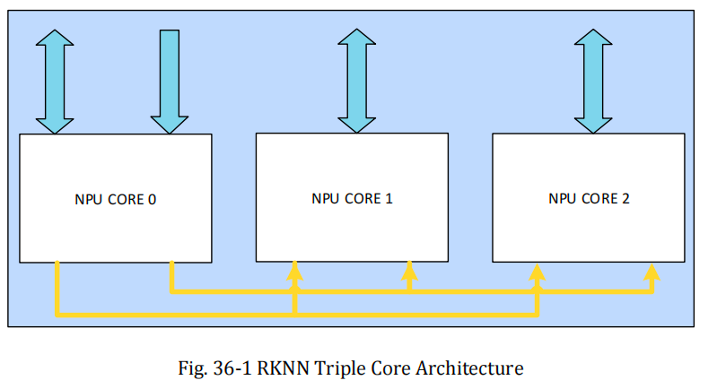

这个Pages展示本项目的开发计划和项目文档
RK3588 NPU 驱动开发路线图
进度总览
当前状态：电源域管理 (Power Domain) 目标：将添加了npu驱动的starry编译拷贝到开发板验证探测
实际计划
第一周：环境验证与基础初始化
1. 理论与环境准备
-
阅读手册与 Demo
- 研读 RK3588 技术参考手册中 NPU 章节。
- 分析 RKNN Toolkit2 的官方 Demo，理解从模型加载到推理的完整数据流
-
实体机环境验证 (基于 StarryOS 比赛版)
- 编译并烧录比赛版本的 StarryOS 代码到 RK3588 实体板。
- 成功运行一个简单的文本生成模型，确保硬件和工具链正常。
-
整理 StarryOS 对 RK3588 NPU 驱动的逆向成果
-
寄存器地图
- 按模块梳理：PC / CORE / CNA / DPU / PPU / SDMA / DDMA / GLOBAL
- 对每个寄存器记录：offset、字段含义、读写属性、默认值/复位值、关联流程
- 标注来源：TRM / Linux rknpu 驱动
-
提交协议与数据结构
-
整理
DRM_IOCTL_RKNPU_*ioctl 列表与语义（Action / MemCreate / MemMap / MemDestroy / MemSync / Submit） -
对齐结构体布局：
rknpu_mem_create/rknpu_mem_map/rknpu_task/rknpu_submit（字段意义与对齐） -
梳理
mmap(offset)规则（handle 与 offset 的编码/解码约定）
-
整理
-
任务提交流程（时序 + 状态机）
- 从“用户态提交”到“硬件执行完成”的完整时序
- 失败路径：超时、异常中断状态、非法参数
-
寄存器地图
2. 驱动框架搭建 (在StarryOS主线上完成)
-
创建模块骨架
-
在StarryOS组织的
arceos仓库中创建rknpu独立模块。 -
配置
Cargo.toml依赖。
-
在StarryOS组织的
-
NPU探测
- 实现 FDT (设备树) 解析，获取 NPU 寄存器基地址和中断号。
-
电源域管理 (Power Domain)
-
对接 PMU 驱动，按顺序开启 NPU 电源域：
-
NPUTOP -
NPU0(Core 0) -
NPU1(Core 1) -
NPU2(Core 2)
-
-
对接 PMU 驱动，按顺序开启 NPU 电源域：
3. 用户态接口适配 (DRM)
-
DRM 框架（StarryOS 主线）
-
DRM ioctl 基础解析
-
实现 ioctl 编码解析：
ioctl_nr/is_driver_ioctl/io_size
-
实现 ioctl 编码解析：
-
设备节点与基础握手
-
/dev/dri/card0：实现DRM_IOCTL_VERSION，返回 Rockchip 相关信息以通过初始化探测 -
/dev/dri/card1：实现DRM_IOCTL_VERSION，driver name 为rknpu
-
-
RKNPU driver ioctls（初期基于闭源库验证成果）
-
DRM_IOCTL_RKNPU_MEM_CREATE：返回 handle + dma_addr（设备可访问地址） -
DRM_IOCTL_RKNPU_MEM_MAP：返回可用于mmap的 offset -
mmap：根据 offset 找回 handle，并映射出可读写的用户态地址 -
DRM_IOCTL_RKNPU_SUBMIT：最小可用的同步提交（先跑通） -
DRM_IOCTL_RKNPU_MEM_DESTROY：释放 handle 对应的内存对象（避免泄漏） -
DRM_IOCTL_RKNPU_MEM_SYNC：实现 cache sync 语义（至少对常用 flags 生效） -
DRM_IOCTL_RKNPU_ACTION：实现最小集合（GetDrvVersion/GetHwVersion/ActReset/GetIommuEn）
-
-
基于逆向成果编写纯驱动（内核态自测），再次验证上述成果
-
目标：不靠
librknnrt.so，自己在内核里“拼出一份 NPU 能执行的命令”，跑通一次计算 - 待完成
-
目标：不靠
-
DRM ioctl 基础解析
第二周：核心逻辑与任务提交
1. 硬件抽象层 (HAL)
-
寄存器定义
- 封装 NPU 控制寄存器 (PC_DATA, PC_TASK_CONTROL 等)。
- 封装中断状态寄存器 (INT_STATUS, INT_CLEAR)。
-
低级操作封装
-
实现
npu_reset()(软复位)。 -
实现
npu_start()(启动计算)。
-
实现
2. 任务调度逻辑
-
IOCTL 接口对接
-
在
StarryOS中处理来自card1的 IOCTL 请求。 -
解析用户态传递的
RKNPU_SUBMIT结构体。
-
在
-
任务提交 (Job Submission)
- 申请内核 DMA 内存存放 Command Buffer。
- 将用户态指令流写入硬件寄存器。
- 触发 NPU 硬件运行。
- 任务完成判定：中断状态位/完成标志的明确化（文档与代码一致）
- 超时与异常路径：可观测日志 + 合理错误码
- 多核最小策略：至少支持 core0/core1/core2 单核提交与轮转
待定计划 (Backlog)
随着开发深入，以下内容将补充细节
- 中断处理 (IRQ Handler)：实现异步等待机制，替代轮询。
- IOMMU/SMMU 支持：实现虚实地址转换，支持非连续内存。
- 多核调度策略：如何分配任务给 3 个 NPU 核心。
项目周报
按周记录 RKNN NPU 驱动开发进展。
第一周开发日志
工作总结
这周完成了 NPU 驱动开发的准备工作，包括开发板验证、闭源库逆向文档整理、驱动骨架搭建。内容如下：
开发板验证通过 — 在 OrangePi 5 Plus（RK3588）上部署 StarryOS（NPU 版本），成功跑通 RKNN 推理测例
闭源库逆向文档整理 — 整理了 librknnrt.so 逆向成果、完整寄存器语义、模型推理全链条，发布至 GitHub Pages
驱动骨架搭建 — 创建 axnpu-rknn 独立 crate，编写 DTB 设备探测代码（dtbparse.rs），通过 rdrive 框架自动匹配 rockchip,rk3588-rknn
基础知识补充 — 学习 NPU 原理、AI 模型本质、RKNN Toolkit2 套件与仿真器
开发板验证
搭载 RK3588 芯片的 OrangePi 5 Plus 开发板到了之后，将带有 NPU 支持的 StarryOS 版本（atomgit 仓库）部署到开发板上，成功跑通测例，验证了 NPU 驱动在 StarryOS 上的可行性。
闭源库逆向与文档整理
花了 3 天时间系统整理了以下内容：
librknnrt.so闭源库逆向成果 — 梳理了用户态库的内部调用流程、ioctl 命令、内存管理机制- 寄存器语义 — 从官方 TRM 手册和 RKNN 开源内核驱动（C 语言版本）中，整理了完整的寄存器描述和语义
- 模型推理全链条 — 从
rknn_init到rknn_destroy的完整生命周期，包括任务提交流程、状态机、DMA Fence 路径等
文档链接：https://qc-gpu-driver.github.io/starryos-pulsar/documents/docs.html
这份文档不仅方便自己开发时查阅，也相当于一份社区参考文档，我也会一直维护和验证的，方便更多对 RKNN NPU 驱动感兴趣的开发者查阅和使用。
驱动骨架编写
最初尝试直接在 arceos/modules/ 下创建 axnpu-rknn 驱动模块，但遇到了较多的循环依赖问题（axdriver → axfs → axmm → axdma → axdriver），参考 StarryOS（NPU 版本）的做法，将驱动模块移动到 Starry 根目录下独立开发，等完善后再集成回 arceos。
编写了 dtbparse.rs，利用 ArceOS 的 rdrive 框架通过设备树（DTB）自动探测 NPU 设备：
#![allow(unused)] fn main() { module_driver! { name: "RKNPU", level: ProbeLevel::PostKernel, priority: ProbePriority::DEFAULT, probe_kinds: &[ ProbeKind::Fdt { compatibles: &["rockchip,rk3588-rknn"], on_probe: probe_rknpu } ], } fn probe_rknpu(info: FdtInfo<'_>, dev: PlatformDevice) -> Result<(), OnProbeError> { let name = info.node.name(); // 提取 MMIO 基址: 0xfdab0000, 大小: 0x9000 let mut regs = info.node.reg().ok_or_else(|| { /* ... */ })?; let base_reg = regs.next().ok_or_else(|| { /* ... */ })?; let mmio_base = base_reg.address as usize; let mmio_size = base_reg.size.unwrap_or(0x9000); // 提取中断号: SPI 110, 111, 112（3 个 NPU 核心） // ... Ok(()) } }
module_driver! 宏会将驱动自动注册到 rdrive 框架，内核启动时遍历 DTB，匹配 compatible = "rockchip,rk3588-rknn" 后自动调用 probe_rknpu，无需手动调用。
其它
刚接到 NPU 驱动开发任务时，虽然听说过 NPU，但对它实际是什么、解决什么问题、工作原理、如何运行都不了解。花了一天时间系统学习了以下内容：
- NPU 是什么 — 神经网络处理单元，专为矩阵运算和推理加速设计的硬件
- AI 模型的本质 — 本质上是一个函数,是大量矩阵乘法配上激活函数。训练是拟合参数，推理是执行前向传播
- 模型格式与转换 — ONNX → RKNN 格式转换，量化，以及模型在 NPU 上的执行流程
- 驱动在整个链条中的角色 — 用户态库（
librknnrt.so）通过 ioctl 与内核驱动通信，驱动负责任务调度、DMA 搬运、寄存器操作
上 Rockchip 官网下载了 rknn-toolkit2 套件，发现里面包含一个 仿真器，可以在 x86 主机上模拟 RKNPU 的部分功能。阅读了 demo 代码，理解了 RKNN 推理的基本 API 调用流程：
rknn_init()来初始化npu执行上下文 → rknn_inputs_set()读写npu寄存器设置输出输出参数 → rknn_run()写npu寄存器提醒npu开始工作和运行 → rknn_outputs_get()npu通过中断通知操作系统，用户库从约定位置读取结果 → rknn_destroy()销毁释放npu执行上下文
RK3588 RKNPU 开发文档
本文档基于 RockChip官方开源仓库和 StarryOS 仓库中对 RK3588 NPU 运行时库（闭源 librknnrt.so）及内核侧 RKNPU DRM 驱动的逆向与复现成果，整理为三个核心章节：
文档结构
| 章节 | 内容 | 适用场景 |
|---|---|---|
| RKNN 硬件特性 | 三核架构、数据精度与算力、支持的推理框架 | 了解硬件能力边界 |
| 寄存器地图 | 按模块梳理rknpu内部各个寄存器的位域、读写属性 | 写驱动、调试硬件交互 |
| IOCTL协议与数据结构 | DRM_IOCTL_RKNPU_* 命令表，结构体布局，flags枚举，mmap 规则 | 实现ioctl分发，对齐用户态ABI |
| 任务提交流程 | 从用户态提交到硬件执行完成的完整时序逻辑，包含状态机和各种失败路径 | 查询job生命周期 |
来源标注约定
文档中对每条信息标注来源，使用以下标记：
- Linux rknpu 驱动 — 来自Rockchip官方仓库中rk3588-npu内核驱动代码
- rknpu-ioctl.h — 来自 Linux rknpu 驱动include目录的 ioctl 头文件
- StarryOS Rust 驱动 — 来自
drivers/rknpu/src/的 Rust 复刻实现 - 逆向推断 — 基于代码行为推断，无官方文档确认
术语速查
| 术语 | 含义 |
|---|---|
| GEM | Graphics Execution Manager，DRM 子系统的内存对象管理框架 |
| PC | Program Counter / 任务控制器，NPU 的命令流执行引擎 |
| CNA | Convolution Neural-network Accelerator，卷积加速单元 |
| DPU | Data Processing Unit，数据后处理单元 |
| PPU | Pooling Processing Unit，池化处理单元 |
| DDMA/SDMA | Data DMA / System DMA，数据搬运引擎 |
| IOVA | I/O Virtual Address，IOMMU 映射后的设备侧虚拟地址 |
| fence | DMA fence，用于 job 完成通知与跨设备同步的内核原语 |
RKNN 手册
本栏汇总 RK3588 NPU 的硬件参考与软件接口文档。
硬件手册
NPU 三核架构、数据精度、寄存器位域详解。
IOCTL 协议
DRM_IOCTL_RKNPU_* 命令表、结构体布局、mmap 规则。
任务提交流程
从用户态提交到硬件执行完成的完整时序。
RKNN 硬件手册
来源：RK3588 TRM Chapter 36 RKNN
本章汇总 RK3588 NPU 硬件相关文档，包括硬件特性概览与完整寄存器参考。
RKNN 硬件特性
- 三核 NPU，支持三核协同 / 双核协同 / 单核独立
- 每核 384KB 内部缓冲，AHB 配置接口 + AXI 数据接口
- 支持 INT4 / INT8 / INT16 / FP16 / BF16 / TF32 多精度推理
- 功能流水线：CNA（卷积）→ CORE（MAC）→ DPU（后处理）→ PPU（池化）
- 激活函数：ReLU / Leaky ReLU / ReLUx / Sigmoid / Tanh / Softmax
- 池化：Average / Max / Min Pooling
寄存器图
每个核心拥有独立 64KB 寄存器空间，按功能模块划分：
| 模块 | 地址范围 | 功能 |
|---|---|---|
| PC | 0x0000 ~ 0x0FFF | 任务控制器 / 命令流引擎 |
| CNA | 0x1000 ~ 0x1FFF | 卷积神经网络加速单元 |
| CORE | 0x3000 ~ 0x3FFF | MAC 核心控制 |
| DPU | 0x4000 ~ 0x4FFF | 数据后处理单元 |
| DPU_RDMA | 0x5000 ~ 0x5FFF | DPU 读 DMA |
| PPU | 0x6000 ~ 0x6FFF | 池化处理单元 |
| PPU_RDMA | 0x7000 ~ 0x7FFF | PPU 读 DMA |
| DDMA | 0x8000 ~ 0x8FFF | Data DMA 引擎 |
| SDMA | 0x9000 ~ 0x9FFF | System DMA 引擎 |
| GLOBAL | 0xF000 ~ 0xFFFF | 全局使能掩码 |
RKNN 硬件特性概览
来源：RK3588 TRM Chapter 36 RKNN
RKNN 是专用于神经网络的处理单元，旨在加速人工智能（AI）领域的神经网络运算，涵盖机器视觉和自然语言处理等方向。AI 的应用范围正在不断扩大，目前已在多个领域提供功能支持，包括人脸追踪、手势与肢体追踪、图像分类、视频监控、自动语音识别（ASR）以及高级驾驶辅助系统（ADAS）。
核心特性
| 特性 | 说明 |
|---|---|
| 核心数量 | 三核 NPU（Triple NPU CORE） |
| 协作模式 | 支持三核协同、双核协同、单核独立工作 |
| 配置接口 | AHB 接口，仅用于寄存器配置（单次访问） |
| 数据接口 | AXI 接口，用于从内存取数据 |
| 内部缓冲 | 384KB × 3（每核 384KB） |


功能模块描述
AHB / AXI 接口
AXI 主接口用于从挂载在 SoC AXI 互联总线上的内存中取数据。AHB 从接口用于访问寄存器，进行配置、调试和测试。
神经网络加速引擎（Neural Network Accelerating Engine）
该引擎是神经网络运算的核心处理单元，包含卷积预处理控制器、内部缓冲区、MAC 阵列和累加器。它为识别功能提供并行卷积 MAC 运算，支持 INT4、INT8、INT16、FP16、BF16 和 TF32 数据类型。
数据处理单元（Data Processing Unit, DPU）
数据处理单元主要负责单数据运算，如 Leaky ReLU、ReLU、ReLUx、Sigmoid、Tanh 等激活函数。同时提供 Softmax、转置（Transpose）、数据格式转换等功能。
平面处理单元（Planar Processing Unit, PPU）
平面处理单元在数据处理单元输出之后执行平面操作，支持平均池化（Average Pooling）、最大池化（Max Pooling）、最小池化（Min Pooling）等。
寄存器配置取数单元（Register File Fetch Unit, PC）
寄存器配置取数单元通过 AXI 接口从外部系统内存中获取寄存器配置（即命令流），实现硬件自动配置各功能模块寄存器。
支持的数据精度与算力
| 数据类型 | 每周期 MAC 操作数（三核合计） |
|---|---|
| INT4 | 2048 × 3 = 6144 |
| INT8 | 1024 × 3 = 3072 |
| INT16 | 512 × 3 = 1536 |
| FP16 | 512 × 3 = 1536 |
| BF16 | 512 × 3 = 1536 |
| TF32 | 256 × 3 = 768 |
支持的推理框架
TensorFlow、Caffe、TFLite、PyTorch、ONNX NN、Android NN 等。
寄存器地图
RK3588 NPU 每个核心（共 3 核）拥有独立的寄存器空间，内部按功能模块划分为以下区域：
地址空间总览
| Base[15:12] | 模块 | 大小 | 地址范围 | 功能 |
|---|---|---|---|---|
4'h0 | PC | 4KB | 0x0000 ~ 0x0FFF | 任务控制器 / 命令流引擎 |
4'h1 | CNA | 4KB | 0x1000 ~ 0x1FFF | 卷积神经网络加速单元 |
4'h3 | CORE | 4KB | 0x3000 ~ 0x3FFF | MAC 核心控制 |
4'h4 | DPU | 4KB | 0x4000 ~ 0x4FFF | 数据后处理单元 |
4'h5 | DPU_RDMA | 4KB | 0x5000 ~ 0x5FFF | DPU 读 DMA |
4'h6 | PPU | 4KB | 0x6000 ~ 0x6FFF | 池化处理单元 |
4'h7 | PPU_RDMA | 4KB | 0x7000 ~ 0x7FFF | PPU 读 DMA |
4'h8 | DDMA | 4KB | 0x8000 ~ 0x8FFF | Data DMA 引擎 |
4'h9 | SDMA | 4KB | 0x9000 ~ 0x9FFF | System DMA 引擎 |
4'hF | GLOBAL | 4B | 0xF000 ~ 0xF004 | 全局使能掩码 |
来源说明：地址映射来自 RK3588 TRM Table 1-1 RKNN Address Mapping。
PC 寄存器块（Program Counter / 任务控制器）
基址：CORE_BASE + 0x0000 ｜ 地址范围：0x0000 ~ 0x0FFF
来源：RK3588 TRM §36.4.3 Detail Registers Description
PC 是 NPU 的命令流执行引擎，负责：从 DMA 地址读取寄存器命令流 → 按序写入各功能模块寄存器 → 触发执行 → 产生完成中断。
RKNN_pc_operation_enable（0x0008）
操作使能寄存器。
| Bit | 属性 | 复位值 | 字段名 | 描述 |
|---|---|---|---|---|
| 31:1 | RO | 0x0 | — | 保留 |
| 0 | RW | 0x0 | op_en | PC 操作使能。0：禁用 PC 模块；1：使能 PC 模块，为每个 task 取寄存器配置 |
RKNN_pc_base_address（0x0010）
PC 基址寄存器，指定 DMA 指令流所在的内存地址。
| Bit | 属性 | 复位值 | 字段名 | 描述 |
|---|---|---|---|---|
| 31:4 | RW | 0x0 | pc_source_addr | PC 基址。DMA 指令流所在的内存地址 |
| 3:1 | RO | 0x0 | — | 保留 |
| 0 | RW | 0x0 | pc_sel | PC 模式选择。0：PC 模式，通过 AXI DMA 取寄存器配置；1：Slave 模式，通过 AHB 设置寄存器 |
RKNN_pc_register_amounts（0x0014）
每个 task 需要取的寄存器数量。
| Bit | 属性 | 复位值 | 字段名 | 描述 |
|---|---|---|---|---|
| 31:16 | RO | 0x0 | — | 保留 |
| 15:0 | RW | 0x0 | pc_data_amount | 数据量。一个 task 需要取的寄存器数量 |
每条寄存器指令占 64 bit，格式如下：
| 位域 | 含义 |
|---|---|
[63:48] | 目标模块选择（哪个 block） |
[47:16] | 寄存器值 |
[15:0] | 各 block 内的偏移地址 |
模块选择位：
| Bit | 目标模块 |
|---|---|
| 56 | PC |
| 57 | CNA |
| 59 | CORE |
| 60 | DPU |
| 61 | DPU_RDMA |
| 62 | PPU |
| 63 | PPU_RDMA |
| 55 | 设置各 block 的 op_en |
示例：
64'h0081_0000_007f_0008将设置各 block 的 op_en（CNA, CORE, ..., PPU_RDMA）。注意：
op_en强烈建议放在寄存器列表末尾。在op_en之前，必须先设置64'h0041_xxxx_xxxx_xxxx。
RKNN_pc_interrupt_mask（0x0020）
中断掩码寄存器。置 1 使能对应中断。
| Bit | 属性 | 复位值 | 字段名 | 描述 |
|---|---|---|---|---|
| 31:17 | RO | 0x0 | — | 保留 |
| 16:0 | RW | 0x1FFFF | int_mask | 中断掩码（见下表） |
| Bit | 中断源 |
|---|---|
| 0 | CNA feature group 0 |
| 1 | CNA feature group 1 |
| 2 | CNA weight group 0 |
| 3 | CNA weight group 1 |
| 4 | CNA csc group 0 |
| 5 | CNA csc group 1 |
| 6 | CORE group 0 |
| 7 | CORE group 1 |
| 8 | DPU group 0 |
| 9 | DPU group 1 |
| 10 | PPU group 0 |
| 11 | PPU group 1 |
| 12 | DMA read error |
| 13 | DMA write error |
注意：在 PC 模式下，int_mask 设置的是最后一个 task 的中断掩码。
RKNN_pc_interrupt_clear（0x0024）
中断清除寄存器。写 1 清除对应中断位。
| Bit | 属性 | 复位值 | 字段名 | 描述 |
|---|---|---|---|---|
| 31:17 | RO | 0x0 | — | 保留 |
| 16:0 | W1C | 0x0 | int_clr | 中断清除（位定义同 int_mask） |
INT_CLEAR_ALL = 0x1FFFF（清除 bit0~bit16 全部中断）rknpu-ioctl.h
RKNN_pc_interrupt_status（0x0028）
中断状态寄存器（经过 mask 后的状态）。
| Bit | 属性 | 复位值 | 字段名 | 描述 |
|---|---|---|---|---|
| 31:17 | RO | 0x0 | — | 保留 |
| 16:0 | W1C | 0x0 | int_st | 中断状态，与 mask 位做 AND（位定义同 int_mask） |
RKNN_pc_interrupt_raw_status（0x002C）
中断原始状态寄存器（未经 mask 的原始状态）。
| Bit | 属性 | 复位值 | 字段名 | 描述 |
|---|---|---|---|---|
| 31:17 | RO | 0x0 | — | 保留 |
| 16:0 | W1C | 0x0 | int_raw_st | 中断原始状态（位定义同 int_mask） |
RKNN_pc_task_con（0x0030）
任务控制寄存器。
| Bit | 属性 | 复位值 | 字段名 | 描述 |
|---|---|---|---|---|
| 31:14 | RO | 0x0 | — | 保留 |
| 13 | W1C | 0x0 | task_count_clear | 任务计数器清除。清除当前 task 计数器，建议在 task 启动前清除 |
| 12 | RW | 0x0 | task_pp_en | Ping-pong 模式使能。0：关闭，第二组寄存器在第一组 task 完成后才取；1：开启，第二组寄存器在第一组取完后立即开始取 |
| 11:0 | RW | 0x0 | task_number | 要执行的 task 总数 |
RKNN_pc_task_dma_base_addr（0x0034）
任务 DMA 基址寄存器。
| Bit | 属性 | 复位值 | 字段名 | 描述 |
|---|---|---|---|---|
| 31:4 | RW | 0x0 | dma_base_addr | 任务基址。各 DMA（feature DMA、weight DMA、DPU DMA、PPU DMA）的地址设为偏移地址，AXI 总线上的最终地址 = 基址 + 偏移地址 |
| 3:0 | RO | 0x0 | — | 保留 |
RKNN_pc_task_status（0x003C）
任务状态寄存器（只读）。
| Bit | 属性 | 复位值 | 字段名 | 描述 |
|---|---|---|---|---|
| 31:28 | RO | 0x0 | — | 保留 |
| 27:0 | RW | 0x0 | task_status | 任务状态（见下表） |
| 位域 | 含义 |
|---|---|
| [11:0] | 当前 task 计数器值 |
| [12] | 指示第一个 task 正在执行 / 第一个 task 的寄存器正在取 |
| [13] | 指示最后一个 task 正在执行 / 最后一个 task 的寄存器正在取 |
附：驱动层补充
中断状态归一化（rknpu_fuzz_status()）
StarryOS Rust 驱动 在判定完成前，对 interrupt_status 做如下归一化处理：
| 位组 | 掩码 | 归一化规则 | 对应模块 |
|---|---|---|---|
| bit[1:0] | 0x03 | 任一非零 → 置 0x03 | CNA_FG |
| bit[3:2] | 0x0C | 任一非零 → 置 0x0C | CNA_WG |
| bit[5:4] | 0x30 | 任一非零 → 置 0x30 | CNA_CSC |
| bit[7:6] | 0xC0 | 任一非零 → 置 0xC0 | CORE |
| bit[9:8] | 0x300 | 任一非零 → 置 0x300 | DPU |
| bit[11:10] | 0xC00 | 任一非零 → 置 0xC00 | PPU |
含义 逆向推断：每个功能模块有 2 个中断 bit（G0/G1），硬件可能只置其中一个，但驱动判定完成时需要两个都为 1，因此做归一化。
CNA 寄存器块（Convolution Neural-network Accelerator）
基址：CORE_BASE + 0x1000 ｜ 地址范围：0x1000 ~ 0x1FFF
来源：RK3588 TRM §36.4.3 Detail Registers Description
CNA 是卷积加速单元，包含特征数据加载、权重加载、384KB 内部缓冲（CBUF）、序列扫描控制器（CSC）。
RKNN_cna_s_status（0x1000）
执行器状态寄存器（只读）。
| Bit | 属性 | 复位值 | 字段名 | 描述 |
|---|---|---|---|---|
| 31:18 | RO | 0x0 | — | 保留 |
| 17:16 | RO | 0x0 | status_1 | 执行器 1 状态。0：空闲；1：正在执行；2：正在执行且执行器 1 等待执行；3：保留 |
| 15:2 | RO | 0x0 | — | 保留 |
| 1:0 | RO | 0x0 | status_0 | 执行器 0 状态。0：空闲；1：正在执行；2：正在执行且执行器 1 等待执行；3：保留 |
RKNN_cna_s_pointer（0x1004）
寄存器组指针与 ping-pong 控制。
| Bit | 属性 | 复位值 | 字段名 | 描述 |
|---|---|---|---|---|
| 31:17 | RO | 0x0 | — | 保留 |
| 16 | RO | 0x0 | executer | 当前使用的寄存器组。0：执行器组 0；1：执行器组 1 |
| 15:6 | RO | 0x0 | — | 保留 |
| 5 | W1C | 0x0 | executer_pp_clear | 清除执行器组指针，写 1 清零 |
| 4 | W1C | 0x0 | pointer_pp_clear | 清除寄存器组指针，写 1 清零 |
| 3 | RW | 0x0 | pointer_pp_mode | Ping-pong 模式。0：按执行器切换（executer 0 完成后切到 1）；1：按指针切换（pointer 0 完成后切到 1） |
| 2 | RW | 0x0 | executer_pp_en | 执行器组 ping-pong 使能。0：禁用；1：使能 |
| 1 | RW | 0x0 | pointer_pp_en | 寄存器组 ping-pong 使能。0：禁用；1：使能 |
| 0 | RW | 0x0 | pointer | 当前待设置的寄存器组。0：组 0；1：组 1 |
RKNN_cna_operation_enable（0x1008）
操作使能寄存器。写入此寄存器将触发 CNA 模块开始执行。此寄存器及之后的寄存器均为 ping-pong 影子寄存器。
| Bit | 属性 | 复位值 | 字段名 | 描述 |
|---|---|---|---|---|
| 31:1 | RO | 0x0 | — | 保留 |
| 0 | RW | 0x0 | op_en | CNA 操作使能。0：禁用；1：使能 |
RKNN_cna_conv_con1（0x100C）
卷积控制寄存器 1：精度、模式、反卷积等。
| Bit | 属性 | 复位值 | 字段名 | 描述 |
|---|---|---|---|---|
| 31 | RO | 0x0 | — | 保留 |
| 30 | RW | 0x0 | nonalign_dma | CNA DMA 非对齐模式。0：禁用；1：使能（ARGB 模式下请开启，使 DMA 连续取特征数据） |
| 29 | RW | 0x0 | group_line_off | 组行取数关闭。0：使能组行取数；1：禁用（仅影响取数效率） |
| 28:17 | RO | 0x0 | — | 保留 |
| 16 | RW | 0x0 | deconv | 反卷积使能。0：禁用；1：使能 |
| 15:12 | RW | 0x0 | argb_in | 非对齐通道层控制。8：1 通道输入；9：2 通道；10：3 通道；11：4 通道 |
| 11:10 | RO | 0x0 | — | 保留 |
| 9:7 | RW | 0x0 | proc_precision | 处理精度。0：int8；1：int16；2：fp16；3：bf16；6：int4；7：tf32 |
| 6:4 | RW | 0x0 | in_precision | 输入精度。编码同 proc_precision |
| 3:0 | RW | 0x0 | conv_mode | 卷积模式。0：直接卷积；3：深度可分离卷积（Depthwise） |
RKNN_cna_conv_con2（0x1010）
卷积控制寄存器 2：kernel 分组、feature grain、CSC 控制。
| Bit | 属性 | 复位值 | 字段名 | 描述 |
|---|---|---|---|---|
| 31:24 | RO | 0x0 | — | 保留 |
| 23:16 | RW | 0x0 | kernel_group | Kernel 分组数。int8 下 32 个 kernel 为 1 组，int16/fp16 下 16 个为 1 组。例：256 个 kernel，int8 下设为 256/32−1=7 |
| 15:14 | RO | 0x0 | — | 保留 |
| 13:4 | RW | 0x0 | feature_grains | 卷积开始前需缓冲的特征数据行数。建议设为 y_stride + weight_height + 1 |
| 3 | RO | 0x0 | — | 保留 |
| 2 | RW | 0x0 | csc_wo_en | 权重扫描控制。0：使能 CSC 输出权重到 CORE；1：禁用 |
| 1 | RW | 0x0 | csc_do_en | 数据扫描控制。0：使能 CSC 输出特征数据到 CORE；1：禁用 |
| 0 | RW | 0x0 | cmd_fifo_srst | 命令 FIFO 软复位（调试用） |
RKNN_cna_conv_con3（0x1014）
卷积控制寄存器 3：多核模式、空洞卷积、反卷积步长、卷积步长。
| Bit | 属性 | 复位值 | 字段名 | 描述 |
|---|---|---|---|---|
| 31 | RO | 0x0 | — | 保留 |
| 30:28 | RW | 0x0 | nn_mode | 多核协作模式。0：32×32（单核）；1：64×32；2：96×32；4：32×64；5：32×96。单核模式保持 0 |
| 27:26 | RO | 0x0 | — | 保留 |
| 25:21 | RW | 0x0 | atrous_y_dilation | 空洞卷积 Y 方向膨胀值（列方向两像素间插入的 pad 数） |
| 20:16 | RW | 0x0 | atrous_x_dilation | 空洞卷积 X 方向膨胀值（行方向两像素间插入的 pad 数）。>0 时启用空洞卷积 |
| 15:14 | RO | 0x0 | — | 保留 |
| 13:11 | RW | 0x0 | deconv_y_stride | 反卷积 Y 步长 |
| 10:8 | RW | 0x0 | deconv_x_stride | 反卷积 X 步长 |
| 7:6 | RO | 0x0 | — | 保留 |
| 5:3 | RW | 0x0 | conv_y_stride | 卷积 Y 步长 |
| 2:0 | RW | 0x0 | conv_x_stride | 卷积 X 步长 |
RKNN_cna_data_size0（0x1020）
输入特征数据宽高。
| Bit | 属性 | 复位值 | 字段名 | 描述 |
|---|---|---|---|---|
| 31:27 | RO | 0x0 | — | 保留 |
| 26:16 | RW | 0x0 | datain_width | 输入特征数据宽度 |
| 15:11 | RO | 0x0 | — | 保留 |
| 10:0 | RW | 0x0 | datain_height | 输入特征数据高度 |
RKNN_cna_data_size1（0x1024）
输入特征数据通道数。
| Bit | 属性 | 复位值 | 字段名 | 描述 |
|---|---|---|---|---|
| 31:30 | RO | 0x0 | — | 保留 |
| 29:16 | RW | 0x0 | datain_channel_real | 真实通道数。当输入通道不是 8（int8）或 4（int16/fp16）的整数倍时，设置此字段 |
| 15:0 | RW | 0x0 | datain_channel | 输入通道数。int8 须为 8 的整数倍；int16/fp16 须为 4 的整数倍 |
RKNN_cna_data_size2（0x1028）
卷积后输出数据宽度。
| Bit | 属性 | 复位值 | 字段名 | 描述 |
|---|---|---|---|---|
| 31:11 | RO | 0x0 | — | 保留 |
| 10:0 | RW | 0x0 | dataout_width | 卷积后数据宽度 |
RKNN_cna_data_size3（0x102C）
卷积后输出数据 surface 模式与总像素数。
| Bit | 属性 | 复位值 | 字段名 | 描述 |
|---|---|---|---|---|
| 31:24 | RO | 0x0 | — | 保留 |
| 23:22 | RW | 0x0 | surf_mode | Surface 串行模式。0/1：1 surf；2：2 surf；3：4 surf |
| 21:0 | RW | 0x0 | dataout_atomics | 卷积后输出总像素数 |
RKNN_cna_weight_size0（0x1030）
权重总字节数。
| Bit | 属性 | 复位值 | 字段名 | 描述 |
|---|---|---|---|---|
| 31:0 | RW | 0x0 | weight_bytes | 本次卷积的权重总字节数 |
RKNN_cna_weight_size1（0x1034）
单个 kernel 的权重字节数。
| Bit | 属性 | 复位值 | 字段名 | 描述 |
|---|---|---|---|---|
| 31:19 | RO | 0x0 | — | 保留 |
| 18:0 | RW | 0x0 | weight_bytes_per_kernel | 单个 kernel 的权重字节数 |
RKNN_cna_weight_size2（0x1038）
Kernel 宽高与数量。
| Bit | 属性 | 复位值 | 字段名 | 描述 |
|---|---|---|---|---|
| 31:29 | RO | 0x0 | — | 保留 |
| 28:24 | RW | 0x0 | weight_width | Kernel 宽度 |
| 23:21 | RO | 0x0 | — | 保留 |
| 20:16 | RW | 0x0 | weight_height | Kernel 高度 |
| 15:14 | RO | 0x0 | — | 保留 |
| 13:0 | RW | 0x0 | weight_kernels | Kernel 数量 |
RKNN_cna_cbuf_con0（0x1040）
CBUF（内部缓冲）控制寄存器 0：数据/权重复用、Bank 分配。
| Bit | 属性 | 复位值 | 字段名 | 描述 |
|---|---|---|---|---|
| 31:14 | RO | 0x0 | — | 保留 |
| 13 | RW | 0x0 | weight_reuse | 权重数据复用使能。0：禁用；1：使能，直接从内部缓冲取权重 |
| 12 | RW | 0x0 | data_reuse | 特征数据复用使能。0：禁用；1：使能，直接从内部缓冲取数据 |
| 11 | RO | 0x0 | — | 保留 |
| 10:8 | RW | 0x0 | fc_data_bank | FC 零跳过模式的特征数据 Bank 数。FC 零跳过模式设为 1，否则必须为 0 |
| 7:4 | RW | 0x0 | weight_bank | 权重数据占用的 Bank 数。1：Bank 7；2：Bank 6-7；…；7：Bank 1-7 |
| 3:0 | RW | 0x0 | data_bank | 特征数据占用的 Bank 数。0：Bank 0；1：Bank 0-1；…；6：Bank 0-6 |
RKNN_cna_cbuf_con1（0x1044）
CBUF 控制寄存器 1。
| Bit | 属性 | 复位值 | 字段名 | 描述 |
|---|---|---|---|---|
| 31:13 | RO | 0x0 | — | 保留 |
| 12:0 | RW | 0x0 | data_entries | 存储一行特征图所需的 Bank 空间 |
RKNN_cna_cvt_con0（0x104C）
输入转换控制寄存器 0：CVT 截断值、符号、舍入、旁路。
| Bit | 属性 | 复位值 | 字段名 | 描述 |
|---|---|---|---|---|
| 31:28 | RO | 0x0 | — | 保留 |
| 27:22 | RW | 0x0 | cvt_truncate_3 | CVT 截断值 3 |
| 21:16 | RW | 0x0 | cvt_truncate_2 | CVT 截断值 2 |
| 15:10 | RW | 0x0 | cvt_truncate_1 | CVT 截断值 1 |
| 9:4 | RW | 0x0 | cvt_truncate_0 | CVT 截断值 0 |
| 3 | RW | 0x0 | data_sign | 特征数据符号。0：无符号；1：有符号 |
| 2 | RW | 0x0 | round_type | 舍入类型。0：奇入偶不入；1：0.5 向上进 1 |
| 1 | RW | 0x0 | cvt_type | 转换运算顺序。0：先乘后加；1：先加后乘 |
| 0 | RW | 0x0 | cvt_bypass | 旁路输入转换。0：使能 CVT；1：禁用 CVT |
RKNN_cna_cvt_con1（0x1050）
输入转换控制 1：第 1 通道的 scale 和 offset。
| Bit | 属性 | 复位值 | 字段名 | 描述 |
|---|---|---|---|---|
| 31:16 | RW | 0x0 | cvt_scale0 | CVT 缩放 0（第 1 通道乘法操作数） |
| 15:0 | RW | 0x0 | cvt_offset0 | CVT 偏移 0（第 1 通道加法操作数） |
RKNN_cna_cvt_con2（0x1054）
输入转换控制 2：第 2 通道。
| Bit | 属性 | 复位值 | 字段名 | 描述 |
|---|---|---|---|---|
| 31:16 | RW | 0x0 | cvt_scale1 | CVT 缩放 1（第 2 通道乘法操作数） |
| 15:0 | RW | 0x0 | cvt_offset1 | CVT 偏移 1（第 2 通道加法操作数） |
RKNN_cna_cvt_con3（0x1058）
输入转换控制 3：第 3 通道。
| Bit | 属性 | 复位值 | 字段名 | 描述 |
|---|---|---|---|---|
| 31:16 | RW | 0x0 | cvt_scale2 | CVT 缩放 2（第 3 通道乘法操作数） |
| 15:0 | RW | 0x0 | cvt_offset2 | CVT 偏移 2（第 3 通道加法操作数） |
RKNN_cna_cvt_con4（0x105C）
输入转换控制 4：第 4 通道。
| Bit | 属性 | 复位值 | 字段名 | 描述 |
|---|---|---|---|---|
| 31:16 | RW | 0x0 | cvt_scale3 | CVT 缩放 3（第 4 通道乘法操作数） |
| 15:0 | RW | 0x0 | cvt_offset3 | CVT 偏移 3（第 4 通道加法操作数） |
RKNN_cna_fc_con0（0x1060）
全连接零跳过控制 0。
| Bit | 属性 | 复位值 | 字段名 | 描述 |
|---|---|---|---|---|
| 31:16 | RW | 0x0 | fc_skip_data | FC 零跳过数据值（通常设为 0） |
| 15:1 | RO | 0x0 | — | 保留 |
| 0 | RW | 0x0 | fc_skip_en | FC 零跳过使能。0：禁用；1：使能。当某像素特征数据为 0 时，跳过对应权重的取数 |
RKNN_cna_fc_con1（0x1064）
全连接零跳过控制 1。
| Bit | 属性 | 复位值 | 字段名 | 描述 |
|---|---|---|---|---|
| 31:17 | RO | 0x0 | — | 保留 |
| 16:0 | RW | 0x0 | data_offset | FC 零跳过模式下的特征数据偏移 |
RKNN_cna_pad_con0（0x1068）
Pad 控制寄存器 0。
| Bit | 属性 | 复位值 | 字段名 | 描述 |
|---|---|---|---|---|
| 31:8 | RO | 0x0 | — | 保留 |
| 7:4 | RW | 0x0 | pad_left | 特征图左侧 pad 数 |
| 3:0 | RW | 0x0 | pad_top | 特征图顶部 pad 数 |
RKNN_cna_feature_data_addr（0x1070）
输入特征数据基址。
| Bit | 属性 | 复位值 | 字段名 | 描述 |
|---|---|---|---|---|
| 31:0 | RW | 0x0 | feature_base_addr | 特征数据地址 |
RKNN_cna_fc_con2（0x1074）
权重数据地址偏移。
| Bit | 属性 | 复位值 | 字段名 | 描述 |
|---|---|---|---|---|
| 31:17 | RO | 0x0 | — | 保留 |
| 16:0 | RW | 0x0 | weight_offset | 权重数据地址偏移 |
RKNN_cna_dma_con0（0x1078）
AXI DMA 控制寄存器 0：burst 长度。
| Bit | 属性 | 复位值 | 字段名 | 描述 |
|---|---|---|---|---|
| 31 | RW | 0x0 | ov4k_bypass | 超 4K burst 拆分。0：使能（将超 4K 的 burst 拆为 2 个）；1：旁路 |
| 30:20 | RO | 0x0 | — | 保留 |
| 19:16 | RW | 0x0 | weight_burst_len | 权重 DMA AXI burst 长度。3：burst=4；7：burst=8；15：burst=16 |
| 15:4 | RO | 0x0 | — | 保留 |
| 3:0 | RW | 0x0 | data_burst_len | 特征 DMA AXI burst 长度。编码同上 |
RKNN_cna_dma_con1（0x107C）
行步长（Line stride）。
| Bit | 属性 | 复位值 | 字段名 | 描述 |
|---|---|---|---|---|
| 31:28 | RO | 0x0 | — | 保留 |
| 27:0 | RW | 0x0 | line_stride | 行步长。含虚拟框（Virtual box）的特征宽度 |
RKNN_cna_dma_con2（0x1080）
Surface 步长。
| Bit | 属性 | 复位值 | 字段名 | 描述 |
|---|---|---|---|---|
| 31:28 | RO | 0x0 | — | 保留 |
| 27:0 | RW | 0x0 | surf_stride | Surface 步长。特征图实际 surface 面积 |
RKNN_cna_fc_data_size0（0x1084）
FC 模式下 AXI DMA 的特征输入宽高。
| Bit | 属性 | 复位值 | 字段名 | 描述 |
|---|---|---|---|---|
| 31:30 | RO | 0x0 | — | 保留 |
| 29:16 | RW | 0x0 | dma_width | AXI DMA 特征输入宽度 |
| 15:11 | RO | 0x0 | — | 保留 |
| 10:0 | RW | 0x0 | dma_height | AXI DMA 特征输入高度 |
RKNN_cna_fc_data_size1（0x1088）
FC 模式下 AXI DMA 的特征输入通道数。
| Bit | 属性 | 复位值 | 字段名 | 描述 |
|---|---|---|---|---|
| 31:16 | RO | 0x0 | — | 保留 |
| 15:0 | RW | 0x0 | dma_channel | AXI DMA 特征输入通道数 |
RKNN_cna_clk_gate（0x1090）
时钟门控控制寄存器。
| Bit | 属性 | 复位值 | 字段名 | 描述 |
|---|---|---|---|---|
| 31:5 | RO | 0x0 | — | 保留 |
| 4 | RW | 0x0 | cbuf_cs_disable_clkgate | CBUF 自动时钟门控。0：使能自动门控；1：禁用 CBUF 时钟门控 |
| 3 | RO | 0x0 | — | 保留 |
| 2 | RW | 0x0 | csc_disable_clkgate | CSC 自动时钟门控。0：使能；1：禁用 CSC 时钟门控 |
| 1 | RW | 0x0 | cna_weight_disable_clkgate | 权重取数自动时钟门控。0：使能；1：禁用 |
| 0 | RW | 0x0 | cna_feature_disable_clkgate | 特征取数自动时钟门控。0：使能；1：禁用 |
RKNN_cna_dcomp_ctrl（0x1100）
权重解压控制寄存器。
| Bit | 属性 | 复位值 | 字段名 | 描述 |
|---|---|---|---|---|
| 31:4 | RO | 0x0 | — | 保留 |
| 3 | RW | 0x0 | wt_dec_bypass | 旁路权重解压 |
| 2:0 | RW | 0x0 | decomp_control | 权重解压控制 |
RKNN_cna_dcomp_regnum（0x1104）
权重解压寄存器数。
| Bit | 属性 | 复位值 | 字段名 | 描述 |
|---|---|---|---|---|
| 31:0 | RW | 0x0 | dcomp_regnum | 权重解压寄存器数量 |
RKNN_cna_dcomp_addr0（0x1110）
权重基址。
| Bit | 属性 | 复位值 | 字段名 | 描述 |
|---|---|---|---|---|
| 31:4 | RW | 0x0 | decompress_addr0 | 权重基址 |
| 3:0 | RO | 0x0 | — | 保留 |
RKNN_cna_dcomp_amount0~15（0x1140 ~ 0x117C）
权重解压量寄存器，共 16 个，偏移 0x1140 + N×4（N = 0~15）。
| Bit | 属性 | 复位值 | 字段名 | 描述 |
|---|---|---|---|---|
| 31:0 | RW | 0x0 | dcomp_amountN | 第 N 次解压的权重数据量 |
RKNN_cna_cvt_con5（0x1180）
按通道 CVT 使能。
| Bit | 属性 | 复位值 | 字段名 | 描述 |
|---|---|---|---|---|
| 31:0 | RW | 0x0 | per_channel_cvt_en | 按通道使能 CVT 功能。int4 共 32 通道（128 bit），int8 共 16 通道 |
RKNN_cna_pad_con1（0x1184）
Pad 值寄存器。
| Bit | 属性 | 复位值 | 字段名 | 描述 |
|---|---|---|---|---|
| 31:0 | RW | 0x0 | pad_value | Pad 填充值 |
CORE 寄存器块（MAC 核心控制）
基址：CORE_BASE + 0x3000 ｜ 地址范围：0x3000 ~ 0x3FFF
来源：RK3588 TRM §36.4.3 Detail Registers Description
CORE 模块包含 MAC 阵列和累加器，负责卷积乘累加运算。
RKNN_core_s_status（0x3000）
执行器状态寄存器（只读）。
| Bit | 属性 | 复位值 | 字段名 | 描述 |
|---|---|---|---|---|
| 31:18 | RO | 0x0 | — | 保留 |
| 17:16 | RO | 0x0 | status_1 | 执行器 1 状态。0：空闲；1：正在执行；2：正在执行且执行器 1 等待执行；3：保留 |
| 15:2 | RO | 0x0 | — | 保留 |
| 1:0 | RO | 0x0 | status_0 | 执行器 0 状态。编码同 status_1 |
RKNN_core_s_pointer（0x3004）
寄存器组指针与 ping-pong 控制。
| Bit | 属性 | 复位值 | 字段名 | 描述 |
|---|---|---|---|---|
| 31:17 | RO | 0x0 | — | 保留 |
| 16 | RO | 0x0 | executer | 当前使用的寄存器组。0：执行器组 0；1：执行器组 1 |
| 15:6 | RO | 0x0 | — | 保留 |
| 5 | W1C | 0x0 | executer_pp_clear | 清除执行器组指针，写 1 清零 |
| 4 | W1C | 0x0 | pointer_pp_clear | 清除寄存器组指针，写 1 清零 |
| 3 | RW | 0x0 | pointer_pp_mode | Ping-pong 模式。0：按执行器切换；1：按指针切换 |
| 2 | RW | 0x0 | executer_pp_en | 执行器组 ping-pong 使能。0：禁用；1：使能 |
| 1 | RW | 0x0 | pointer_pp_en | 寄存器组 ping-pong 使能。0：禁用；1：使能 |
| 0 | RW | 0x0 | pointer | 当前待设置的寄存器组。0：组 0；1：组 1 |
RKNN_core_operation_enable（0x3008）
操作使能寄存器。写入此寄存器将触发 CORE 模块开始执行。此寄存器及之后的寄存器均为 ping-pong 影子寄存器。
| Bit | 属性 | 复位值 | 字段名 | 描述 |
|---|---|---|---|---|
| 31:1 | RO | 0x0 | — | 保留 |
| 0 | RW | 0x0 | op_en | CORE 操作使能。0：禁用；1：使能 |
RKNN_core_mac_gating（0x300C）
MAC 软时钟门控寄存器。
| Bit | 属性 | 复位值 | 字段名 | 描述 |
|---|---|---|---|---|
| 31:27 | RO | 0x0 | — | 保留 |
| 26:0 | RW | 0x7800800 | slcg_op_en | 软时钟门控信号 |
注意：复位值为
0x07800800，与其他寄存器不同。
RKNN_core_misc_cfg（0x3010）
杂项配置寄存器：精度、深度可分离、量化使能。
| Bit | 属性 | 复位值 | 字段名 | 描述 |
|---|---|---|---|---|
| 31:20 | RO | 0x0 | — | 保留 |
| 19:14 | RW | 0x0 | soft_gating | 累加器软门控信号 |
| 13:11 | RO | 0x0 | — | 保留 |
| 10:8 | RW | 0x0 | proc_precision | 处理精度。0：int8；1：int16；2：fp16；3：bf16；6：int4；7：tf32 |
| 7:2 | RO | 0x0 | — | 保留 |
| 1 | RW | 0x0 | dw_en | 深度可分离模式使能。0：禁用；1：使能 Depthwise 模式 |
| 0 | RW | 0x0 | qd_en | 量化特征数据计算使能。0：禁用；1：使能 |
RKNN_core_dataout_size_0（0x3014）
输出特征尺寸寄存器 0：宽高。
| Bit | 属性 | 复位值 | 字段名 | 描述 |
|---|---|---|---|---|
| 31:16 | RW | 0x0 | dataout_height | 激活后输出数据高度 |
| 15:0 | RW | 0x0 | dataout_width | 激活后输出数据宽度 |
RKNN_core_dataout_size_1（0x3018）
输出特征尺寸寄存器 1：通道数。
| Bit | 属性 | 复位值 | 字段名 | 描述 |
|---|---|---|---|---|
| 31:16 | RO | 0x0 | — | 保留 |
| 15:0 | RW | 0x0 | dataout_channel | 激活后输出数据通道数 |
RKNN_core_clip_truncate（0x301C）
截断与舍入控制寄存器。
| Bit | 属性 | 复位值 | 字段名 | 描述 |
|---|---|---|---|---|
| 31:7 | RO | 0x0 | — | 保留 |
| 6 | RW | 0x0 | round_type | 舍入类型。0：奇入偶不入；1：0.5 向上进 1 |
| 5 | RO | 0x0 | — | 保留 |
| 4:0 | RW | 0x0 | clip_truncate | 截断位数 |
DPU 寄存器块（Data Processing Unit）
基址：CORE_BASE + 0x4000 ｜ 地址范围：0x4000 ~ 0x4FFF
来源：RK3588 TRM §36.4.3 Detail Registers Description
DPU 负责后处理运算，包含三级流水线核心：BS CORE（Bias/Scale）→ BN CORE（Batch Norm）→ EW CORE（Element-Wise），以及输出转换器、LUT 引擎、转置/重组等功能。
RKNN_dpu_s_status（0x4000）
执行器状态寄存器（只读）。
| Bit | 属性 | 复位值 | 字段名 | 描述 |
|---|---|---|---|---|
| 31:18 | RO | 0x0 | — | 保留 |
| 17:16 | RO | 0x0 | status_1 | 执行器 1 状态。0：空闲；1：正在执行；2：正在执行且等待执行；3：保留 |
| 15:2 | RO | 0x0 | — | 保留 |
| 1:0 | RO | 0x0 | status_0 | 执行器 0 状态。编码同 status_1 |
RKNN_dpu_s_pointer（0x4004）
寄存器组指针与 ping-pong 控制。
| Bit | 属性 | 复位值 | 字段名 | 描述 |
|---|---|---|---|---|
| 31:17 | RO | 0x0 | — | 保留 |
| 16 | RO | 0x0 | executer | 当前使用的寄存器组。0：组 0；1：组 1 |
| 15:6 | RO | 0x0 | — | 保留 |
| 5 | W1C | 0x0 | executer_pp_clear | 清除执行器组指针，写 1 清零 |
| 4 | W1C | 0x0 | pointer_pp_clear | 清除寄存器组指针，写 1 清零 |
| 3 | RW | 0x0 | pointer_pp_mode | Ping-pong 模式。0：按执行器切换；1：按指针切换 |
| 2 | RW | 0x0 | executer_pp_en | 执行器组 ping-pong 使能 |
| 1 | RW | 0x0 | pointer_pp_en | 寄存器组 ping-pong 使能 |
| 0 | RW | 0x0 | pointer | 当前待设置的寄存器组。0：组 0；1：组 1 |
RKNN_dpu_operation_enable（0x4008）
操作使能。写入触发 DPU 执行，此寄存器及之后均为 ping-pong 影子寄存器。
| Bit | 属性 | 复位值 | 字段名 | 描述 |
|---|---|---|---|---|
| 31:1 | RO | 0x0 | — | 保留 |
| 0 | RW | 0x0 | op_en | DPU 操作使能。0：禁用；1：使能 |
RKNN_dpu_feature_mode_cfg（0x400C）
特征模式配置：flying mode、输出目标、卷积模式、burst、非对齐、转置、重组。
| Bit | 属性 | 复位值 | 字段名 | 描述 |
|---|---|---|---|---|
| 31 | RW | 0x0 | comb_use | 组合使用，同 DPU_RDMA comb_use[0] |
| 30 | RW | 0x0 | tp_en | 转置使能 |
| 29:26 | RW | 0x0 | rgp_type | 重组类型。0：全部 128bit；1：4bit；2：8bit；3：16bit；4：32bit；5：64bit |
| 25 | RW | 0x0 | nonalign | 非对齐模式使能（输出数据流与输入相同时可用） |
| 24:9 | RW | 0x0 | surf_len | 非对齐模式下存储的 8 字节数 |
| 8:5 | RW | 0x0 | burst_len | Burst 长度。3：Burst4；7：Burst8；15：Burst16 |
| 4:3 | RW | 0x0 | conv_mode | 卷积模式。0：普通卷积；3：Depthwise |
| 2:1 | RW | 0x0 | output_mode | 输出目标。[0]：输出到 PPU；[1]：输出到外部 |
| 0 | RW | 0x0 | flying_mode | Flying 模式。0：主数据来自卷积输出；1：主数据来自 MRDMA |
RKNN_dpu_data_format（0x4010）
数据格式配置：输入/输出/处理精度、负数移位值。
| Bit | 属性 | 复位值 | 字段名 | 描述 |
|---|---|---|---|---|
| 31:29 | RW | 0x0 | out_precision | 输出精度。0：int8；1：int16；2：fp16；3：bf16；4：int32；5：fp32；6：int4 |
| 28:26 | RW | 0x0 | in_precision | 输入精度（同 DPU_RDMA）。编码同上 |
| 25:16 | RW | 0x0 | ew_truncate_neg | EW CORE 负数移位值 |
| 15:10 | RW | 0x0 | bn_mul_shift_value_neg | BN CORE 负数移位值 |
| 9:4 | RW | 0x0 | bs_mul_shift_value_neg | BS CORE 负数移位值 |
| 3 | RW | 0x0 | mc_surf_out | 多 surface 输出。0：每像素 16 字节对齐；1：可输出 2/4 surface 串行 |
| 2:0 | RW | 0x0 | proc_precision | 处理精度。编码同 out_precision |
RKNN_dpu_offset_pend（0x4014）
额外通道填充值。
| Bit | 属性 | 复位值 | 字段名 | 描述 |
|---|---|---|---|---|
| 31:16 | RO | 0x0 | — | 保留 |
| 15:0 | RW | 0x0 | offset_pend | 额外通道设置值 |
RKNN_dpu_dst_base_addr（0x4020）
目标基址。
| Bit | 属性 | 复位值 | 字段名 | 描述 |
|---|---|---|---|---|
| 31:4 | RW | 0x0 | dst_base_addr | 目标基址 |
| 3:0 | RO | 0x0 | — | 保留 |
RKNN_dpu_dst_surf_stride（0x4024）
输出 surface 步长。
| Bit | 属性 | 复位值 | 字段名 | 描述 |
|---|---|---|---|---|
| 31:4 | RW | 0x0 | dst_surf_stride | 输出 shape 的 surface 步长 |
| 3:0 | RO | 0x0 | — | 保留 |
RKNN_dpu_data_cube_width（0x4030）
输入 cube 宽度。
| Bit | 属性 | 复位值 | 字段名 | 描述 |
|---|---|---|---|---|
| 31:13 | RO | 0x0 | — | 保留 |
| 12:0 | RW | 0x0 | width | 输入 cube 宽度 |
RKNN_dpu_data_cube_height（0x4034）
输入 cube 高度 + minmax 控制。
| Bit | 属性 | 复位值 | 字段名 | 描述 |
|---|---|---|---|---|
| 31:25 | RO | 0x0 | — | 保留 |
| 24:22 | RW | 0x0 | minmax_ctl | MinMax 配置。[0]：使能；[1]：类型；[2]：仅概率 |
| 21:13 | RO | 0x0 | — | 保留 |
| 12:0 | RW | 0x0 | height | 输入 cube 高度 |
RKNN_dpu_data_cube_notch_addr（0x4038）
Notch 地址（宽度末尾到 shape 行末的像素数）。
| Bit | 属性 | 复位值 | 字段名 | 描述 |
|---|---|---|---|---|
| 31:29 | RO | 0x0 | — | 保留 |
| 28:16 | RW | 0x0 | notch_addr_1 | Notch 地址 1 |
| 15:13 | RO | 0x0 | — | 保留 |
| 12:0 | RW | 0x0 | notch_addr_0 | Notch 地址 0 |
RKNN_dpu_data_cube_channel（0x403C）
输入 cube 通道数。
| Bit | 属性 | 复位值 | 字段名 | 描述 |
|---|---|---|---|---|
| 31:29 | RO | 0x0 | — | 保留 |
| 28:16 | RW | 0x0 | orig_channel | 原始输出通道数 |
| 15:13 | RO | 0x0 | — | 保留 |
| 12:0 | RW | 0x0 | channel | Cube 通道数 |
RKNN_dpu_bs_cfg（0x4040）
BS CORE 配置：ALU 算法、操作数来源、ReLU/PRELU/RELUX 控制。
| Bit | 属性 | 复位值 | 字段名 | 描述 |
|---|---|---|---|---|
| 31:20 | RO | 0x0 | — | 保留 |
| 19:16 | RW | 0x0 | bs_alu_algo | BS ALU 运算类型。2：Add；4：Minus |
| 15:9 | RO | 0x0 | — | 保留 |
| 8 | RW | 0x0 | bs_alu_src | ALU 操作数来源。0：寄存器；1：外部 |
| 7 | RW | 0x0 | bs_relux_en | RELUX 使能 |
| 6 | RW | 0x0 | bs_relu_bypass | 旁路 BS RELU。0：不旁路；1：旁路 |
| 5 | RW | 0x0 | bs_mul_prelu | MUL PRELU 使能 |
| 4 | RW | 0x0 | bs_mul_bypass | 旁路 BS MUL |
| 3:2 | RO | 0x0 | — | 保留 |
| 1 | RW | 0x0 | bs_alu_bypass | 旁路 BS ALU |
| 0 | RW | 0x0 | bs_bypass | 旁路整个 BS CORE |
RKNN_dpu_bs_alu_cfg（0x4044）
BS ALU 操作数。
| Bit | 属性 | 复位值 | 字段名 | 描述 |
|---|---|---|---|---|
| 31:0 | RW | 0x0 | bs_alu_operand | BS CORE ALU 操作数 |
RKNN_dpu_bs_mul_cfg（0x4048）
BS MUL 配置：操作数、移位值、来源。
| Bit | 属性 | 复位值 | 字段名 | 描述 |
|---|---|---|---|---|
| 31:16 | RW | 0x0 | bs_mul_operand | BS MUL 操作数 |
| 15:14 | RO | 0x0 | — | 保留 |
| 13:8 | RW | 0x0 | bs_mul_shift_value | BS 正数移位值 |
| 7:2 | RO | 0x0 | — | 保留 |
| 1 | RW | 0x0 | bs_truncate_src | 移位值来源。0：寄存器；1：外部 |
| 0 | RW | 0x0 | bs_mul_src | MUL 操作数来源。0：寄存器；1：外部 |
RKNN_dpu_bs_relux_cmp_value（0x404C）
BS RELUX 比较值。
| Bit | 属性 | 复位值 | 字段名 | 描述 |
|---|---|---|---|---|
| 31:0 | RW | 0x0 | bs_relux_cmp_dat | RELUX 比较值 |
RKNN_dpu_bs_ow_cfg（0x4050）
BS OW（CPEND）配置 + 重组计数器 + 转置。
| Bit | 属性 | 复位值 | 字段名 | 描述 |
|---|---|---|---|---|
| 31:28 | RW | 0x0 | rgp_cnter | 重组计数器。0：全选；1：每 2 选 1；2：每 4 选 1；3：每 8 选 1 |
| 27 | RW | 0x0 | tp_org_en | 原始转置使能 |
| 26:11 | RO | 0x0 | — | 保留 |
| 10:8 | RW | 0x0 | size_e_2 | 最后一行输出每行 8 通道数（−1） |
| 7:5 | RW | 0x0 | size_e_1 | 中间行输出每行 8 通道数（−1） |
| 4:2 | RW | 0x0 | size_e_0 | 第一行输出每行 8 通道数（−1） |
| 1 | RW | 0x0 | od_bypass | 旁路 CPEND |
| 0 | RW | 0x0 | ow_src | CPEND 操作数来源。0：寄存器；1：外部 |
RKNN_dpu_bs_ow_op（0x4054）
CPEND 操作数。
| Bit | 属性 | 复位值 | 字段名 | 描述 |
|---|---|---|---|---|
| 31:16 | RO | 0x0 | — | 保留 |
| 15:0 | RW | 0x0 | ow_op | CPEND 操作数 |
RKNN_dpu_wdma_size_0（0x4058）
DPU WDMA 尺寸 0：转置精度、通道。
| Bit | 属性 | 复位值 | 字段名 | 描述 |
|---|---|---|---|---|
| 31:28 | RO | 0x0 | — | 保留 |
| 27 | RW | 0x0 | tp_precision | 转置精度。0：8bit；1：16bit |
| 26:16 | RW | 0x0 | size_c_wdma | WDMA 的 size_c |
| 15:13 | RO | 0x0 | — | 保留 |
| 12:0 | RW | 0x0 | channel_wdma | WDMA 通道数 |
RKNN_dpu_wdma_size_1（0x405C）
DPU WDMA 尺寸 1：宽高。
| Bit | 属性 | 复位值 | 字段名 | 描述 |
|---|---|---|---|---|
| 31:29 | RO | 0x0 | — | 保留 |
| 28:16 | RW | 0x0 | height_wdma | WDMA 高度 |
| 15:13 | RO | 0x0 | — | 保留 |
| 12:0 | RW | 0x0 | width_wdma | WDMA 宽度 |
RKNN_dpu_bn_cfg（0x4060）
BN CORE 配置：ALU 算法、操作数来源、ReLU/PRELU/RELUX 控制。
| Bit | 属性 | 复位值 | 字段名 | 描述 |
|---|---|---|---|---|
| 31:20 | RO | 0x0 | — | 保留 |
| 19:16 | RW | 0x0 | bn_alu_algo | BN ALU 运算类型。2：Add；4：Minus |
| 15:9 | RO | 0x0 | — | 保留 |
| 8 | RW | 0x0 | bn_alu_src | ALU 操作数来源。0：寄存器；1：外部 |
| 7 | RW | 0x0 | bn_relux_en | RELUX 使能 |
| 6 | RW | 0x0 | bn_relu_bypass | 旁路 BN RELU |
| 5 | RW | 0x0 | bn_mul_prelu | MUL PRELU 使能 |
| 4 | RW | 0x0 | bn_mul_bypass | 旁路 BN MUL |
| 3:2 | RO | 0x0 | — | 保留 |
| 1 | RW | 0x0 | bn_alu_bypass | 旁路 BN ALU |
| 0 | RW | 0x0 | bn_bypass | 旁路整个 BN CORE |
RKNN_dpu_bn_alu_cfg（0x4064）
BN ALU 操作数。
| Bit | 属性 | 复位值 | 字段名 | 描述 |
|---|---|---|---|---|
| 31:0 | RW | 0x0 | bn_alu_operand | BN CORE ALU 操作数 |
RKNN_dpu_bn_mul_cfg（0x4068）
BN MUL 配置。
| Bit | 属性 | 复位值 | 字段名 | 描述 |
|---|---|---|---|---|
| 31:16 | RW | 0x0 | bn_mul_operand | BN MUL 操作数 |
| 15:14 | RO | 0x0 | — | 保留 |
| 13:8 | RW | 0x0 | bn_mul_shift_value | BN 正数移位值 |
| 7:2 | RO | 0x0 | — | 保留 |
| 1 | RW | 0x0 | bn_truncate_src | 移位值来源。0：寄存器；1：外部 |
| 0 | RW | 0x0 | bn_mul_src | MUL 操作数来源。0：寄存器；1：外部 |
RKNN_dpu_bn_relux_cmp_value（0x406C）
BN RELUX 比较值。
| Bit | 属性 | 复位值 | 字段名 | 描述 |
|---|---|---|---|---|
| 31:0 | RW | 0x0 | bn_relux_cmp_dat | BN RELUX 比较数据 |
RKNN_dpu_ew_cfg（0x4070）
EW CORE 配置：ALU 算法（Max/Min/Add/Div/Minus/Abs/Neg/Floor/Ceil）、LUT、转换器、PRELU 等。
| Bit | 属性 | 复位值 | 字段名 | 描述 |
|---|---|---|---|---|
| 31 | RW | 0x0 | ew_cvt_type | EW 输入转换类型。0：先乘后加；1：先加后乘 |
| 30 | RW | 0x0 | ew_cvt_round | EW 输入转换舍入。0：奇入偶不入；1：0.5 向上进 1 |
| 29:28 | RW | 0x0 | ew_data_mode | ERDMA 数据模式 |
| 27:24 | RO | 0x0 | — | 保留 |
| 23:22 | RW | 0x0 | edata_size | ERDMA cube 数据大小。0：4bit；1：8bit；2：16bit；3：32bit |
| 21 | RW | 0x0 | ew_equal_en | MinMax 相等使能 |
| 20 | RW | 0x0 | ew_binary_en | MinMax 二值使能 |
| 19:16 | RW | 0x0 | ew_alu_algo | EW ALU 运算。0：Max；1：Min；2：Add；3：Div；4：Minus；5：Abs；6：Neg；7：Floor；8：Ceil |
| 15:11 | RO | 0x0 | — | 保留 |
| 10 | RW | 0x0 | ew_relux_en | RELUX 使能 |
| 9 | RW | 0x0 | ew_relu_bypass | 旁路 EW RELU |
| 8 | RW | 0x0 | ew_op_cvt_bypass | 旁路 EW 输入转换器 |
| 7 | RW | 0x0 | ew_lut_bypass | 旁路 LUT |
| 6 | RW | 0x0 | ew_op_src | 操作数来源。0：寄存器；1：外部 |
| 5 | RW | 0x0 | ew_mul_prelu | MUL PRELU 使能 |
| 4:3 | RO | 0x0 | — | 保留 |
| 2 | RW | 0x0 | ew_op_type | 运算类型。0：ALU；1：MUL |
| 1 | RW | 0x0 | ew_op_bypass | 旁路 EW ALU 和 MUL |
| 0 | RW | 0x0 | ew_bypass | 旁路整个 EW CORE |
RKNN_dpu_ew_cvt_offset_value（0x4074）
EW 输入转换偏移。
| Bit | 属性 | 复位值 | 字段名 | 描述 |
|---|---|---|---|---|
| 31:0 | RW | 0x0 | ew_op_cvt_offset | EW 转换偏移 |
RKNN_dpu_ew_cvt_scale_value（0x4078）
EW 转换缩放与移位。
| Bit | 属性 | 复位值 | 字段名 | 描述 |
|---|---|---|---|---|
| 31:22 | RW | 0x0 | ew_truncate | EW CORE 移位值 |
| 21:16 | RW | 0x0 | ew_op_cvt_shift | EW 转换移位值 |
| 15:0 | RW | 0x0 | ew_op_cvt_scale | EW 转换缩放 |
RKNN_dpu_ew_relux_cmp_value（0x407C）
EW RELUX 比较值。
| Bit | 属性 | 复位值 | 字段名 | 描述 |
|---|---|---|---|---|
| 31:0 | RW | 0x0 | ew_relux_cmp_dat | EW RELUX 比较数据 |
RKNN_dpu_out_cvt_offset（0x4080）
输出转换偏移。
| Bit | 属性 | 复位值 | 字段名 | 描述 |
|---|---|---|---|---|
| 31:0 | RW | 0x0 | out_cvt_offset | 输出转换器偏移 |
RKNN_dpu_out_cvt_scale（0x4084）
输出转换缩放 + fp32→fp16 使能。
| Bit | 属性 | 复位值 | 字段名 | 描述 |
|---|---|---|---|---|
| 31:17 | RO | 0x0 | — | 保留 |
| 16 | RW | 0x0 | fp32tofp16_en | 使能输出 fp32→fp16 转换 |
| 15:0 | RW | 0x0 | out_cvt_scale | 输出转换器缩放 |
RKNN_dpu_out_cvt_shift（0x4088）
输出转换移位、舍入、指数。
| Bit | 属性 | 复位值 | 字段名 | 描述 |
|---|---|---|---|---|
| 31 | RW | 0x0 | cvt_type | 输出转换类型。0：先乘后加；1：先加后乘 |
| 30 | RW | 0x0 | cvt_round | 输出转换舍入。0：奇入偶不入；1：0.5 向上进 1 |
| 29:20 | RO | 0x0 | — | 保留 |
| 19:12 | RW | 0x0 | minus_exp | 输出 CVT 减指数 |
| 11:0 | RW | 0x0 | out_cvt_shift | 输出转换器移位 |
RKNN_dpu_ew_op_value_0~7（0x4090 ~ 0x40AC）
EW CORE 操作数寄存器，共 8 个，偏移 0x4090 + N×4（N = 0~7）。
| Bit | 属性 | 复位值 | 字段名 | 描述 |
|---|---|---|---|---|
| 31:0 | RW | 0x0 | ew_operand_N | 第 N+1 个 EW 操作数 |
RKNN_dpu_surface_add（0x40C0）
Surface 加法器。
| Bit | 属性 | 复位值 | 字段名 | 描述 |
|---|---|---|---|---|
| 31:4 | RW | 0x0 | surf_add | 一行中有多少个 surface |
| 3:0 | RO | 0x0 | — | 保留 |
RKNN_dpu_lut_access_cfg（0x4100）
LUT 访问配置。
| Bit | 属性 | 复位值 | 字段名 | 描述 |
|---|---|---|---|---|
| 31:18 | RO | 0x0 | — | 保留 |
| 17 | RW | 0x0 | lut_access_type | 访问类型。0：读；1：写 |
| 16 | RW | 0x0 | lut_table_id | 访问 ID。0：LE LUT；1：LO LUT |
| 15:10 | RO | 0x0 | — | 保留 |
| 9:0 | RW | 0x0 | lut_addr | 访问地址 |
RKNN_dpu_lut_access_data（0x4104）
LUT 访问数据。
| Bit | 属性 | 复位值 | 字段名 | 描述 |
|---|---|---|---|---|
| 31:16 | RO | 0x0 | — | 保留 |
| 15:0 | RW | 0x0 | lut_access_data | LUT 访问数据 |
RKNN_dpu_lut_cfg（0x4108）
LUT 配置。
| Bit | 属性 | 复位值 | 字段名 | 描述 |
|---|---|---|---|---|
| 31:8 | RO | 0x0 | — | 保留 |
| 7 | RW | 0x0 | lut_cal_sel | LUT 计算选择（仅 lut_expand_en=1 时有效） |
| 6 | RW | 0x0 | lut_hybrid_priority | 混合流优先级。0：LE LUT；1：LO LUT |
| 5 | RW | 0x0 | lut_oflow_priority | 上溢优先级。0：LE；1：LO |
| 4 | RW | 0x0 | lut_uflow_priority | 下溢优先级。0：LE；1：LO |
| 3:2 | RW | 0x0 | lut_lo_le_mux | LO/LE LUT 复用 |
| 1 | RW | 0x0 | lut_expand_en | 扩展两个小 LUT 为一个大 LUT |
| 0 | RW | 0x0 | lut_road_sel | LUT 路径选择。0：第 1 路；1：第 2 路 |
RKNN_dpu_lut_info（0x410C）
LUT 索引选择。
| Bit | 属性 | 复位值 | 字段名 | 描述 |
|---|---|---|---|---|
| 31:24 | RO | 0x0 | — | 保留 |
| 23:16 | RW | 0x0 | lut_lo_index_select | LO LUT 索引选择（索引生成器中选择哪些位作为索引） |
| 15:8 | RW | 0x0 | lut_le_index_select | LE LUT 索引选择 |
| 7:0 | RO | 0x0 | — | 保留 |
RKNN_dpu_lut_le_start（0x4110）
| Bit | 属性 | 复位值 | 字段名 | 描述 |
|---|---|---|---|---|
| 31:0 | RW | 0x0 | lut_le_start | LE LUT 起始点 |
RKNN_dpu_lut_le_end（0x4114）
| Bit | 属性 | 复位值 | 字段名 | 描述 |
|---|---|---|---|---|
| 31:0 | RW | 0x0 | lut_le_end | LE LUT 终止点 |
RKNN_dpu_lut_lo_start（0x4118）
| Bit | 属性 | 复位值 | 字段名 | 描述 |
|---|---|---|---|---|
| 31:0 | RW | 0x0 | lut_lo_start | LO LUT 起始点 |
RKNN_dpu_lut_lo_end（0x411C）
| Bit | 属性 | 复位值 | 字段名 | 描述 |
|---|---|---|---|---|
| 31:0 | RW | 0x0 | lut_lo_end | LO LUT 终止点 |
RKNN_dpu_lut_le_slope_scale（0x4120）
LE LUT 斜率缩放（上溢/下溢）。
| Bit | 属性 | 复位值 | 字段名 | 描述 |
|---|---|---|---|---|
| 31:16 | RW | 0x0 | lut_le_slope_oflow_scale | LE LUT 上溢斜率缩放 |
| 15:0 | RW | 0x0 | lut_le_slope_uflow_scale | LE LUT 下溢斜率缩放 |
RKNN_dpu_lut_le_slope_shift（0x4124）
LE LUT 斜率移位。
| Bit | 属性 | 复位值 | 字段名 | 描述 |
|---|---|---|---|---|
| 31:10 | RO | 0x0 | — | 保留 |
| 9:5 | RW | 0x0 | lut_le_slope_oflow_shift | LE LUT 上溢斜率移位 |
| 4:0 | RW | 0x0 | lut_le_slope_uflow_shift | LE LUT 下溢斜率移位 |
RKNN_dpu_lut_lo_slope_scale（0x4128）
LO LUT 斜率缩放。
| Bit | 属性 | 复位值 | 字段名 | 描述 |
|---|---|---|---|---|
| 31:16 | RW | 0x0 | lut_lo_slope_oflow_scale | LO LUT 上溢斜率缩放 |
| 15:0 | RW | 0x0 | lut_lo_slope_uflow_scale | LO LUT 下溢斜率缩放 |
RKNN_dpu_lut_lo_slope_shift（0x412C）
LO LUT 斜率移位。
| Bit | 属性 | 复位值 | 字段名 | 描述 |
|---|---|---|---|---|
| 31:10 | RO | 0x0 | — | 保留 |
| 9:5 | RW | 0x0 | lut_lo_slope_oflow_shift | LO LUT 上溢斜率移位 |
| 4:0 | RW | 0x0 | lut_lo_slope_uflow_shift | LO LUT 下溢斜率移位 |
DPU_RDMA 寄存器块
基址：CORE_BASE + 0x5000 ｜ 地址范围：0x5000 ~ 0x5FFF
来源：RK3588 TRM §36.4.3 Detail Registers Description
DPU_RDMA 负责为 DPU 从外部内存读取输入数据，包含四路 DMA 引擎：MRDMA（主数据）、BRDMA（BS 操作数）、NRDMA（BN 操作数）、ERDMA（EW 操作数）。
RKNN_dpu_rdma_s_status（0x5000）
执行器状态寄存器（只读）。
| Bit | 属性 | 复位值 | 字段名 | 描述 |
|---|---|---|---|---|
| 31:18 | RO | 0x0 | — | 保留 |
| 17:16 | RO | 0x0 | status_1 | 执行器 1 状态。0：空闲；1：正在执行；2：正在执行且等待执行；3：保留 |
| 15:2 | RO | 0x0 | — | 保留 |
| 1:0 | RO | 0x0 | status_0 | 执行器 0 状态。编码同 status_1 |
RKNN_dpu_rdma_s_pointer（0x5004）
寄存器组指针与 ping-pong 控制。
| Bit | 属性 | 复位值 | 字段名 | 描述 |
|---|---|---|---|---|
| 31:17 | RO | 0x0 | — | 保留 |
| 16 | RO | 0x0 | executer | 当前使用的寄存器组。0：组 0；1：组 1 |
| 15:6 | RO | 0x0 | — | 保留 |
| 5 | W1C | 0x0 | executer_pp_clear | 清除执行器组指针，写 1 清零 |
| 4 | W1C | 0x0 | pointer_pp_clear | 清除寄存器组指针，写 1 清零 |
| 3 | RW | 0x0 | pointer_pp_mode | Ping-pong 模式。0：按执行器切换；1：按指针切换 |
| 2 | RW | 0x0 | executer_pp_en | 执行器组 ping-pong 使能 |
| 1 | RW | 0x0 | pointer_pp_en | 寄存器组 ping-pong 使能 |
| 0 | RW | 0x0 | pointer | 当前待设置的寄存器组。0：组 0；1：组 1 |
RKNN_dpu_rdma_operation_enable（0x5008）
操作使能。写入触发 DPU_RDMA 执行，此寄存器及之后均为 ping-pong 影子寄存器。
| Bit | 属性 | 复位值 | 字段名 | 描述 |
|---|---|---|---|---|
| 31:1 | RO | 0x0 | — | 保留 |
| 0 | RW | 0x0 | op_en | DPU_RDMA 操作使能。0：禁用；1：使能 |
RKNN_dpu_rdma_data_cube_width（0x500C）
输入特征宽度。
| Bit | 属性 | 复位值 | 字段名 | 描述 |
|---|---|---|---|---|
| 31:13 | RO | 0x0 | — | 保留 |
| 12:0 | RW | 0x0 | width | 输入特征宽度（需减 1） |
RKNN_dpu_rdma_data_cube_height（0x5010）
输入特征高度 + EW line notch。
| Bit | 属性 | 复位值 | 字段名 | 描述 |
|---|---|---|---|---|
| 31:29 | RO | 0x0 | — | 保留 |
| 28:16 | RW | 0x0 | ew_line_notch_addr | EW 行 notch |
| 15:13 | RO | 0x0 | — | 保留 |
| 12:0 | RW | 0x0 | height | 输入特征高度（需减 1） |
RKNN_dpu_rdma_data_cube_channel（0x5014）
输入特征通道数。
| Bit | 属性 | 复位值 | 字段名 | 描述 |
|---|---|---|---|---|
| 31:13 | RO | 0x0 | — | 保留 |
| 12:0 | RW | 0x0 | channel | 输入特征通道数（需减 1） |
RKNN_dpu_rdma_src_base_addr（0x5018）
Flying 模式源地址。
| Bit | 属性 | 复位值 | 字段名 | 描述 |
|---|---|---|---|---|
| 31:0 | RW | 0x0 | src_base_addr | Flying 模式源地址 |
RKNN_dpu_rdma_brdma_cfg（0x501C）
BRDMA（BS 操作数读取 DMA）配置。
| Bit | 属性 | 复位值 | 字段名 | 描述 |
|---|---|---|---|---|
| 31:5 | RO | 0x0 | — | 保留 |
| 4:1 | RW | 0x0 | brdma_data_use | 读取数据类型。[0]：ALU 操作数；[1]：CPEND 操作数；[2]：MUL 操作数；[3]：TRT 操作数 |
| 0 | RO | 0x0 | — | 保留 |
RKNN_dpu_rdma_bs_base_addr（0x5020）
BS 操作数基址。
| Bit | 属性 | 复位值 | 字段名 | 描述 |
|---|---|---|---|---|
| 31:0 | RW | 0x0 | bs_base_addr | 读取 BS ALU、BS CPEND、BS MUL 操作数的基址 |
RKNN_dpu_rdma_nrdma_cfg（0x5028）
NRDMA（BN 操作数读取 DMA）配置。
| Bit | 属性 | 复位值 | 字段名 | 描述 |
|---|---|---|---|---|
| 31:5 | RO | 0x0 | — | 保留 |
| 4:1 | RW | 0x0 | nrdma_data_use | 读取数据类型。[0]：ALU 操作数；[1]：CPEND 操作数（固定为 0，BN 无 CPEND）；[2]：MUL 操作数；[3]：TRT 操作数 |
| 0 | RO | 0x0 | — | 保留 |
RKNN_dpu_rdma_bn_base_addr（0x502C）
BN 操作数基址。
| Bit | 属性 | 复位值 | 字段名 | 描述 |
|---|---|---|---|---|
| 31:0 | RW | 0x0 | bn_base_addr | 读取 BN ALU、BN MUL 操作数的基址 |
RKNN_dpu_rdma_erdma_cfg（0x5034）
ERDMA（EW 操作数读取 DMA）配置。
| Bit | 属性 | 复位值 | 字段名 | 描述 |
|---|---|---|---|---|
| 31:30 | RW | 0x0 | erdma_data_mode | 数据模式。0：按通道；1：按像素；2：按通道×像素；3：保留 |
| 29 | RW | 0x0 | erdma_surf_mode | Surface 模式。0：1 surface 串行；1：2 surface 串行 |
| 28 | RW | 0x0 | erdma_nonalign | 非对齐模式。0：禁用；1：使能 |
| 27:4 | RO | 0x0 | — | 保留 |
| 3:2 | RW | 0x0 | erdma_data_size | ERDMA 读取精度。0：4bit；1：8bit；2：16bit；3：32bit |
| 1 | RW | 0x0 | ov4k_bypass | 超 4K burst 拆分。0：使能；1：旁路 |
| 0 | RW | 0x0 | erdma_disable | 禁用 ERDMA。0：不禁用；1：禁用 |
RKNN_dpu_rdma_ew_base_addr（0x5038）
EW 操作数基址。
| Bit | 属性 | 复位值 | 字段名 | 描述 |
|---|---|---|---|---|
| 31:0 | RW | 0x0 | ew_base_addr | 读取 EW 操作数的基址 |
RKNN_dpu_rdma_ew_surf_stride（0x5040）
EW 特征图 surface 步长。
| Bit | 属性 | 复位值 | 字段名 | 描述 |
|---|---|---|---|---|
| 31:4 | RW | 0x0 | ew_surf_stride | EW 特征图 surface 步长。若 erdma_data_mode 为按通道模式，需设为 1 |
| 3:0 | RO | 0x0 | — | 保留 |
RKNN_dpu_rdma_feature_mode_cfg（0x5044）
特征模式配置：精度、burst、组合使用、flying mode、unpooling。
| Bit | 属性 | 复位值 | 字段名 | 描述 |
|---|---|---|---|---|
| 31:18 | RO | 0x0 | — | 保留 |
| 17:15 | RW | 0x0 | in_precision | 输入数据精度。0：int8；1：int16；2：fp16；3：bf16；4：int32；5：fp32；6：int4 |
| 14:11 | RW | 0x0 | burst_len | Burst 长度。3：Burst4；7：Burst8；15：Burst16 |
| 10:8 | RW | 0x0 | comb_use | 组合使用。[0]：MRDMA 和 ERDMA 读同一数据；[1]：数据送 MRDMA；[2]：数据送 ERDMA |
| 7:5 | RW | 0x0 | proc_precision | 处理精度。编码同 in_precision |
| 4 | RW | 0x0 | mrdma_disable | 禁用 MRDMA。0：不禁用；1：禁用 |
| 3 | RW | 0x0 | mrdma_fp16tofp32_en | 使能 DPU 输入 fp16→fp32 转换 |
| 2:1 | RW | 0x0 | conv_mode | 卷积模式。0：DC；3：Depthwise |
| 0 | RW | 0x0 | flying_mode | Flying 模式。0：主数据来自卷积输出；1：主数据来自 MRDMA |
RKNN_dpu_rdma_src_dma_cfg（0x5048）
源 DMA 配置：line notch、unpooling 参数。
| Bit | 属性 | 复位值 | 字段名 | 描述 |
|---|---|---|---|---|
| 31:19 | RW | 0x0 | line_notch_addr | 宽度末尾到 shape 特征行末的像素数 |
| 18:14 | RO | 0x0 | — | 保留 |
| 13 | RW | 0x0 | pooling_method | 池化方法。0：平均池化（上采样可用此模式）；1：最小/最大池化 |
| 12 | RW | 0x0 | unpooling_en | 反池化使能 |
| 11:9 | RW | 0x0 | kernel_stride_height | 反池化 kernel 步长高度（−1） |
| 8:6 | RW | 0x0 | kernel_stride_width | 反池化 kernel 步长宽度（−1） |
| 5:3 | RW | 0x0 | kernel_height | 反池化 kernel 高度（−1） |
| 2:0 | RW | 0x0 | kernel_width | 反池化 kernel 宽度（−1） |
RKNN_dpu_rdma_surf_notch（0x504C）
Surface notch。
| Bit | 属性 | 复位值 | 字段名 | 描述 |
|---|---|---|---|---|
| 31:4 | RW | 0x0 | surf_notch_addr | 当前处理特征图末尾到 shape 特征图末尾的像素数 |
| 3:0 | RO | 0x0 | — | 保留 |
RKNN_dpu_rdma_pad_cfg（0x5064）
反池化 Pad 配置。
| Bit | 属性 | 复位值 | 字段名 | 描述 |
|---|---|---|---|---|
| 31:16 | RW | 0x0 | pad_value | Pad 填充值 |
| 15:7 | RO | 0x0 | — | 保留 |
| 6:4 | RW | 0x0 | pad_top | 反池化顶部 pad |
| 3 | RO | 0x0 | — | 保留 |
| 2:0 | RW | 0x0 | pad_left | 反池化左侧 pad |
RKNN_dpu_rdma_weight（0x5068）
四路 DMA 仲裁权重。
| Bit | 属性 | 复位值 | 字段名 | 描述 |
|---|---|---|---|---|
| 31:24 | RW | 0x0 | e_weight | ERDMA 仲裁权重 |
| 23:16 | RW | 0x0 | n_weight | NRDMA 仲裁权重 |
| 15:8 | RW | 0x0 | b_weight | BRDMA 仲裁权重 |
| 7:0 | RW | 0x0 | m_weight | MRDMA 仲裁权重 |
RKNN_dpu_rdma_ew_surf_notch（0x506C）
EW surface notch。
| Bit | 属性 | 复位值 | 字段名 | 描述 |
|---|---|---|---|---|
| 31:4 | RW | 0x0 | ew_surf_notch | EW surface notch |
| 3:0 | RO | 0x0 | — | 保留 |
PPU 寄存器块（Planar Processing Unit）
基址：CORE_BASE + 0x6000 ｜ 地址范围：0x6000 ~ 0x6FFF
来源：RK3588 TRM §36.4.3 Detail Registers Description
PPU 负责池化运算，支持平均池化、最大池化、最小池化，可与 DPU 流水线级联或独立 flying 模式运行。
RKNN_ppu_s_status（0x6000）
执行器状态寄存器（只读）。
| Bit | 属性 | 复位值 | 字段名 | 描述 |
|---|---|---|---|---|
| 31:18 | RO | 0x0 | — | 保留 |
| 17:16 | RO | 0x0 | status_1 | 执行器 1 状态。0：空闲；1：正在执行；2：正在执行且等待执行；3：保留 |
| 15:2 | RO | 0x0 | — | 保留 |
| 1:0 | RO | 0x0 | status_0 | 执行器 0 状态。编码同 status_1 |
RKNN_ppu_s_pointer（0x6004）
寄存器组指针与 ping-pong 控制。
| Bit | 属性 | 复位值 | 字段名 | 描述 |
|---|---|---|---|---|
| 31:17 | RO | 0x0 | — | 保留 |
| 16 | RO | 0x0 | executer | 当前使用的寄存器组。0：组 0；1：组 1 |
| 15:6 | RO | 0x0 | — | 保留 |
| 5 | W1C | 0x0 | executer_pp_clear | 清除执行器组指针，写 1 清零 |
| 4 | W1C | 0x0 | pointer_pp_clear | 清除寄存器组指针，写 1 清零 |
| 3 | RW | 0x0 | pointer_pp_mode | Ping-pong 模式。0：按执行器切换；1：按指针切换 |
| 2 | RW | 0x0 | executer_pp_en | 执行器组 ping-pong 使能 |
| 1 | RW | 0x0 | pointer_pp_en | 寄存器组 ping-pong 使能 |
| 0 | RW | 0x0 | pointer | 当前待设置的寄存器组。0：组 0；1：组 1 |
RKNN_ppu_operation_enable（0x6008）
操作使能。写入触发 PPU 执行，此寄存器及之后均为 ping-pong 影子寄存器。
| Bit | 属性 | 复位值 | 字段名 | 描述 |
|---|---|---|---|---|
| 31:1 | RO | 0x0 | — | 保留 |
| 0 | RW | 0x0 | op_en | PPU 操作使能。0：禁用；1：使能 |
RKNN_ppu_data_cube_in_width（0x600C）
池化输入 cube 宽度。
| Bit | 属性 | 复位值 | 字段名 | 描述 |
|---|---|---|---|---|
| 31:13 | RO | 0x0 | — | 保留 |
| 12:0 | RW | 0x0 | cube_in_width | 池化输入宽度（需减 1） |
RKNN_ppu_data_cube_in_height（0x6010）
池化输入 cube 高度。
| Bit | 属性 | 复位值 | 字段名 | 描述 |
|---|---|---|---|---|
| 31:13 | RO | 0x0 | — | 保留 |
| 12:0 | RW | 0x0 | cube_in_height | 池化输入高度（需减 1） |
RKNN_ppu_data_cube_in_channel（0x6014）
池化输入 cube 通道数。
| Bit | 属性 | 复位值 | 字段名 | 描述 |
|---|---|---|---|---|
| 31:13 | RO | 0x0 | — | 保留 |
| 12:0 | RW | 0x0 | cube_in_channel | 池化输入通道数（需减 1） |
RKNN_ppu_data_cube_out_width（0x6018）
池化输出 cube 宽度。
| Bit | 属性 | 复位值 | 字段名 | 描述 |
|---|---|---|---|---|
| 31:13 | RO | 0x0 | — | 保留 |
| 12:0 | RW | 0x0 | cube_out_width | 池化输出宽度（需减 1） |
RKNN_ppu_data_cube_out_height（0x601C）
池化输出 cube 高度。
| Bit | 属性 | 复位值 | 字段名 | 描述 |
|---|---|---|---|---|
| 31:13 | RO | 0x0 | — | 保留 |
| 12:0 | RW | 0x0 | cube_out_height | 池化输出高度（需减 1） |
RKNN_ppu_data_cube_out_channel（0x6020）
池化输出 cube 通道数。
| Bit | 属性 | 复位值 | 字段名 | 描述 |
|---|---|---|---|---|
| 31:13 | RO | 0x0 | — | 保留 |
| 12:0 | RW | 0x0 | cube_out_channel | 池化输出通道数（需减 1） |
RKNN_ppu_operation_mode_cfg（0x6024）
操作模式配置：池化方法、flying mode、notch、索引输出。
| Bit | 属性 | 复位值 | 字段名 | 描述 |
|---|---|---|---|---|
| 31 | RO | 0x0 | — | 保留 |
| 30 | RW | 0x0 | index_en | 使能输出每个 kernel 的位置索引 |
| 29 | RO | 0x0 | — | 保留 |
| 28:16 | RW | 0x0 | notch_addr | 宽度末尾到 shape 行末的像素数 |
| 15:8 | RO | 0x0 | — | 保留 |
| 7:5 | RW | 0x0 | use_cnt | use_cnt |
| 4 | RW | 0x0 | flying_mode | 池化 cube 来源。0：DPU；1：外部 |
| 3:2 | RO | 0x0 | — | 保留 |
| 1:0 | RW | 0x0 | pooling_method | 池化方法。0：平均池化；1：最大池化；2：最小池化；3：保留 |
RKNN_ppu_pooling_kernel_cfg（0x6034）
池化 kernel 大小与步长。
| Bit | 属性 | 复位值 | 字段名 | 描述 |
|---|---|---|---|---|
| 31:24 | RO | 0x0 | — | 保留 |
| 23:20 | RW | 0x0 | kernel_stride_height | Kernel 步长高度（需减 1） |
| 19:16 | RW | 0x0 | kernel_stride_width | Kernel 步长宽度（需减 1） |
| 15:12 | RO | 0x0 | — | 保留 |
| 11:8 | RW | 0x0 | kernel_height | Kernel 高度（需减 1） |
| 7:4 | RO | 0x0 | — | 保留 |
| 3:0 | RW | 0x0 | kernel_width | Kernel 宽度（需减 1） |
RKNN_ppu_recip_kernel_width（0x6038）
Kernel 宽度倒数（用于平均池化计算）。
| Bit | 属性 | 复位值 | 字段名 | 描述 |
|---|---|---|---|---|
| 31:17 | RO | 0x0 | — | 保留 |
| 16:0 | RW | 0x0 | recip_kernel_width | Shape kernel 宽度的倒数 × 2^16 |
RKNN_ppu_recip_kernel_height（0x603C）
Kernel 高度倒数。
| Bit | 属性 | 复位值 | 字段名 | 描述 |
|---|---|---|---|---|
| 31:17 | RO | 0x0 | — | 保留 |
| 16:0 | RW | 0x0 | recip_kernel_height | Shape kernel 高度的倒数 × 2^16 |
RKNN_ppu_pooling_padding_cfg（0x6040）
池化四边 padding。
| Bit | 属性 | 复位值 | 字段名 | 描述 |
|---|---|---|---|---|
| 31:15 | RO | 0x0 | — | 保留 |
| 14:12 | RW | 0x0 | pad_bottom | 底部 pad |
| 11 | RO | 0x0 | — | 保留 |
| 10:8 | RW | 0x0 | pad_right | 右侧 pad |
| 7 | RO | 0x0 | — | 保留 |
| 6:4 | RW | 0x0 | pad_top | 顶部 pad |
| 3 | RO | 0x0 | — | 保留 |
| 2:0 | RW | 0x0 | pad_left | 左侧 pad |
RKNN_ppu_padding_value_1_cfg（0x6044）
Pad 填充值低 32 位。
| Bit | 属性 | 复位值 | 字段名 | 描述 |
|---|---|---|---|---|
| 31:0 | RW | 0x0 | pad_value_0 | pad_value×1 [31:0] |
RKNN_ppu_padding_value_2_cfg（0x6048）
Pad 填充值高 3 位。
| Bit | 属性 | 复位值 | 字段名 | 描述 |
|---|---|---|---|---|
| 31:3 | RO | 0x0 | — | 保留 |
| 2:0 | RW | 0x0 | pad_value_1 | pad_value×1 [34:32] |
RKNN_ppu_dst_base_addr（0x6070）
输出 cube 目标基址。
| Bit | 属性 | 复位值 | 字段名 | 描述 |
|---|---|---|---|---|
| 31:4 | RW | 0x0 | dst_base_addr | 输出 cube 目标基址 |
| 3:0 | RO | 0x0 | — | 保留 |
RKNN_ppu_dst_surf_stride（0x607C）
输出 surface 步长。
| Bit | 属性 | 复位值 | 字段名 | 描述 |
|---|---|---|---|---|
| 31:4 | RW | 0x0 | dst_surf_stride | 输出 shape 面积 |
| 3:0 | RO | 0x0 | — | 保留 |
RKNN_ppu_data_format（0x6084）
数据格式配置。
| Bit | 属性 | 复位值 | 字段名 | 描述 |
|---|---|---|---|---|
| 31:4 | RW | 0x0 | index_add | 若 index_en 使能，值为 dst_surface_stride × cube surface 数（每 surface 8 字节），否则等于 dst_surface_stride |
| 3 | RW | 0x0 | dpu_flyin | 数据来自 DPU 且 DPU 数据来自外部时置 1 |
| 2:0 | RW | 0x0 | proc_precision | 处理精度 |
RKNN_ppu_misc_ctrl（0x60DC）
杂项控制：非对齐模式、多 surface 输出、burst。
| Bit | 属性 | 复位值 | 字段名 | 描述 |
|---|---|---|---|---|
| 31:16 | RW | 0x0 | surf_len | Surface 计数长度 |
| 15:9 | RO | 0x0 | — | 保留 |
| 8 | RW | 0x0 | mc_surf_out | 多 surface 输出使能 |
| 7 | RW | 0x0 | nonalign | 非对齐模式使能 |
| 6:4 | RO | 0x0 | — | 保留 |
| 3:0 | RW | 0x0 | burst_len | Burst 长度。3：Burst4；7：Burst8；15：Burst16 |
PPU_RDMA 寄存器块
基址：CORE_BASE + 0x7000 ｜ 地址范围：0x7000 ~ 0x7FFF
来源：RK3588 TRM §36.4.3 Detail Registers Description
PPU_RDMA 负责为 PPU 从外部内存读取池化输入特征数据（flying 模式下使用）。
RKNN_ppu_rdma_s_status（0x7000）
执行器状态寄存器（只读）。
| Bit | 属性 | 复位值 | 字段名 | 描述 |
|---|---|---|---|---|
| 31:18 | RO | 0x0 | — | 保留 |
| 17:16 | RO | 0x0 | status_1 | 执行器 1 状态。0：空闲；1：正在执行；2：正在执行且等待执行；3：保留 |
| 15:2 | RO | 0x0 | — | 保留 |
| 1:0 | RO | 0x0 | status_0 | 执行器 0 状态。编码同 status_1 |
RKNN_ppu_rdma_s_pointer（0x7004）
寄存器组指针与 ping-pong 控制。
| Bit | 属性 | 复位值 | 字段名 | 描述 |
|---|---|---|---|---|
| 31:17 | RO | 0x0 | — | 保留 |
| 16 | RO | 0x0 | executer | 当前使用的寄存器组。0：组 0；1：组 1 |
| 15:6 | RO | 0x0 | — | 保留 |
| 5 | W1C | 0x0 | executer_pp_clear | 清除执行器组指针，写 1 清零 |
| 4 | W1C | 0x0 | pointer_pp_clear | 清除寄存器组指针，写 1 清零 |
| 3 | RW | 0x0 | pointer_pp_mode | Ping-pong 模式。0：按执行器切换；1：按指针切换 |
| 2 | RW | 0x0 | executer_pp_en | 执行器组 ping-pong 使能 |
| 1 | RW | 0x0 | pointer_pp_en | 寄存器组 ping-pong 使能 |
| 0 | RW | 0x0 | pointer | 当前待设置的寄存器组。0：组 0；1：组 1 |
RKNN_ppu_rdma_operation_enable（0x7008）
操作使能。写入触发 PPU_RDMA 执行，此寄存器及之后均为 ping-pong 影子寄存器。
| Bit | 属性 | 复位值 | 字段名 | 描述 |
|---|---|---|---|---|
| 31:1 | RO | 0x0 | — | 保留 |
| 0 | RW | 0x0 | op_en | PPU_RDMA 操作使能。0：禁用；1：使能 |
RKNN_ppu_rdma_cube_in_width（0x700C）
池化输入 cube 宽度。
| Bit | 属性 | 复位值 | 字段名 | 描述 |
|---|---|---|---|---|
| 31:13 | RO | 0x0 | — | 保留 |
| 12:0 | RW | 0x0 | cube_in_width | 池化 cube 宽度（需减 1） |
RKNN_ppu_rdma_cube_in_height（0x7010）
池化输入 cube 高度。
| Bit | 属性 | 复位值 | 字段名 | 描述 |
|---|---|---|---|---|
| 31:13 | RO | 0x0 | — | 保留 |
| 12:0 | RW | 0x0 | cube_in_height | 池化 cube 高度（需减 1） |
RKNN_ppu_rdma_cube_in_channel（0x7014）
池化输入 cube 通道数。
| Bit | 属性 | 复位值 | 字段名 | 描述 |
|---|---|---|---|---|
| 31:13 | RO | 0x0 | — | 保留 |
| 12:0 | RW | 0x0 | cube_in_channel | 池化 cube 通道数（需减 1） |
RKNN_ppu_rdma_src_base_addr（0x701C）
池化 cube 源基址。
| Bit | 属性 | 复位值 | 字段名 | 描述 |
|---|---|---|---|---|
| 31:0 | RW | 0x0 | src_base_addr | 池化 cube 基址 |
RKNN_ppu_rdma_src_line_stride（0x7024）
源行步长（shape 宽度）。
| Bit | 属性 | 复位值 | 字段名 | 描述 |
|---|---|---|---|---|
| 31:4 | RW | 0x0 | src_line_stride | 池化 cube shape 宽度 |
| 3:0 | RO | 0x0 | — | 保留 |
RKNN_ppu_rdma_src_surf_stride（0x7028）
源 surface 步长（shape 面积）。
| Bit | 属性 | 复位值 | 字段名 | 描述 |
|---|---|---|---|---|
| 31:4 | RW | 0x0 | src_surf_stride | 池化 cube shape 面积 |
| 3:0 | RO | 0x0 | — | 保留 |
RKNN_ppu_rdma_data_format（0x7030）
输入数据格式。
| Bit | 属性 | 复位值 | 字段名 | 描述 |
|---|---|---|---|---|
| 31:2 | RO | 0x0 | — | 保留 |
| 1:0 | RW | 0x0 | in_precision | 输入精度。0：4bit；1：8bit；2：16bit；3：32bit |
DDMA / SDMA 寄存器块（Data DMA / System DMA）
DDMA 基址：CORE_BASE + 0x8000 ｜ 地址范围：0x8000 ~ 0x8FFF
SDMA 基址：CORE_BASE + 0x9000 ｜ 地址范围：0x9000 ~ 0x9FFF
来源：RK3588 TRM §36.4.3 Detail Registers Description
DDMA 和 SDMA 寄存器布局完全一致，仅基址不同（DDMA 0x8xxx，SDMA 0x9xxx）。DDMA 用于数据搬运，SDMA 用于系统级搬运。以下以 DDMA 为例展开位域，SDMA 将偏移 0x8xxx 替换为 0x9xxx 即可。
cfg_outstanding（DDMA: 0x8000 / SDMA: 0x9000）
读写 outstanding 数配置。
| Bit | 属性 | 复位值 | 字段名 | 描述 |
|---|---|---|---|---|
| 31:16 | RO | 0x0 | — | 保留 |
| 15:8 | RW | 0x0 | wr_os_cnt | 最大写 outstanding 数 |
| 7:0 | RW | 0x0 | rd_os_cnt | 最大读 outstanding 数 |
rd_weight_0（DDMA: 0x8004 / SDMA: 0x9004）
读仲裁权重 0：各模块读 burst 权重。
| Bit | 属性 | 复位值 | 字段名 | 描述 |
|---|---|---|---|---|
| 31:24 | RW | 0x0 | rd_weight_pdp | PPU 读 burst 权重 |
| 23:16 | RW | 0x0 | rd_weight_dpu | DPU 读 burst 权重 |
| 15:8 | RW | 0x0 | rd_weight_kernel | 权重读 burst 权重 |
| 7:0 | RW | 0x0 | rd_weight_feature | 特征读 burst 权重 |
wr_weight_0（DDMA: 0x8008 / SDMA: 0x9008）
写仲裁权重。
| Bit | 属性 | 复位值 | 字段名 | 描述 |
|---|---|---|---|---|
| 31:16 | RO | 0x0 | — | 保留 |
| 15:8 | RW | 0x0 | wr_weight_pdp | PPU 写权重 |
| 7:0 | RW | 0x0 | wr_weight_dpu | DPU 写权重 |
cfg_id_error（DDMA: 0x800C / SDMA: 0x900C）
错误 ID 记录。
| Bit | 属性 | 复位值 | 字段名 | 描述 |
|---|---|---|---|---|
| 31:10 | RO | 0x0 | — | 保留 |
| 9:6 | RW | 0x0 | wr_resp_id | 错误写 ID |
| 5 | RO | 0x0 | — | 保留 |
| 4:0 | RW | 0x0 | rd_resp_id | 错误读 ID |
rd_weight_1（DDMA: 0x8010 / SDMA: 0x9010）
读仲裁权重 1：PC 读 burst 权重。
| Bit | 属性 | 复位值 | 字段名 | 描述 |
|---|---|---|---|---|
| 31:8 | RO | 0x0 | — | 保留 |
| 7:0 | RW | 0x0 | rd_weight_pc | PC 读 burst 权重 |
cfg_dma_fifo_clr（DDMA: 0x8014 / SDMA: 0x9014）
清除 DMA FIFO。
| Bit | 属性 | 复位值 | 字段名 | 描述 |
|---|---|---|---|---|
| 31:1 | RO | 0x0 | — | 保留 |
| 0 | RW | 0x0 | dma_fifo_clr | 清除 DMA FIFO |
cfg_dma_arb（DDMA: 0x8018 / SDMA: 0x9018）
DMA 仲裁模式配置。
| Bit | 属性 | 复位值 | 字段名 | 描述 |
|---|---|---|---|---|
| 31:10 | RO | 0x0 | — | 保留 |
| 9 | RW | 0x0 | wr_arbit_model | 写仲裁模型 |
| 8 | RW | 0x0 | rd_arbit_model | 读仲裁模型 |
| 7 | RO | 0x0 | — | 保留 |
| 6:4 | RW | 0x0 | wr_fix_arb | 写固定仲裁 |
| 3 | RO | 0x0 | — | 保留 |
| 2:0 | RW | 0x0 | rd_fix_arb | 读固定仲裁 |
cfg_dma_rd_qos（DDMA: 0x8020 / SDMA: 0x9020）
各模块读 QoS 配置。
| Bit | 属性 | 复位值 | 字段名 | 描述 |
|---|---|---|---|---|
| 31:10 | RO | 0x0 | — | 保留 |
| 9:8 | RW | 0x0 | rd_pc_qos | PC 读 QoS |
| 7:6 | RW | 0x0 | rd_ppu_qos | PPU 读 QoS |
| 5:4 | RW | 0x0 | rd_dpu_qos | DPU 读 QoS |
| 3:2 | RW | 0x0 | rd_kernel_qos | Kernel 读 QoS |
| 1:0 | RW | 0x0 | rd_feature_qos | Feature 读 QoS |
cfg_dma_rd_cfg（DDMA: 0x8024 / SDMA: 0x9024）
AXI 读通道信号配置。
| Bit | 属性 | 复位值 | 字段名 | 描述 |
|---|---|---|---|---|
| 31:13 | RO | 0x0 | — | 保留 |
| 12 | RW | 0x0 | rd_arlock | AXI arlock |
| 11:8 | RW | 0x0 | rd_arcache | AXI arcache |
| 7:5 | RW | 0x0 | rd_arprot | AXI arprot |
| 4:3 | RW | 0x0 | rd_arburst | AXI arburst |
| 2:0 | RW | 0x0 | rd_arsize | AXI arsize |
cfg_dma_wr_cfg（DDMA: 0x8028 / SDMA: 0x9028）
AXI 写通道信号配置。
| Bit | 属性 | 复位值 | 字段名 | 描述 |
|---|---|---|---|---|
| 31:13 | RO | 0x0 | — | 保留 |
| 12 | RW | 0x0 | wr_awlock | AXI awlock |
| 11:8 | RW | 0x0 | wr_awcache | AXI awcache |
| 7:5 | RW | 0x0 | wr_awprot | AXI awprot |
| 4:3 | RW | 0x0 | wr_awburst | AXI awburst |
| 2:0 | RW | 0x0 | wr_awsize | AXI awsize |
cfg_dma_wstrb（DDMA: 0x802C / SDMA: 0x902C）
AXI 写选通。
| Bit | 属性 | 复位值 | 字段名 | 描述 |
|---|---|---|---|---|
| 31:0 | RW | 0x0 | wr_wstrb | AXI 写选通信号 |
cfg_status（DDMA: 0x8030 / SDMA: 0x9030）
DMA 状态。
| Bit | 属性 | 复位值 | 字段名 | 描述 |
|---|---|---|---|---|
| 31:9 | RO | 0x0 | — | 保留 |
| 8 | RW | 0x0 | idel | 空闲状态 |
| 7:0 | RO | 0x0 | — | 保留 |
附：DDMA 统计寄存器（ioctl.h 定义）
以下寄存器偏移来自 rknpu-ioctl.h，用于 ACTION 类 ioctl 读取读写量统计：
| 偏移 | 名称 | 说明 | 关联 Action |
|---|---|---|---|
0x8010 | CLR_ALL_RW_AMOUNT | 清除全部读写量统计 | ActClrTotalRwAmount |
0x8034 | DT_WR_AMOUNT | 数据写入量 | GetDtWrAmount |
0x8038 | DT_RD_AMOUNT | 数据读取量 | GetDtRdAmount |
0x803C | WT_RD_AMOUNT | 权重读取量 | GetWtRdAmount |
清除操作 StarryOS Rust 驱动：写
0x80000101再写0x00000101（两次写入进行 latch/clear）。
GLOBAL 寄存器块（全局使能）
基址：CORE_BASE + 0xF000 ｜ 地址范围：0xF000 ~ 0xFFFF
来源：RK3588 TRM §36.4.3 Detail Registers Description
GLOBAL 模块仅包含一个寄存器，用于一次性组合使能各功能模块的操作。
RKNN_global_operation_enable（0xF008）
组合操作使能：一次写入同时触发多个模块开始执行。
| Bit | 属性 | 复位值 | 字段名 | 描述 |
|---|---|---|---|---|
| 31:7 | RO | 0x0 | — | 保留 |
| 6 | RW | 0x0 | ppu_rdma_op_en | PPU_RDMA 操作使能 |
| 5 | RW | 0x0 | ppu_op_en | PPU 操作使能 |
| 4 | RW | 0x0 | dpu_rdma_op_en | DPU_RDMA 操作使能 |
| 3 | RW | 0x0 | dpu_op_en | DPU 操作使能 |
| 2 | RW | 0x0 | core_op_en | CORE 操作使能 |
| 1 | RO | 0x0 | — | 保留 |
| 0 | RW | 0x0 | cna_op_en | CNA 操作使能 |
IOCTL 协议与数据结构
本章整理 RKNPU 驱动的全部 ioctl 命令、传参结构体布局、flags 枚举，以及 mmap(offset) 编码规则。
1. IOCTL 命令表
RKNPU 驱动提供 6 个 ioctl 命令，同时定义了两套编号：
| 命令 | 编号 | DRM 路径宏 | 非 DRM 路径宏 | 方向 | 结构体 | 功能 |
|---|---|---|---|---|---|---|
| ACTION | 0x00 |
DRM_IOCTL_RKNPU_ACTION |
IOCTL_RKNPU_ACTION |
IOWR | rknpu_action |
查询/设置：版本、频率、电压、电源、统计、复位等 |
| SUBMIT | 0x01 |
DRM_IOCTL_RKNPU_SUBMIT |
IOCTL_RKNPU_SUBMIT |
IOWR | rknpu_submit |
提交 NPU 任务（PC job） |
| MEM_CREATE | 0x02 |
DRM_IOCTL_RKNPU_MEM_CREATE |
IOCTL_RKNPU_MEM_CREATE |
IOWR | rknpu_mem_create |
分配 DMA buffer（GEM 对象） |
| MEM_MAP | 0x03 |
DRM_IOCTL_RKNPU_MEM_MAP |
IOCTL_RKNPU_MEM_MAP |
IOWR | rknpu_mem_map |
获取 mmap 用的 fake offset |
| MEM_DESTROY | 0x04 |
DRM_IOCTL_RKNPU_MEM_DESTROY |
IOCTL_RKNPU_MEM_DESTROY |
IOWR | rknpu_mem_destroy |
释放 DMA buffer |
| MEM_SYNC | 0x05 |
DRM_IOCTL_RKNPU_MEM_SYNC |
IOCTL_RKNPU_MEM_SYNC |
IOWR | rknpu_mem_sync |
Cache 同步（flush / invalidate） |
1.1 两套编号的区别
| DRM 路径 | 非 DRM 路径 | |
|---|---|---|
| 编码方式 | DRM_IOWR(DRM_COMMAND_BASE + nr, type) |
_IOWR('r', nr, type) |
| 设备节点 | /dev/dri/cardX |
/dev/rknpu（如果驱动注册了） |
| 调用方式 | drmIoctl(fd, DRM_IOCTL_RKNPU_*, &arg) |
ioctl(fd, IOCTL_RKNPU_*, &arg) |
| 闭源库使用 | librknnrt.so 主要走此路径 |
备选 |
rknpu-ioctl.h 中
RKNPU_IOC_MAGIC = 'r'，DRM_COMMAND_BASE来自<libdrm/drm.h>（通常为0x40）。
2. 结构体布局
2.1 struct rknpu_action（8 字节）
用于 ACTION ioctl，查询/设置各种属性。
| 偏移 | 大小 | 类型 | 字段 | 说明 |
|---|---|---|---|---|
0x00 | 4 | __u32 | flags | Action 编号（见 §3.4） |
0x04 | 4 | __u32 | value | GET 时为返回值，SET 时为输入值 |
2.2 struct rknpu_mem_create（40 字节）
| 偏移 | 大小 | 类型 | 字段 | 方向 | 说明 |
|---|---|---|---|---|---|
0x00 | 4 | __u32 | handle | OUT | GEM 对象句柄（驱动分配） |
0x04 | 4 | __u32 | flags | IN | 内存类型 flags（见 §3.1） |
0x08 | 8 | __u64 | size | IN | 申请大小（内部页对齐） |
0x10 | 8 | __u64 | obj_addr | OUT | 内核对象地址（opaque token） |
0x18 | 8 | __u64 | dma_addr | OUT | 设备侧 DMA 地址（IOVA 或物理地址） |
0x20 | 8 | __u64 | sram_size | IN | 可选 SRAM 申请大小 |
StarryOS Rust 驱动 扩展了额外字段：
iommu_domain_id: i32、core_mask: u32，用于多核/IOMMU 域管理。
2.3 struct rknpu_mem_map（16 字节）
| 偏移 | 大小 | 类型 | 字段 | 方向 | 说明 |
|---|---|---|---|---|---|
0x00 | 4 | __u32 | handle | IN | GEM 句柄 |
0x04 | 4 | __u32 | reserved | — | 64 位对齐填充 |
0x08 | 8 | __u64 | offset | OUT | fake offset，用于 mmap(fd, ..., offset) |
2.4 struct rknpu_mem_destroy（16 字节）
| 偏移 | 大小 | 类型 | 字段 | 方向 | 说明 |
|---|---|---|---|---|---|
0x00 | 4 | __u32 | handle | IN | GEM 句柄 |
0x04 | 4 | __u32 | reserved | — | 填充 |
0x08 | 8 | __u64 | obj_addr | IN | 内核对象地址 |
2.5 struct rknpu_mem_sync（32 字节）
| 偏移 | 大小 | 类型 | 字段 | 方向 | 说明 |
|---|---|---|---|---|---|
0x00 | 4 | __u32 | flags | IN | 同步方向（见 §3.2） |
0x04 | 4 | __u32 | reserved | — | 填充 |
0x08 | 8 | __u64 | obj_addr | IN | 要同步的内核对象地址 |
0x10 | 8 | __u64 | offset | IN | 同步起始偏移（字节） |
0x18 | 8 | __u64 | size | IN | 同步区域大小 |
2.6 struct rknpu_task（36 字节，__packed）
单个任务描述，由 PC 命令流引擎解释执行。
| 偏移 | 大小 | 类型 | 字段 | 说明 |
|---|---|---|---|---|
0x00 | 4 | __u32 | flags | 任务标志 |
0x04 | 4 | __u32 | op_idx | 算子索引 |
0x08 | 4 | __u32 | enable_mask | 模块使能掩码 |
0x0C | 4 | __u32 | int_mask | 期望的完成中断掩码 |
0x10 | 4 | __u32 | int_clear | 中断清除值 |
0x14 | 4 | __u32 | int_status | 完成后驱动写回实际中断状态 |
0x18 | 4 | __u32 | regcfg_amount | 寄存器配置项数量 |
0x1C | 4 | __u32 | regcfg_offset | 寄存器配置在命令流中的偏移 |
0x20 | 8 | __u64 | regcmd_addr | 寄存器命令流 DMA 地址 |
__packed：编译器不插入 padding，保证与内核侧布局一致。
2.7 struct rknpu_subcore_task（8 字节）
| 偏移 | 大小 | 类型 | 字段 | 说明 |
|---|---|---|---|---|
0x00 | 4 | __u32 | task_start | 该子核心的起始 task 索引 |
0x04 | 4 | __u32 | task_number | 该子核心要执行的 task 数量 |
2.8 struct rknpu_submit（96 字节）
任务提交主结构体，驱动最核心的入口。
| 偏移 | 大小 | 类型 | 字段 | 说明 |
|---|---|---|---|---|
0x00 | 4 | __u32 | flags | Job 模式（见 §3.3） |
0x04 | 4 | __u32 | timeout | 超时时间（ms） |
0x08 | 4 | __u32 | task_start | 全局起始 task 索引 |
0x0C | 4 | __u32 | task_number | 全局 task 数量 |
0x10 | 4 | __u32 | task_counter | 计数/序列号 |
0x14 | 4 | __s32 | priority | 调度优先级 |
0x18 | 8 | __u64 | task_obj_addr | task 数组的内核对象地址 |
0x20 | 8 | __u64 | regcfg_obj_addr | 寄存器配置对象地址 |
0x28 | 8 | __u64 | task_base_addr | task 基址（设备侧） |
0x30 | 8 | __u64 | user_data | 可选用户数据（透传/调试） |
0x38 | 4 | __u32 | core_mask | 核心选择掩码（bit0=core0, bit1=core1, bit2=core2） |
0x3C | 4 | __s32 | fence_fd | dma-fence fd（IN: fence_in, OUT: fence_out） |
0x40 | 40 | subcore_task[5] | subcore_task | 5 组子核心任务分配 |
StarryOS Rust 驱动 变体：将
regcfg_obj_addr替换为iommu_domain_id+reserved，并增加hw_elapse_time字段。
3. Flags 枚举
3.1 enum e_rknpu_mem_type（内存类型，位掩码）
| 值 | 名称 | 说明 |
|---|---|---|
0 << 0 | CONTIGUOUS | 物理连续（默认） |
1 << 0 | NON_CONTIGUOUS | 物理不连续 |
0 << 1 | NON_CACHEABLE | 不可缓存（默认） |
1 << 1 | CACHEABLE | 可缓存 |
1 << 2 | WRITE_COMBINE | Write-Combine 映射 |
1 << 3 | KERNEL_MAPPING | 内核态映射 |
1 << 4 | IOMMU | IOMMU 映射 |
1 << 5 | ZEROING | 分配后清零 |
1 << 6 | SECURE | 安全内存 |
1 << 7 | NON_DMA32 | 不限于 DMA32 区域 |
1 << 8 | TRY_ALLOC_SRAM | 尝试分配 SRAM |
MEM_MASK = 0x1FF（bit0~bit8 的合法组合集）
3.2 enum e_rknpu_mem_sync_mode（Cache 同步方向）
| 值 | 名称 | 说明 |
|---|---|---|
1 << 0 | SYNC_TO_DEVICE | CPU → 设备：flush cache |
1 << 1 | SYNC_FROM_DEVICE | 设备 → CPU：invalidate cache |
3.3 enum e_rknpu_job_mode（Job 模式，位掩码）
| 值 | 名称 | 说明 |
|---|---|---|
0 << 0 | SLAVE | 从模式（默认） |
1 << 0 | PC | PC（Program Counter）模式 |
0 << 1 | BLOCK | 阻塞等待完成（默认） |
1 << 1 | NONBLOCK | 非阻塞返回 |
1 << 2 | PINGPONG | 双缓冲/流水模式 |
1 << 3 | FENCE_IN | 等待输入 fence |
1 << 4 | FENCE_OUT | 返回输出 fence fd |
3.4 enum e_rknpu_action（Action 编号）
| 编号 | 名称 | 方向 | 说明 |
|---|---|---|---|
| 0 | GET_HW_VERSION | GET | 读取硬件版本 |
| 1 | GET_DRV_VERSION | GET | 读取驱动版本（编码：major*10000+minor*100+patch） |
| 2 | GET_FREQ | GET | 读取当前频率 |
| 3 | SET_FREQ | SET | 设置频率 |
| 4 | GET_VOLT | GET | 读取电压 |
| 5 | SET_VOLT | SET | 设置电压 |
| 6 | ACT_RESET | ACT | NPU 软复位 |
| 7 | GET_BW_PRIORITY | GET | 带宽优先级 |
| 8 | SET_BW_PRIORITY | SET | 设置带宽优先级 |
| 9 | GET_BW_EXPECT | GET | 期望带宽 |
| 10 | SET_BW_EXPECT | SET | 设置期望带宽 |
| 11 | GET_BW_TW | GET | 带宽时间窗 |
| 12 | SET_BW_TW | SET | 设置带宽时间窗 |
| 13 | ACT_CLR_TOTAL_RW_AMOUNT | ACT | 清除读写量统计 |
| 14 | GET_DT_WR_AMOUNT | GET | 数据写入量 |
| 15 | GET_DT_RD_AMOUNT | GET | 数据读取量 |
| 16 | GET_WT_RD_AMOUNT | GET | 权重读取量 |
| 17 | GET_TOTAL_RW_AMOUNT | GET | 总读写量 |
| 18 | GET_IOMMU_EN | GET | IOMMU 是否启用 |
| 19 | SET_PROC_NICE | SET | 进程优先级 |
| 20 | POWER_ON | ACT | NPU 上电 |
| 21 | POWER_OFF | ACT | NPU 下电 |
| 22 | GET_TOTAL_SRAM_SIZE | GET | SRAM 总大小 |
| 23 | GET_FREE_SRAM_SIZE | GET | SRAM 空闲大小 |
| 24 | GET_IOMMU_DOMAIN_ID | GET | StarryOS 扩展 |
| 25 | SET_IOMMU_DOMAIN_ID | SET | StarryOS 扩展 |
4. mmap 规则（handle → offset 编码）
4.1 流程
sequenceDiagram
participant U as 用户态
participant K as 内核驱动
U->>K: ioctl(MEM_CREATE, {size, flags})
K-->>U: {handle, obj_addr, dma_addr}
U->>K: ioctl(MEM_MAP, {handle})
K-->>U: {offset}
U->>U: ptr = mmap(fd, size, PROT_RW, MAP_SHARED, fd, offset)
Note over U: 现在 ptr 指向 DMA buffer 的用户态映射
U->>K: ioctl(MEM_SYNC, {obj_addr, offset=0, size, flags=TO_DEVICE})
Note over K: flush CPU cache → 设备可见
Note over U,K: ... 使用 buffer（填充数据 / 读取结果）...
U->>K: ioctl(MEM_DESTROY, {handle, obj_addr})
Note over K: 释放 GEM 对象 + DMA 内存
4.2 offset 编码约定
Linux rknpu 驱动 中，MEM_MAP 返回的 offset 是 DRM GEM 的 fake offset：
- 由
drm_gem_create_mmap_offset()生成 - 编码方式：
offset = handle_to_node_offset（DRM 内部维护的映射表） - 用户态拿到
offset后，传给mmap()的最后一个参数 - 内核在
drm_gem_mmap()中根据 offset 查找对应的 GEM 对象，建立页表映射
StarryOS 实现：由于没有完整 DRM 框架，需要自行维护 handle → 物理页的映射表，并在
sys_mmap的DeviceMmap::Physical路径中完成映射。
4.3 对齐要求
size：内部页对齐（4KB）offset：必须页对齐dma_addr：取决于是否启用 IOMMU- 有 IOMMU：返回 IOVA（设备虚拟地址）
- 无 IOMMU：返回物理地址（需物理连续）
RKNN 用户库手册
概述
librknnrt.so 是 Rockchip 提供的闭源 NPU 运行时库，负责将神经网络模型编译为硬件命令流并提交给内核驱动执行。它是用户态与 NPU 硬件之间的桥梁。
架构层次
┌─────────────────────────────────────────────────┐
│ 用户应用程序 │
├─────────────────────────────────────────────────┤
│ rknn_api.h │ rknn_matmul_api.h │ ← 闭源库公开头文件
├──────────────────────┼──────────────────────────┤
│ librknnrt.so（闭源） │
│ ┌──────────┐ ┌──────────┐ ┌──────────────────┐ │
│ │模型解析器 │ │图优化/编译│ │命令流生成 + Task │ │
│ └──────────┘ └──────────┘ └──────────────────┘ │
├─────────────────────────────────────────────────┤
│ DRM ioctl (DRM_IOCTL_RKNPU_*) │ ← 开源 ABI
├─────────────────────────────────────────────────┤
│ rknpu 内核驱动（开源 GPL） │
│ 任务调度 │ GEM 内存 │ 中断处理 │ PC 寄存器写入 │
├─────────────────────────────────────────────────┤
│ NPU 硬件（CNA / CORE / DPU / PPU） │
└─────────────────────────────────────────────────┘
两条 NPU 使用路径
| 路径 | 依赖 | 操作方式 | 代表项目 |
|---|---|---|---|
| 闭源 API 路径 | librknnrt.so | rknn_init → rknn_run → rknn_outputs_get | yolov8 demo |
| 裸 ioctl 路径 | 仅 libdrm + 内核驱动 | 用户自行构造命令流 + DRM_IOCTL_RKNPU_SUBMIT | npu_benchmark / npu_llama |
闭源库封装了命令流生成、内存规划、多核调度等全部复杂逻辑；裸 ioctl 路径则要求用户自己实现这些。
闭源库提供的三套 API
| 头文件 | 功能 | 说明 |
|---|---|---|
rknn_api.h | 模型推理 | 加载 .rknn 模型 → 设置输入 → 推理 → 获取输出 |
rknn_matmul_api.h | 矩阵乘法加速 | 独立于模型推理的通用 matmul 接口 |
rknn_custom_op.h | 自定义算子 | 注册用户实现的 CPU/GPU 算子回调 |
闭源库二进制
仓库中 test/starrynpu/demo/yolov8/3rdparty/ 包含实际二进制：
| 文件 | 说明 |
|---|---|
rknpu2/Linux/aarch64/librknnrt.so | RKNPU2 闭源运行时（当前版本） |
rknpu1/Linux/aarch64/librknn_api.so | RKNPU1 旧版 API 库 |
rknpu2/include/rknn_api.h | 推理 API 头文件（805 行） |
rknpu2/include/rknn_matmul_api.h | Matmul API 头文件（544 行） |
rknpu2/include/rknn_custom_op.h | 自定义算子 API 头文件（145 行） |
文档结构
- 推理 API 参考 —
rknn_api.h全部函数签名与逆向还原 - 矩阵乘法 API —
rknn_matmul_api.h与 Native Layout 规范 - 自定义算子 API —
rknn_custom_op.h回调机制 - 模型推理全链条 — 从加载到运行到结束的完整逻辑链条
- 内存管理与零拷贝 — 闭源库的内存分配策略
- 闭源库内部机制 — 命令流生成、Task 构造、多核切分
推理 API 参考（rknn_api.h）
来源：
test/starrynpu/demo/yolov8/3rdparty/rknpu2/include/rknn_api.h以下资料均来着StarryOS或社区收集。大多数暂未经过验证！。
一、类型定义
1.1 上下文句柄
#ifdef __arm__
typedef uint32_t rknn_context;
#else
typedef uint64_t rknn_context;
所有 API 围绕 rknn_context 句柄操作，内部指向闭源库维护的不透明状态。
1.2 错误码
| 常量 | 值 | 说明 |
|---|---|---|
RKNN_SUCC | 0 | 成功 |
RKNN_ERR_FAIL | -1 | 通用失败 |
RKNN_ERR_TIMEOUT | -2 | 执行超时 |
RKNN_ERR_DEVICE_UNAVAILABLE | -3 | 设备不可用 |
RKNN_ERR_MALLOC_FAIL | -4 | 内存分配失败 |
RKNN_ERR_PARAM_INVALID | -5 | 参数无效 |
RKNN_ERR_MODEL_INVALID | -6 | 模型无效 |
RKNN_ERR_CTX_INVALID | -7 | 上下文无效 |
RKNN_ERR_INPUT_INVALID | -8 | 输入无效 |
RKNN_ERR_OUTPUT_INVALID | -9 | 输出无效 |
RKNN_ERR_DEVICE_UNMATCH | -10 | 设备不匹配（需更新 SDK/驱动） |
RKNN_ERR_INCOMPATILE_PRE_COMPILE_MODEL | -11 | 预编译模型不兼容 |
RKNN_ERR_INCOMPATILE_OPTIMIZATION_LEVEL_VERSION | -12 | 优化级别版本不兼容 |
RKNN_ERR_TARGET_PLATFORM_UNMATCH | -13 | 目标平台不匹配 |
1.3 张量类型
typedef enum _rknn_tensor_type {
RKNN_TENSOR_FLOAT32 = 0,
RKNN_TENSOR_FLOAT16, // 1
RKNN_TENSOR_INT8, // 2
RKNN_TENSOR_UINT8, // 3
RKNN_TENSOR_INT16, // 4
RKNN_TENSOR_UINT16, // 5
RKNN_TENSOR_INT32, // 6
RKNN_TENSOR_UINT32, // 7
RKNN_TENSOR_INT64, // 8
RKNN_TENSOR_BOOL, // 9
RKNN_TENSOR_INT4, // 10
RKNN_TENSOR_BFLOAT16, // 11
} rknn_tensor_type;
1.4 量化类型
typedef enum _rknn_tensor_qnt_type {
RKNN_TENSOR_QNT_NONE = 0, // 无量化
RKNN_TENSOR_QNT_DFP, // 动态定点（fractional length）
RKNN_TENSOR_QNT_AFFINE_ASYMMETRIC, // 非对称仿射（zero_point + scale）
} rknn_tensor_qnt_type;
1.5 数据格式
typedef enum _rknn_tensor_format {
RKNN_TENSOR_NCHW = 0,
RKNN_TENSOR_NHWC,
RKNN_TENSOR_NC1HWC2, // NPU 原生格式
RKNN_TENSOR_UNDEFINED,
} rknn_tensor_format;
1.6 核心掩码
typedef enum _rknn_core_mask {
RKNN_NPU_CORE_AUTO = 0, // 自动选择
RKNN_NPU_CORE_0 = 1, // 核心 0
RKNN_NPU_CORE_1 = 2, // 核心 1
RKNN_NPU_CORE_2 = 4, // 核心 2
RKNN_NPU_CORE_0_1 = 3, // 核心 0+1 联合
RKNN_NPU_CORE_0_1_2 = 7, // 三核联合
RKNN_NPU_CORE_ALL = 0xffff, // 平台自动选择多核
} rknn_core_mask;
1.7 初始化标志
| 标志 | 值 | 说明 | 逆向推断的内部行为 |
|---|---|---|---|
RKNN_FLAG_PRIOR_HIGH | 0x0 | 高优先级（默认） | 设置 nice -19 |
RKNN_FLAG_PRIOR_MEDIUM | 0x1 | 中优先级 | — |
RKNN_FLAG_PRIOR_LOW | 0x2 | 低优先级 | — |
RKNN_FLAG_ASYNC_MASK | 0x4 | 异步模式 | rknn_outputs_get 返回上一帧结果 |
RKNN_FLAG_COLLECT_PERF_MASK | 0x8 | 性能采集 | 启用逐层计时，降低帧率 |
RKNN_FLAG_MEM_ALLOC_OUTSIDE | 0x10 | 外部内存分配 | 用户负责分配 weight/internal/IO 内存 |
RKNN_FLAG_SHARE_WEIGHT_MEM | 0x20 | 权重共享 | 多上下文共享同一权重内存 |
RKNN_FLAG_FENCE_IN_OUTSIDE | 0x40 | 外部输入 fence | 传入 DMA fence fd |
RKNN_FLAG_FENCE_OUT_OUTSIDE | 0x80 | 外部输出 fence | 获取 DMA fence fd |
RKNN_FLAG_COLLECT_MODEL_INFO_ONLY | 0x100 | 仅采集模型信息 | 不实际加载，仅查询 weight/internal 大小 |
RKNN_FLAG_INTERNAL_ALLOC_OUTSIDE | 0x200 | 外部分配内部内存 | — |
RKNN_FLAG_EXECUTE_FALLBACK_PRIOR_DEVICE_GPU | 0x400 | GPU 回退 | NPU 不支持的算子回退 GPU（OpenCL） |
RKNN_FLAG_ENABLE_SRAM | 0x800 | 启用 SRAM | 尝试在 SRAM 分配缓冲 |
RKNN_FLAG_SHARE_SRAM | 0x1000 | 共享 SRAM | 多上下文共享 SRAM |
RKNN_FLAG_DISABLE_PROC_HIGH_PRIORITY | 0x2000 | 禁用高优先级 | 不设置 nice -19 |
RKNN_FLAG_DISABLE_FLUSH_INPUT_MEM_CACHE | 0x4000 | 禁用输入 cache flush | 用户自行保证 cache 一致性 |
RKNN_FLAG_DISABLE_FLUSH_OUTPUT_MEM_CACHE | 0x8000 | 禁用输出 cache flush | 输出由 GPU/RGA 消费时使用 |
RKNN_FLAG_MODEL_BUFFER_ZERO_COPY | 0x10000 | 模型缓冲零拷贝 | 模型数据由 NPU 直接访问 |
二、核心结构体
2.1 张量属性 rknn_tensor_attr
typedef struct _rknn_tensor_attr {
uint32_t index; // 输入/输出索引
uint32_t n_dims; // 维度数
uint32_t dims[RKNN_MAX_DIMS]; // 维度数组（最多 16 维）
char name[RKNN_MAX_NAME_LEN]; // 张量名（最长 256）
uint32_t n_elems; // 元素总数
uint32_t size; // 字节大小
rknn_tensor_format fmt; // 数据格式（NCHW/NHWC/NC1HWC2）
rknn_tensor_type type; // 数据类型
rknn_tensor_qnt_type qnt_type; // 量化类型
int8_t fl; // DFP 小数位长度
int32_t zp; // 仿射量化零点
float scale; // 仿射量化缩放因子
uint32_t w_stride; // 宽度方向步长（只读）
uint32_t size_with_stride; // 含步长的字节大小
uint8_t pass_through; // 直通模式标志
uint32_t h_stride; // 高度方向步长（只写）
} rknn_tensor_attr;
2.2 张量内存 rknn_tensor_mem
typedef struct _rknn_tensor_memory {
void* virt_addr; // 虚拟地址
uint64_t phys_addr; // 物理地址
int32_t fd; // DMA buffer fd
int32_t offset; // 内存偏移
uint32_t size; // 缓冲大小
uint32_t flags; // 标志
void* priv_data; // 私有数据（闭源库内部使用）
} rknn_tensor_mem;
逆向推断：priv_data 内部指向闭源库维护的 rknpu_mem_create 返回的 obj_addr，用于后续 mem_destroy 和 mem_sync 操作。
2.3 查询命令 rknn_query_cmd
| 命令 | 值 | 返回结构体 | 说明 |
|---|---|---|---|
RKNN_QUERY_IN_OUT_NUM | 0 | rknn_input_output_num | 输入/输出数量 |
RKNN_QUERY_INPUT_ATTR | 1 | rknn_tensor_attr | 输入张量属性 |
RKNN_QUERY_OUTPUT_ATTR | 2 | rknn_tensor_attr | 输出张量属性 |
RKNN_QUERY_PERF_DETAIL | 3 | rknn_perf_detail | 逐层性能（需 PERF_MASK） |
RKNN_QUERY_PERF_RUN | 4 | rknn_perf_run | 推理总耗时 |
RKNN_QUERY_SDK_VERSION | 5 | rknn_sdk_version | SDK/驱动版本 |
RKNN_QUERY_MEM_SIZE | 6 | rknn_mem_size | 权重/内部内存大小 |
RKNN_QUERY_CUSTOM_STRING | 7 | rknn_custom_string | 自定义字符串 |
RKNN_QUERY_NATIVE_INPUT_ATTR | 8 | rknn_tensor_attr | 原生输入属性（NC1HWC2） |
RKNN_QUERY_NATIVE_OUTPUT_ATTR | 9 | rknn_tensor_attr | 原生输出属性 |
RKNN_QUERY_DEVICE_MEM_INFO | 12 | — | 设备内存信息 |
RKNN_QUERY_INPUT_DYNAMIC_RANGE | 13 | rknn_input_range | 动态 shape 范围 |
RKNN_QUERY_CURRENT_INPUT_ATTR | 14 | rknn_tensor_attr | 当前输入 shape（动态模型） |
RKNN_QUERY_CURRENT_OUTPUT_ATTR | 15 | rknn_tensor_attr | 当前输出 shape（动态模型） |
三、函数签名与逆向还原
3.1 生命周期管理
rknn_init
int rknn_init(rknn_context* context, void* model, uint32_t size, uint32_t flag, rknn_init_extend* extend);
| 参数 | 说明 |
|---|---|
context | [out] 上下文句柄指针 |
model | size > 0 时为模型数据指针；size = 0 时为模型文件路径 |
size | 模型数据大小（0 表示从文件加载） |
flag | 初始化标志组合（见 1.7） |
extend | 扩展信息（可选，含 real_model_offset、model_buffer_fd 等） |
逆向还原的内部流程：
rknn_init()
├── 1. 打开 /dev/dri/card* 或 /dev/rknpu（获取 fd）
├── 2. ioctl(ACTION, RKNPU_GET_HW_VERSION) → 检查硬件版本
├── 3. 解析 .rknn 模型文件头
│ ├── 提取网络拓扑（层数、连接关系）
│ ├── 提取权重数据
│ └── 提取预编译命令流（如果是 pre-compile 模型）
├── 4. ioctl(MEM_CREATE) × N → 分配权重/内部/IO 内存
│ ├── 权重内存（RKNPU_MEM_KERNEL_MAPPING）
│ ├── 内部中间缓冲
│ └── 命令流缓冲（regcmd）
├── 5. ioctl(MEM_MAP) + mmap() → 映射到用户空间
├── 6. 将权重数据拷贝到 DMA 内存（转换为 native layout）
├── 7. 编译模型 → 生成寄存器命令流
│ ├── 为每层生成 NPUOP 指令序列
│ ├── 计算 CBUF bank 分配
│ └── 生成 Task 数组
├── 8. 如果 flag & RKNN_FLAG_PRIOR_HIGH → ioctl(ACTION, RKNPU_SET_PROC_NICE)
└── 9. 返回 context 句柄
rknn_destroy
int rknn_destroy(rknn_context context);
逆向还原：
rknn_destroy()
├── 1. 释放所有 Task 数组内存
├── 2. munmap() + ioctl(MEM_DESTROY) × N → 释放所有 DMA 内存
├── 3. close(drm_fd)
└── 4. 释放上下文结构体
rknn_dup_context
int rknn_dup_context(rknn_context* context_in, rknn_context* context_out);
复制上下文，新上下文与原上下文共享权重内存（RKNN_FLAG_SHARE_WEIGHT_MEM 语义）。
3.2 推理流程
rknn_inputs_set
int rknn_inputs_set(rknn_context context, uint32_t n_inputs, rknn_input inputs[]);
逆向还原：
rknn_inputs_set()
├── 1. 遍历 inputs[]
│ ├── 如果 pass_through == TRUE → 直接拷贝到输入 DMA 内存
│ └── 如果 pass_through == FALSE →
│ ├── 格式转换（NHWC → NCHW 或 NC1HWC2）
│ ├── 类型转换（FP32 → INT8/FP16，应用 scale/zp）
│ └── 拷贝到输入 DMA 内存
└── 2. ioctl(MEM_SYNC, SYNC_TO_DEVICE) → flush cache
rknn_run
int rknn_run(rknn_context context, rknn_run_extend* extend);
| 参数 | 说明 |
|---|---|
extend->frame_id | [out] 当前帧 ID |
extend->non_block | 0=阻塞，1=非阻塞 |
extend->timeout_ms | 阻塞模式超时（毫秒） |
extend->fence_fd | 外部 fence fd |
逆向还原（核心路径）：
rknn_run()
├── 1. 构造 rknpu_submit 结构体
│ ├── flags = RKNPU_JOB_PC | RKNPU_JOB_BLOCK（或 NONBLOCK）| RKNPU_JOB_PINGPONG
│ ├── task_obj_addr = tasks DMA 对象地址
│ ├── core_mask = 根据 rknn_set_core_mask() 设置
│ ├── subcore_task[] = 根据多核切分策略填充
│ └── timeout = extend->timeout_ms 或默认值
├── 2. ioctl(DRM_IOCTL_RKNPU_SUBMIT, &submit)
│ └── 内核驱动：
│ ├── 分配 job → 调度到核心
│ ├── 写 PC 寄存器（base_addr, amount, task_control, op_enable）
│ ├── 等待中断
│ └── 写回 task[].int_status
└── 3. 如果阻塞模式 → 等待 ioctl 返回
如果非阻塞 → 立即返回，后续 rknn_wait() 或 rknn_outputs_get() 等待
rknn_wait
int rknn_wait(rknn_context context, rknn_run_extend* extend);
等待非阻塞推理完成。内部轮询或等待 fence 信号。
rknn_outputs_get
int rknn_outputs_get(rknn_context context, uint32_t n_outputs, rknn_output outputs[], rknn_output_extend* extend);
逆向还原：
rknn_outputs_get()
├── 1. 如果异步模式 → 返回上一帧结果（不等待当前帧）
├── 2. ioctl(MEM_SYNC, SYNC_FROM_DEVICE) → invalidate output cache
├── 3. 遍历 outputs[]
│ ├── 如果 want_float == TRUE →
│ │ ├── 反量化（INT8 → FP32，应用 scale/zp）
│ │ └── 格式转换（NC1HWC2 → NCHW/NHWC）
│ ├── 如果 is_prealloc == TRUE → 拷贝到用户提供的 buf
│ └── 如果 is_prealloc == FALSE → 分配 buf 并拷贝
└── 4. extend->frame_id = 当前帧 ID
rknn_outputs_release
int rknn_outputs_release(rknn_context context, uint32_t n_ouputs, rknn_output outputs[]);
释放 rknn_outputs_get 中 is_prealloc == FALSE 时分配的 buf。
3.3 查询接口
rknn_query
int rknn_query(rknn_context context, rknn_query_cmd cmd, void* info, uint32_t size);
通用查询接口。info 指向对应结构体，size 为结构体大小。
关键查询结构体：
typedef struct _rknn_input_output_num {
uint32_t n_input;
uint32_t n_output;
} rknn_input_output_num;
typedef struct _rknn_perf_detail {
char* perf_data; // 性能数据字符串（闭源库内部分配）
uint64_t data_len;
} rknn_perf_detail;
typedef struct _rknn_perf_run {
int64_t run_duration; // 推理耗时（微秒）
} rknn_perf_run;
typedef struct _rknn_sdk_version {
char api_version[256];
char drv_version[256];
} rknn_sdk_version;
typedef struct _rknn_mem_size {
uint32_t total_weight_size;
uint32_t total_internal_size;
uint64_t total_dma_allocated_size;
uint32_t total_sram_size;
uint32_t free_sram_size;
uint32_t reserved[10];
} rknn_mem_size;
3.4 多核控制
rknn_set_core_mask
int rknn_set_core_mask(rknn_context context, rknn_core_mask core_mask);
逆向推断：设置后续 rknn_run 提交时 rknpu_submit.core_mask 的值。对于联合核心模式（CORE_0_1、CORE_0_1_2），闭源库内部会将 Task 数组切分到 subcore_task[] 中。
rknn_set_batch_core_num
int rknn_set_batch_core_num(rknn_context context, int core_num);
设置批量推理时使用的核心数。
3.5 动态 Shape
rknn_set_input_shapes
int rknn_set_input_shapes(rknn_context ctx, uint32_t n_inputs, rknn_tensor_attr attr[]);
设置所有输入张量的 shape。仅对动态 shape 模型有效。调用后闭源库内部会重新编译命令流。
rknn_set_input_shape（已废弃）
int rknn_set_input_shape(rknn_context ctx, rknn_tensor_attr* attr);
3.6 扩展结构体
rknn_init_extend
typedef struct _rknn_init_extend {
rknn_context ctx;
int32_t real_model_offset; // 模型文件内偏移（零拷贝模式）
uint32_t real_model_size; // 模型实际大小
int32_t model_buffer_fd; // 模型缓冲 fd
uint32_t model_buffer_flags; // 模型缓冲标志
uint8_t reserved[112];
} rknn_init_extend;
rknn_run_extend
typedef struct _rknn_run_extend {
uint64_t frame_id; // [out] 帧 ID
int32_t non_block; // 0=阻塞，1=非阻塞
int32_t timeout_ms; // 超时（毫秒）
int32_t fence_fd; // 外部 fence fd
} rknn_run_extend;
rknn_output_extend
typedef struct _rknn_output_extend {
uint64_t frame_id; // [out] 输出对应的帧 ID
} rknn_output_extend;
矩阵乘法 API（rknn_matmul_api.h）
来源：
test/starrynpu/demo/yolov8/3rdparty/rknpu2/include/rknn_matmul_api.h（544 行）
独立于模型推理的通用矩阵乘法加速接口。公式：C = A × B。
一、支持的计算类型
typedef enum _rknn_matmul_type {
RKNN_FLOAT16_MM_FLOAT16_TO_FLOAT32 = 1, // FP16 × FP16 → FP32
RKNN_INT8_MM_INT8_TO_INT32 = 2, // INT8 × INT8 → INT32
RKNN_INT8_MM_INT8_TO_INT8 = 3, // INT8 × INT8 → INT8
RKNN_FLOAT16_MM_FLOAT16_TO_FLOAT16 = 4, // FP16 × FP16 → FP16
RKNN_FLOAT16_MM_INT8_TO_FLOAT32 = 5, // FP16 × INT8 → FP32
RKNN_FLOAT16_MM_INT8_TO_FLOAT16 = 6, // FP16 × INT8 → FP16
RKNN_FLOAT16_MM_INT4_TO_FLOAT32 = 7, // FP16 × INT4 → FP32
RKNN_FLOAT16_MM_INT4_TO_FLOAT16 = 8, // FP16 × INT4 → FP16
RKNN_INT8_MM_INT8_TO_FLOAT32 = 9, // INT8 × INT8 → FP32
RKNN_INT4_MM_INT4_TO_INT16 = 10, // INT4 × INT4 → INT16
RKNN_INT8_MM_INT4_TO_INT32 = 11, // INT8 × INT4 → INT32
RKNN_FLOAT16_MM_INT4_TO_BFLOAT16 = 12, // FP16 × INT4 → BF16
RKNN_INT8_MM_INT4_TO_FLOAT16 = 15, // INT8 × INT4 → FP16
} rknn_matmul_type;
二、对齐要求
RK3588 / RK3576
| 精度 | K 对齐 | N 对齐 | K 最大值 |
|---|---|---|---|
| INT4 | 32 字节 | 64 字节 | 10240 |
| INT8 | 32 字节 | 32 字节 | 10240 |
| FP16 | 32 字节 | 16 字节 | 10240 |
RK3566 / RK3568
| 精度 | K 对齐 | N 对齐 |
|---|---|---|
| INT8 | 32 字节 | 16 字节 |
| FP16 | 16 字节 | 8 字节 |
RK3562
| 精度 | K 对齐 | N 对齐 |
|---|---|---|
| INT8 | 32 字节 | 16 字节 |
| FP16 | 32 字节 | 8 字节 |
三、Native Layout 规范
硬件要求输入/输出数据按特定分块格式排列。使用 native layout 可避免闭源库内部的格式转换开销。
3.1 A 矩阵（M × K）
Normal layout：(M, K) — 行主序。
Native layout（RK3588/3576）：
| 精度 | 布局 | 说明 |
|---|---|---|
| INT4 | (K/32, M, 32) | 每 32 个 K 元素为一组 |
| INT8 | (K/16, M, 16) | 每 16 个 K 元素为一组 |
| FP16 | (K/8, M, 8) | 每 8 个 K 元素为一组 |
示例（FP16）：
[K1M1, K2M1, ..., K8M1,
K1M2, K2M2, ..., K8M2,
...
K(k-7)Mm, K(k-6)Mm, ..., KkMm]
3.2 B 矩阵（K × N）
Normal layout：(K, N) — 行主序。
Native layout（RK3588/3576）：
| 精度 | 布局 | 说明 |
|---|---|---|
| INT4 | (N/64, K/32, 64, 32) | 64×32 分块 |
| INT8 | (N/32, K/32, 32, 32) | 32×32 分块 |
| FP16 | (N/16, K/32, 16, 32) | 16×32 分块 |
示例（INT8, RK3588）：
[K1N1, K2N1, ..., K32N1,
K1N2, K2N2, ..., K32N2,
...
K1N32, K2N32, ..., K32N32, ← 第一个 32×32 块
K33N1, K34N1, ..., K64N1,
...
K(k-31)N32, ..., KkN32, ← 第二个 K 块
K1N33, K2N33, ..., K32N33, ← 第二个 N 块
...]
3.3 C 矩阵（M × N）
Normal layout：(M, N) — 行主序。
Native layout：
| 平台 | 精度 | 布局 |
|---|---|---|
| 通用 | 通用 | (N/4, M, 4) |
| RK3588 | INT4 | (N/8, M, 8) |
3.4 K 分段规则
当 K 超过硬件限制时，B 矩阵自动分段：
| 平台 | 分段阈值 | 分段数 |
|---|---|---|
| RK3588 | K > 8192 | T = ceil(K / 8192) |
| RK3576 | K > 4096 | T = ceil(K / 4096) |
分段后每段独立按 native layout 排列。推荐使用 rknn_B_normal_layout_to_native_layout() 进行自动转换。
四、函数签名
4.1 创建与销毁
rknn_matmul_create
int rknn_matmul_create(rknn_matmul_ctx* ctx, rknn_matmul_info* info, rknn_matmul_io_attr* io_attr);
| 参数 | 说明 |
|---|---|
ctx | [out] matmul 上下文句柄 |
info | [in] matmul 配置（M/K/N、类型、布局、量化） |
io_attr | [out] 输入/输出属性（含实际维度和大小） |
rknn_matmul_create_dynamic_shape
int rknn_matmul_create_dynamic_shape(rknn_matmul_ctx* ctx, rknn_matmul_info* info,
int shape_num, rknn_matmul_shape dynamic_shapes[], rknn_matmul_io_attr io_attrs[]);
创建支持动态 M/K/N 的 matmul 上下文。info.M/K/N 无效，以 dynamic_shapes[] 为准。
rknn_matmul_destroy
int rknn_matmul_destroy(rknn_matmul_ctx ctx);
4.2 IO 绑定
rknn_matmul_set_io_mem
int rknn_matmul_set_io_mem(rknn_matmul_ctx ctx, rknn_tensor_mem* mem, rknn_matmul_tensor_attr* attr);
绑定 A/B/C 矩阵的内存。attr 来自 rknn_matmul_create 返回的 io_attr。
4.3 执行
rknn_matmul_run
int rknn_matmul_run(rknn_matmul_ctx ctx);
阻塞执行矩阵乘法。
逆向推断的内部流程：
rknn_matmul_run()
├── 1. 根据 M/K/N 和精度生成命令流
│ ├── 填充 CNA 描述符（卷积参数映射为 matmul）
│ ├── 填充 CORE 描述符
│ └── 填充 DPU 描述符（输出转换）
├── 2. 构造 rknpu_task 数组
│ ├── enable_mask = 0xd（CNA + CORE + DPU）
│ ├── int_mask = 0x300（DPU 完成中断）
│ └── regcmd_addr = 命令流 DMA 地址
├── 3. 构造 rknpu_submit
│ ├── flags = RKNPU_JOB_PC | RKNPU_JOB_BLOCK | RKNPU_JOB_PINGPONG
│ └── core_mask = 根据 rknn_matmul_set_core_mask() 设置
└── 4. ioctl(DRM_IOCTL_RKNPU_SUBMIT)
4.4 核心控制
rknn_matmul_set_core_mask
int rknn_matmul_set_core_mask(rknn_matmul_ctx context, rknn_core_mask core_mask);
4.5 量化参数
rknn_matmul_set_quant_params
int rknn_matmul_set_quant_params(rknn_matmul_ctx context, rknn_quant_params* params);
设置量化参数。仅支持 INT8_MM_INT8_TO_INT8 和 INT8_MM_INT8_TO_INT32 类型。
rknn_matmul_get_quant_params
int rknn_matmul_get_quant_params(rknn_matmul_ctx ctx, rknn_quant_params* params, float* scale);
4.6 动态 Shape
rknn_matmul_set_dynamic_shape
int rknn_matmul_set_dynamic_shape(rknn_matmul_ctx ctx, rknn_matmul_shape* shape);
运行时切换 M/K/N（目前仅支持 M 动态）。
4.7 布局转换
rknn_B_normal_layout_to_native_layout
int rknn_B_normal_layout_to_native_layout(void* B_input, void* B_output, int K, int N, rknn_matmul_info* info);
将 B 矩阵从 normal layout 转换为 native layout。处理 K 分段和平台差异。
五、配置结构体
rknn_matmul_info
typedef struct rknn_matmul_info_t {
int32_t M;
int32_t K;
int32_t N;
rknn_matmul_type type; // 计算类型
int16_t B_layout; // 0=normal, 1=native
int16_t B_quant_type; // 0=per-layer, 1=per-channel, 2=per-group
int16_t AC_layout; // 0=normal, 1=native
int16_t AC_quant_type; // 仅支持 0
int32_t iommu_domain_id; // IOMMU 域 ID
int16_t group_size; // per-group 量化的组大小
int8_t reserved[34];
} rknn_matmul_info;
rknn_quant_params
typedef struct _rknn_quant_params {
char name[RKNN_MAX_NAME_LEN];
float* scale; // 缩放因子数组
int32_t scale_len;
int32_t* zp; // 零点数组
int32_t zp_len;
} rknn_quant_params;
六、与裸 ioctl demo 的对应关系
npu_benchmark 和 npu_llama 中的手工 matmul 实现，本质上是 rknn_matmul_run() 内部逻辑的开源复刻：
| 闭源 API | 裸 ioctl demo 对应 |
|---|---|
rknn_matmul_create() | gen_matmul_fp16() / gen_matmul_int8() 生成命令流 |
rknn_matmul_set_io_mem() | mem_allocate() + weight_fp16() / feature_data() 排列数据 |
rknn_matmul_run() | 填充 rknpu_task + rknpu_submit + ioctl(SUBMIT) |
rknn_matmul_destroy() | munmap() + mem_destroy() |
| native layout | weight_fp16() / weight_int8() / feature_data() 函数 |
自定义算子 API（rknn_custom_op.h）
来源：
test/starrynpu/demo/yolov8/3rdparty/rknpu2/include/rknn_custom_op.h（145 行）
当模型中包含 NPU 不支持的算子时，闭源库提供自定义算子机制，允许用户注册 CPU 或 GPU（OpenCL）回调函数来实现这些算子。
一、核心概念
模型推理流程中遇到不支持的算子：
NPU 执行 layer 0~5
→ 自定义算子回调执行 layer 6（CPU/GPU）
→ NPU 继续执行 layer 7~N
闭源库在推理过程中自动调度：NPU 可执行的层在 NPU 上运行，不支持的层调用用户注册的回调。
二、类型定义
2.1 执行后端
typedef enum _rknn_target_type {
RKNN_TARGET_TYPE_CPU = 1, // CPU 后端
RKNN_TARGET_TYPE_GPU = 2, // GPU 后端（OpenCL）
} rknn_target_type;
2.2 GPU 上下文
typedef struct _rknn_gpu_op_context {
void* cl_context; // OpenCL context
void* cl_command_queue; // OpenCL command queue
void* cl_kernel; // OpenCL kernel
} rknn_gpu_op_context;
2.3 算子上下文
typedef struct _rknn_custom_op_context {
rknn_target_type target; // 后端类型
rknn_custom_op_interal_context internal_ctx; // 闭源库内部上下文
rknn_gpu_op_context gpu_ctx; // GPU 上下文
void* priv_data; // 用户私有数据
} rknn_custom_op_context;
2.4 算子张量
typedef struct _rknn_custom_op_tensor {
rknn_tensor_attr attr; // 张量属性（维度、类型、量化参数）
rknn_tensor_mem mem; // 张量内存（虚拟地址、物理地址、fd）
} rknn_custom_op_tensor;
2.5 算子属性
typedef struct _rknn_custom_op_attr {
char name[RKNN_MAX_NAME_LEN]; // 属性名
rknn_tensor_type dtype; // 数据类型
uint32_t n_elems; // 元素数量
void* data; // 属性数据指针
} rknn_custom_op_attr;
三、算子注册结构体
typedef struct _rknn_custom_op {
uint32_t version; // 版本号
rknn_target_type target; // CPU 或 GPU
char op_type[RKNN_MAX_NAME_LEN]; // 算子类型名
// GPU（OpenCL）专用字段
char cl_kernel_name[RKNN_MAX_NAME_LEN]; // OpenCL kernel 名
char* cl_kernel_source; // kernel 源码或文件路径
uint64_t cl_source_size; // 源码大小（0=文件路径）
char cl_build_options[RKNN_MAX_NAME_LEN]; // 编译选项
// 回调函数
int (*init)(rknn_custom_op_context* op_ctx,
rknn_custom_op_tensor* inputs, uint32_t n_inputs,
rknn_custom_op_tensor* outputs, uint32_t n_outputs);
// [可选] 初始化回调
int (*prepare)(rknn_custom_op_context* op_ctx,
rknn_custom_op_tensor* inputs, uint32_t n_inputs,
rknn_custom_op_tensor* outputs, uint32_t n_outputs);
// [可选] 准备回调
int (*compute)(rknn_custom_op_context* op_ctx,
rknn_custom_op_tensor* inputs, uint32_t n_inputs,
rknn_custom_op_tensor* outputs, uint32_t n_outputs);
// [必须] 计算回调
int (*compute_native)(rknn_custom_op_context* op_ctx,
rknn_custom_op_tensor* inputs, uint32_t n_inputs,
rknn_custom_op_tensor* outputs, uint32_t n_outputs);
// [可选] 原生属性计算回调（当前不支持）
int (*destroy)(rknn_custom_op_context* op_ctx);
// [可选] 销毁回调
} rknn_custom_op;
特殊返回值：init 回调返回 RKNN_WARNING_SKIP_CUSTOM_OP_COMPUTE（-14）时，如果该算子类型被 RKNN 内部支持，则使用内部实现而非自定义回调。
四、函数签名
rknn_register_custom_ops
int rknn_register_custom_ops(rknn_context ctx, rknn_custom_op* op, uint32_t custom_op_num);
| 参数 | 说明 |
|---|---|
ctx | rknn 上下文（必须在 rknn_init 之后调用） |
op | 自定义算子数组 |
custom_op_num | 数组长度 |
使用步骤：
- 创建
rknn_custom_op结构体数组 - 填写
op_type、target、回调函数 - 在
rknn_init()之后调用rknn_register_custom_ops()
rknn_custom_op_get_op_attr
void rknn_custom_op_get_op_attr(rknn_custom_op_context* op_ctx,
const char* attr_name,
rknn_custom_op_attr* op_attr);
在回调函数内部调用，获取模型中定义的算子属性（如 kernel_size、stride 等）。
五、动态加载机制
闭源库支持通过 dlopen 加载自定义算子 .so：
typedef rknn_custom_op* (*get_custom_op_func)();
自定义算子 .so 需导出 get_custom_op_func 类型的函数，返回 rknn_custom_op 指针。需使用 RKNN_CUSTOM_OP_EXPORT（__attribute__((visibility("default")))）标记导出函数。
模型推理全链条分析
从加载 .rknn 模型到推理完成到资源释放的完整逻辑链条。
逆向来源：闭源库头文件
rknn_api.h、开源内核驱动rknpu/、裸 ioctl demonpu_benchmark/npu_llama、StarryOS Rust 驱动。
一、全链条总览
┌──────────────────────────────────────────────────────────────────┐
│ 阶段 1：初始化 │
│ rknn_init() │
│ ├── 打开设备 → 检查硬件版本 │
│ ├── 解析 .rknn 模型 │
│ ├── 分配 DMA 内存（权重/内部/IO/命令流） │
│ ├── 权重转换 → native layout → 拷贝到 DMA 内存 │
│ └── 编译模型 → 生成命令流 + Task 数组 │
├──────────────────────────────────────────────────────────────────┤
│ 阶段 2：配置（可选） │
│ rknn_set_core_mask() → 选择 NPU 核心 │
│ rknn_register_custom_ops() → 注册自定义算子 │
│ rknn_set_input_shapes() → 设置动态 shape │
├──────────────────────────────────────────────────────────────────┤
│ 阶段 3：推理循环（可重复执行） │
│ rknn_inputs_set() → 格式/类型转换 → 拷贝到 DMA → flush cache │
│ rknn_run() → 构造 submit → ioctl(SUBMIT) → 等待中断 │
│ rknn_outputs_get() → invalidate cache → 反量化 → 格式转换 │
│ rknn_outputs_release() → 释放输出缓冲 │
├──────────────────────────────────────────────────────────────────┤
│ 阶段 4：销毁 │
│ rknn_destroy() │
│ ├── 释放所有 DMA 内存 │
│ ├── 关闭设备 fd │
│ └── 释放上下文 │
└──────────────────────────────────────────────────────────────────┘
二、阶段 1：初始化（rknn_init）
2.1 设备打开
rknn_init()
└── open("/dev/dri/card0") 或 open("/dev/dri/renderD128")
└── 获取 DRM fd
逆向证据：npu_interface.c 中 npu_open() 遍历 /dev/dri/card*，用 drmGetVersion() 检查驱动名是否为 "rknpu"。
2.2 硬件版本检查
struct rknpu_action action = { .flags = RKNPU_GET_HW_VERSION };
ioctl(fd, DRM_IOCTL_RKNPU_ACTION, &action);
// action.value → 硬件版本号
闭源库据此选择对应的硬件配置（核心数、CBUF 大小、支持的精度等）。
2.3 模型解析
.rknn 是 Rockchip 私有的模型格式，包含：
| 段 | 内容 | 说明 |
|---|---|---|
| 文件头 | 魔数、版本、段表 | 标识文件格式 |
| 网络拓扑 | 层定义、连接关系 | 计算图描述 |
| 权重数据 | 量化后的权重 | 可能已是 native layout |
| 预编译命令流 | 寄存器命令序列 | pre-compile 模型专用 |
| 量化参数 | scale/zp 表 | 每层或每通道 |
| 自定义字符串 | 用户元数据 | 可选 |
模型格式完全闭源，无公开文档。
2.4 内存分配
闭源库通过 ioctl 分配多块 DMA 内存：
ioctl(MEM_CREATE, { size, flags }) → { handle, obj_addr, dma_addr }
ioctl(MEM_MAP, { handle }) → { offset }
mmap(fd, offset) → virt_addr
分配的内存块：
| 用途 | flags | 说明 |
|---|---|---|
| 权重内存 | RKNPU_MEM_KERNEL_MAPPING | 内核态也需要访问 |
| 内部中间缓冲 | 0 或 RKNPU_MEM_CACHEABLE | 层间数据传递 |
| 输入缓冲 | 0 | 用户写入输入数据 |
| 输出缓冲 | 0 | 硬件写入输出数据 |
| 命令流缓冲（regcmd） | 0 | 存放 NPUOP 指令序列 |
| Task 数组 | RKNPU_MEM_KERNEL_MAPPING | 内核驱动直接读取 |
逆向证据：llama0.c 中 build_transformer() 分配了 regcmd（1024 字节）和 tasks（1024 字节，带 RKNPU_MEM_KERNEL_MAPPING）。
2.5 权重转换
闭源库将模型权重从存储格式转换为 NPU native layout：
原始权重（行主序）
↓ 量化（如果需要）
量化权重（INT8/INT4）
↓ 重排列
Native Layout（按硬件分块要求）
↓ memcpy
DMA 内存
逆向证据：llama0.c 中 create_weight_cache() 将 FP32 权重转为 FP16 并用 feature_data() 函数重排列到 native layout。
2.6 命令流编译
对于非预编译模型，闭源库为每层生成寄存器命令流：
网络层描述
↓ 参数计算
CNA/CORE/DPU 描述符
↓ NPUOP 编码
64-bit 命令序列（regcmd buffer）
↓
Task 数组（每个 task 指向一段命令流）
每条命令格式：NPUOP(模块ID, 寄存器值, 寄存器偏移)
// 编码：[15:0]=寄存器偏移, [47:16]=寄存器值, [63:48]=模块ID
#define NPUOP(op, value, reg) \
(((uint64_t)(op & 0xffff)) << 48) | \
(((uint64_t)(value & 0xffffffff)) << 16) | \
(uint64_t)(reg & 0xffff)
逆向证据：npu_matmul.c 中 gen_matmul_task() 生成 108 条 NPUOP 指令，覆盖 CNA（30 条）、CORE（6 条）、DPU（70+ 条）寄存器。
三、阶段 2：配置
3.1 核心选择
rknn_set_core_mask(ctx, RKNN_NPU_CORE_0_1_2);
影响后续 rknn_run() 中 rknpu_submit.core_mask 和 subcore_task[] 的填充。
多核切分逻辑（闭源库内部）：
- 单核模式：所有 task 在一个核心上顺序执行
- 双核/三核模式：将 task 数组按层切分，分配到不同核心的
subcore_task[]
3.2 自定义算子注册
rknn_custom_op ops[1] = { ... };
rknn_register_custom_ops(ctx, ops, 1);
详见 自定义算子 API。
四、阶段 3：推理循环
4.1 设置输入（rknn_inputs_set）
rknn_input inputs[1];
inputs[0].index = 0;
inputs[0].buf = image_data;
inputs[0].size = 640 * 640 * 3;
inputs[0].type = RKNN_TENSOR_UINT8;
inputs[0].fmt = RKNN_TENSOR_NHWC;
inputs[0].pass_through = 0;
rknn_inputs_set(ctx, 1, inputs);
闭源库内部流程：
用户数据（NHWC, UINT8）
↓ pass_through == FALSE
格式转换: NHWC → NC1HWC2（NPU 原生格式）
↓
类型转换: UINT8 → INT8（应用 zp 偏移）
↓
memcpy → 输入 DMA 缓冲
↓
ioctl(MEM_SYNC, SYNC_TO_DEVICE) // flush CPU cache → 设备可见
如果 pass_through == TRUE，跳过格式/类型转换，直接拷贝。
4.2 执行推理（rknn_run）
rknn_run_extend extend = { .non_block = 0, .timeout_ms = 5000 };
rknn_run(ctx, &extend);
4.2.1 闭源库侧：构造 rknpu_submit
rknn_run()
├── 构造 rknpu_submit
│ ├── flags:
│ │ ├── RKNPU_JOB_PC (1) ← PC 模式
│ │ ├── RKNPU_JOB_BLOCK (0) ← 阻塞（或 NONBLOCK）
│ │ └── RKNPU_JOB_PINGPONG (4) ← 乒乓模式
│ ├── timeout = 5000
│ ├── task_start = 0
│ ├── task_number = N（总 task 数）
│ ├── task_obj_addr = tasks DMA 对象地址
│ ├── core_mask = 0x1（单核）或 0x7（三核）
│ └── subcore_task[]:
│ ├── [0] = { start=0, number=N } ← 核心 0 的 task 范围
│ ├── [1] = { start=N, number=0 } ← 核心 1（如果启用）
│ └── [2] = { start=N, number=0 } ← 核心 2（如果启用）
└── ioctl(DRM_IOCTL_RKNPU_SUBMIT, &submit)
4.2.2 内核驱动侧：任务提交完整时序
sequenceDiagram
participant U as 用户态 (librknnrt.so)
participant S as sys_ioctl
participant D as DeviceOps::ioctl
participant I as submit_ioctrl()
participant O as submit_one(idx)
participant P as submit_pc()
participant H as NPU 硬件
U->>S: ioctl(fd, DRM_IOCTL_RKNPU_SUBMIT, &rknpu_submit)
S->>D: dispatch by cmd
D->>I: submit_ioctrl(&submit_args)
Note over I: 解析 subcore_task[0..5]
loop idx = 0..4 (跳过 task_number == 0)
I->>O: submit_one(idx, args)
Note over O: 按 max_submit_number 分批
loop 每批 task
O->>P: submit_pc(batch_args)
Note over P: 1. 写 CNA.s_pointer / CORE.s_pointer
Note over P: 2. 写 PC.base_address = regcmd_base_addr
Note over P: 3. 写 PC.register_amounts
Note over P: 4. 写 PC.interrupt_mask / interrupt_clear
Note over P: 5. 写 PC.task_control (task_number + flags)
Note over P: 6. 写 PC.task_dma_base_addr
Note over P: 7. 写 GLOBAL.enable_mask
Note over P: 8. 写 PC.operation_enable = 1
Note over P: 9. 写 PC.operation_enable = 0
P->>H: 硬件开始执行命令流
loop 轮询等待
O->>H: 读 PC.interrupt_status
Note over O: status = rknpu_fuzz_status(raw_status)
alt status & int_mask != 0
H-->>O: 完成
else 未完成 & 未超时
Note over O: 继续轮询
else 超时
Note over O: 返回错误
end
end
O->>H: 写 PC.interrupt_clear = INT_CLEAR_ALL
Note over O: 写回最后一个 task 的 int_status
end
end
I-->>D: 返回结果
D-->>S: Ok / Err
S-->>U: ioctl 返回值
4.2.3 状态机
stateDiagram-v2
[*] --> IDLE: 驱动初始化完成
IDLE --> PARSING: 收到 SUBMIT ioctl
PARSING --> DISPATCHING: 解析 subcore_task[0..5]
DISPATCHING --> SUBMITTING: submit_one(idx)
Note right of DISPATCHING: 跳过 task_number == 0 的子核心
SUBMITTING --> HW_RUNNING: submit_pc() 写寄存器 + OP_EN=1
HW_RUNNING --> POLLING: 轮询 interrupt_status
POLLING --> COMPLETED: status & int_mask != 0
POLLING --> POLLING: 未完成 & 未超时
POLLING --> TIMEOUT: 超过 timeout
COMPLETED --> CLEARING: 写 interrupt_clear
CLEARING --> NEXT_BATCH: 还有剩余批次?
NEXT_BATCH --> SUBMITTING: 是，提交下一批
NEXT_BATCH --> NEXT_CORE: 否，当前子核心完成
NEXT_CORE --> DISPATCHING: 还有子核心?
NEXT_CORE --> DONE: 全部完成
DONE --> IDLE: 返回成功
TIMEOUT --> ERROR: 返回超时错误
ERROR --> IDLE: 错误恢复
4.2.4 解析 subcore_task[5]
rknpu_submit 包含 subcore_task[5]，每个元素描述一个子核心要执行的 task 切片：
subcore_task[0]: { task_start: 0, task_number: 10 } → core 0 执行 task 0~9
subcore_task[1]: { task_start: 10, task_number: 5 } → core 1 执行 task 10~14
subcore_task[2]: { task_start: 15, task_number: 0 } → 跳过
subcore_task[3~4]: 跳过
驱动遍历 idx = 0..5，对 task_number > 0 的子核心调用 submit_one(idx, args)。
4.2.5 分批提交（max_submit_number）
每个子核心的 task 可能很多，但硬件一次能处理的 task 数量有上限（max_submit_number，取决于硬件版本）。因此 submit_one() 将 task 分批：
总 task_number = 100, max_submit_number = 12
批次 1: task[0..12] → submit_pc()
批次 2: task[12..24] → submit_pc()
...
批次 9: task[96..100] → submit_pc()
4.2.6 submit_pc() 寄存器写入序列
| 步骤 | 寄存器 | 写入值 | 说明 |
|---|---|---|---|
| 1 | CNA.s_pointer / CORE.s_pointer | 0xe + 0x10000000 * core_idx | 初始化子模块指针 |
| 2 | PC.base_address | regcmd_base_addr | 命令流 DMA 基址 |
| 3 | PC.register_amounts | 计算值 | 命令/寄存器项数量 |
| 4 | PC.interrupt_mask | task.int_mask | 设置期望的完成中断 |
| 5 | PC.interrupt_clear | task.int_clear | 清除残留中断 |
| 6 | PC.task_control | ((0x6 | pp_en) << bits) | task_num | 任务数量 + 控制位 |
| 7 | PC.task_dma_base_addr | task buffer DMA 地址 | task 描述符数组基址 |
| 8 | GLOBAL.enable_mask | task.enable_mask | 使能相关功能模块 |
| 9 | PC.operation_enable | 1 | 触发执行 |
| 10 | PC.operation_enable | 0 | 清边沿（脉冲触发） |
步骤 9→10 构成一个上升沿脉冲，硬件在检测到 OP_EN 从 0→1 时启动命令流执行。
4.2.7 等待完成与中断处理
Linux 内核驱动（中断驱动）：
rknpu_irq_handler()
├── 读 INT_STATUS 寄存器
├── rknpu_fuzz_status() → 归一化中断状态
├── 写 INT_CLEAR → 清除中断
└── 唤醒 wait_queue / 信号 dma_fence
rknpu_job_done()
├── 写回 task[i].int_status
└── 信号 DMA fence / 唤醒用户态
StarryOS Rust 驱动（轮询模式）：
loop {
raw_status = read(PC.interrupt_status)
status = rknpu_fuzz_status(raw_status)
if status & int_mask != 0 {
break // 完成
}
if elapsed > timeout {
return Error::Timeout
}
// 继续轮询（yield / sleep）
}
write(PC.interrupt_clear, INT_CLEAR_ALL) // 0x1ffff
// 写回最后一个 task 的 int_status
rknpu_fuzz_status()：将每个模块的 2-bit 中断组归一化（任一非零 → 全置 1），确保与 int_mask 的比较不会因为硬件只置了部分 bit 而误判为未完成。
4.2.8 失败路径
超时：
| 触发条件 | 行为 | 恢复 |
|---|---|---|
轮询 interrupt_status 超过 submit.timeout 毫秒 | 返回超时错误 | 写 interrupt_clear = 0x1ffff，可能需要 NPU 软复位（ACTION::ACT_RESET） |
异常中断：
| 触发条件 | 说明 | 检测 |
|---|---|---|
DMA_RD_ERR (bit12) 或 DMA_WR_ERR (bit13) | DMA 读写错误（地址非法/IOMMU 映射缺失） | interrupt_status & 0x3000 |
非法参数：
| 参数 | 非法条件 | 行为 |
|---|---|---|
task_number | == 0（某个 subcore_task） | 跳过该子核心（非错误） |
core_mask | 无效核心选择 | 返回 EINVAL |
task_obj_addr | 无效内核对象地址 | 返回 EFAULT |
timeout | == 0 | 使用默认超时值 |
4.2.9 Linux 内核驱动 vs StarryOS 驱动差异
| 方面 | Linux rknpu 驱动 | StarryOS Rust 驱动 |
|---|---|---|
| 等待机制 | 中断驱动 + wait_queue + dma_fence | 轮询 interrupt_status |
| 多任务调度 | 内核 job 队列 + 优先级调度 | 串行提交 |
| fence 支持 | 完整 dma_fence + sync_file | 未实现 |
| IOMMU | RKIOMMU domain attach/detach | 未实现（物理连续内存） |
| 电源管理 | pm_runtime + devfreq | 直接寄存器操作（最小集） |
4.3 获取输出（rknn_outputs_get）
rknn_output outputs[3];
memset(outputs, 0, sizeof(outputs));
for (int i = 0; i < 3; i++) {
outputs[i].index = i;
outputs[i].want_float = 0;
}
rknn_outputs_get(ctx, 3, outputs, NULL);
闭源库内部流程：
rknn_outputs_get()
│
├── ioctl(MEM_SYNC, SYNC_FROM_DEVICE) // invalidate cache
│
├── 遍历 outputs[i]:
│ ├── 从输出 DMA 缓冲读取原始数据
│ ├── 如果 want_float:
│ │ ├── 反量化: INT8 → FP32（val = (qval - zp) * scale）
│ │ └── 格式转换: NC1HWC2 → NCHW/NHWC
│ ├── 如果 is_prealloc:
│ │ └── memcpy → 用户提供的 buf
│ └── 否则:
│ ├── malloc(size) → 分配 buf
│ └── memcpy → buf
│
└── 返回
4.4 释放输出
rknn_outputs_release(ctx, 3, outputs);
释放 rknn_outputs_get 中 is_prealloc == FALSE 时分配的 buf。
五、阶段 4：销毁（rknn_destroy）
rknn_destroy(ctx);
内部流程：
rknn_destroy()
├── 释放命令流缓冲
│ └── munmap() + ioctl(MEM_DESTROY)
├── 释放 Task 数组
│ └── munmap() + ioctl(MEM_DESTROY)
├── 释放权重内存
│ └── munmap() + ioctl(MEM_DESTROY)
├── 释放内部中间缓冲
│ └── munmap() + ioctl(MEM_DESTROY)
├── 释放输入/输出缓冲
│ └── munmap() + ioctl(MEM_DESTROY)
├── close(drm_fd)
└── free(context)
六、零拷贝推理路径
使用 RKNN_FLAG_MEM_ALLOC_OUTSIDE 时的高级路径：
// 1. 初始化（仅解析模型，不分配 IO 内存）
rknn_init(&ctx, model, size, RKNN_FLAG_MEM_ALLOC_OUTSIDE, NULL);
// 2. 查询内存需求
rknn_mem_size mem_size;
rknn_query(ctx, RKNN_QUERY_MEM_SIZE, &mem_size, sizeof(mem_size));
// 3. 用户分配内存
rknn_tensor_mem* weight_mem = rknn_create_mem(ctx, mem_size.total_weight_size);
rknn_tensor_mem* internal_mem = rknn_create_mem(ctx, mem_size.total_internal_size);
// 4. 绑定内存
rknn_set_weight_mem(ctx, weight_mem);
rknn_set_internal_mem(ctx, internal_mem);
// 5. 查询原生输入/输出属性
rknn_tensor_attr input_attr, output_attr;
input_attr.index = 0;
rknn_query(ctx, RKNN_QUERY_NATIVE_INPUT_ATTR, &input_attr, sizeof(input_attr));
// 6. 分配并绑定 IO 内存
rknn_tensor_mem* input_mem = rknn_create_mem(ctx, input_attr.size_with_stride);
rknn_set_io_mem(ctx, input_mem, &input_attr);
// 7. 直接写入 native layout 数据（无格式转换开销）
memcpy(input_mem->virt_addr, native_data, size);
// 8. 推理
rknn_run(ctx, NULL);
// 9. 直接读取输出（无拷贝）
float* output = (float*)output_mem->virt_addr;
此路径避免了 rknn_inputs_set 和 rknn_outputs_get 中的格式转换和数据拷贝。
七、异步推理路径
// 初始化时启用异步
rknn_init(&ctx, model, size, RKNN_FLAG_ASYNC_MASK, NULL);
// 帧 0
rknn_inputs_set(ctx, 1, inputs_frame0);
rknn_run(ctx, NULL);
// rknn_outputs_get 返回的是上一帧结果（第一次调用返回空）
rknn_outputs_get(ctx, n, outputs, NULL);
// 帧 1
rknn_inputs_set(ctx, 1, inputs_frame1);
rknn_run(ctx, NULL);
// 返回帧 0 的结果
rknn_outputs_get(ctx, n, outputs, NULL);
异步模式下 rknn_outputs_get 不等待当前帧完成，直接返回上一帧结果，提高单线程帧率。
八、DMA Fence 路径
// 初始化时启用 fence
rknn_init(&ctx, model, size,
RKNN_FLAG_FENCE_IN_OUTSIDE | RKNN_FLAG_FENCE_OUT_OUTSIDE, NULL);
// 推理时传入/获取 fence fd
rknn_run_extend extend;
extend.fence_fd = input_fence_fd; // 等待输入数据就绪
extend.non_block = 1;
rknn_run(ctx, &extend);
// extend.fence_fd 现在是输出 fence fd
// 可以传给 GPU/RGA 等下游设备
对应内核驱动的 RKNPU_JOB_FENCE_IN / RKNPU_JOB_FENCE_OUT 标志。
内存管理与零拷贝
闭源库的内存管理策略，包括 DMA 内存分配、cache 同步、零拷贝机制。
逆向来源：
rknn_api.h、rknpu_ioctl.h、npu_interface.c、llama0.c。
一、内存分配路径
1.1 闭源库内部分配
闭源库通过 DRM ioctl 分配 DMA 内存：
rknn_create_mem(ctx, size)
↓
ioctl(DRM_IOCTL_RKNPU_MEM_CREATE, {
.size = size,
.flags = flags
})
↓ 返回
{ handle, obj_addr, dma_addr }
↓
ioctl(DRM_IOCTL_RKNPU_MEM_MAP, { handle })
↓ 返回
{ offset }
↓
mmap(fd, size, offset)
↓ 返回
virt_addr
↓
填充 rknn_tensor_mem {
.virt_addr = virt_addr,
.phys_addr = dma_addr, // 实际是 IOVA
.fd = drm_fd,
.size = size,
.priv_data = 内部状态指针
}
1.2 内存类型标志
enum e_rknpu_mem_type {
RKNPU_MEM_CONTIGUOUS = 0 << 0, // 物理连续（默认）
RKNPU_MEM_NON_CONTIGUOUS = 1 << 0, // 物理不连续
RKNPU_MEM_NON_CACHEABLE = 0 << 1, // 不可缓存（默认）
RKNPU_MEM_CACHEABLE = 1 << 1, // 可缓存
RKNPU_MEM_WRITE_COMBINE = 1 << 2, // 写合并
RKNPU_MEM_KERNEL_MAPPING = 1 << 3, // 内核态映射
RKNPU_MEM_IOMMU = 1 << 4, // IOMMU 映射
RKNPU_MEM_ZEROING = 1 << 5, // 零初始化
RKNPU_MEM_SECURE = 1 << 6, // 安全缓冲
RKNPU_MEM_NON_DMA32 = 1 << 7, // 非 DMA32 区域
RKNPU_MEM_TRY_ALLOC_SRAM = 1 << 8, // 尝试 SRAM 分配
};
1.3 闭源库的内存分配策略
| 用途 | flags | 原因 |
|---|---|---|
| Task 数组 | KERNEL_MAPPING | 内核驱动需要直接读取 task 字段 |
| 命令流（regcmd） | 0 | 硬件通过 DMA 读取，不需要内核映射 |
| 权重 | KERNEL_MAPPING 或 0 | 取决于是否需要内核态访问 |
| 输入/输出 | 0 或 CACHEABLE | 用户频繁读写时用 CACHEABLE |
| 内部中间缓冲 | 0 | 仅硬件读写 |
逆向证据：bench_mark.c 中 tasks 用 RKNPU_MEM_KERNEL_MAPPING，其余用 0。
二、Cache 同步
2.1 同步模式
enum e_rknpu_mem_sync_mode {
RKNPU_MEM_SYNC_TO_DEVICE = 1 << 0, // CPU → 设备（flush）
RKNPU_MEM_SYNC_FROM_DEVICE = 1 << 1, // 设备 → CPU（invalidate）
};
2.2 同步时机
CPU 写入输入数据
↓
ioctl(MEM_SYNC, { flags=SYNC_TO_DEVICE, obj_addr, offset, size })
↓ flush CPU cache
NPU 可以安全读取
↓
NPU 执行完毕，写入输出
↓
ioctl(MEM_SYNC, { flags=SYNC_FROM_DEVICE, obj_addr, offset, size })
↓ invalidate CPU cache
CPU 可以安全读取输出
2.3 闭源库的 cache 优化标志
| 标志 | 效果 |
|---|---|
RKNN_FLAG_DISABLE_FLUSH_INPUT_MEM_CACHE | 跳过输入 flush（用户自行保证） |
RKNN_FLAG_DISABLE_FLUSH_OUTPUT_MEM_CACHE | 跳过输出 invalidate（输出由 GPU/RGA 消费） |
三、零拷贝机制
3.1 标准路径 vs 零拷贝路径
标准路径（rknn_inputs_set + rknn_outputs_get）：
用户缓冲 → [格式转换] → [类型转换] → memcpy → DMA 缓冲 → NPU
NPU → DMA 缓冲 → memcpy → [反量化] → [格式转换] → 用户缓冲
至少 2 次 memcpy + 可能的格式/类型转换。
零拷贝路径（rknn_set_io_mem）：
用户直接写入 DMA 缓冲（native layout）→ NPU
NPU → DMA 缓冲 → 用户直接读取
0 次 memcpy，但用户需要自行处理 native layout。
3.2 零拷贝 API
内部分配
rknn_tensor_mem* rknn_create_mem(rknn_context ctx, uint32_t size);
闭源库内部调用 ioctl(MEM_CREATE) + ioctl(MEM_MAP) + mmap()。
带标志分配
rknn_tensor_mem* rknn_create_mem2(rknn_context ctx, uint64_t size, uint64_t alloc_flags);
| alloc_flags | 说明 |
|---|---|
RKNN_FLAG_MEMORY_CACHEABLE | 可缓存内存 |
RKNN_FLAG_MEMORY_NON_CACHEABLE | 不可缓存内存 |
RKNN_FLAG_MEMORY_TRY_ALLOC_SRAM | 尝试 SRAM |
从外部 fd 创建
rknn_tensor_mem* rknn_create_mem_from_fd(rknn_context ctx,
int32_t fd, void* virt_addr, uint32_t size, int32_t offset);
用于导入其他设备（如 camera、GPU）分配的 DMA buffer。
从物理地址创建
rknn_tensor_mem* rknn_create_mem_from_phys(rknn_context ctx,
uint64_t phys_addr, void* virt_addr, uint32_t size);
从 mb_blk 创建
rknn_tensor_mem* rknn_create_mem_from_mb_blk(rknn_context ctx,
void* mb_blk, int32_t offset);
用于 Rockchip 多媒体框架的内存块。
销毁
int rknn_destroy_mem(rknn_context ctx, rknn_tensor_mem* mem);
逆向推断：内部根据 mem->flags 判断是否需要 munmap() 和 ioctl(MEM_DESTROY)：
RKNN_TENSOR_MEMORY_FLAGS_ALLOC_INSIDE→ 完整释放RKNN_TENSOR_MEMORY_FLAGS_FROM_FD→ 仅释放包装结构RKNN_TENSOR_MEMORY_FLAGS_FROM_PHYS→ 仅释放包装结构
Cache 同步
int rknn_mem_sync(rknn_context context, rknn_tensor_mem* mem, rknn_mem_sync_mode mode);
| mode | 说明 |
|---|---|
RKNN_MEMORY_SYNC_TO_DEVICE | CPU 写完后调用 |
RKNN_MEMORY_SYNC_FROM_DEVICE | 读取设备输出前调用 |
RKNN_MEMORY_SYNC_BIDIRECTIONAL | 双向同步 |
逆向推断：内部调用 ioctl(DRM_IOCTL_RKNPU_MEM_SYNC, { flags, obj_addr, offset, size })。
3.3 IO 内存绑定
int rknn_set_io_mem(rknn_context ctx, rknn_tensor_mem* mem, rknn_tensor_attr* attr);
将用户分配的内存绑定为模型的输入或输出。attr->index 指定输入/输出索引。
int rknn_set_weight_mem(rknn_context ctx, rknn_tensor_mem* mem);
int rknn_set_internal_mem(rknn_context ctx, rknn_tensor_mem* mem);
绑定权重和内部内存。需配合 RKNN_FLAG_MEM_ALLOC_OUTSIDE 使用。
四、SRAM 管理
RK3588 NPU 有片上 SRAM，可用于减少 DDR 带宽：
// 查询 SRAM 大小
rknn_mem_size mem_size;
rknn_query(ctx, RKNN_QUERY_MEM_SIZE, &mem_size, sizeof(mem_size));
// mem_size.total_sram_size — 总 SRAM 大小
// mem_size.free_sram_size — 空闲 SRAM 大小
// 也可通过 ioctl 查询
struct rknpu_action action = { .flags = RKNPU_GET_TOTAL_SRAM_SIZE };
ioctl(fd, DRM_IOCTL_RKNPU_ACTION, &action);
启用 SRAM 分配：
- 初始化时设置
RKNN_FLAG_ENABLE_SRAM - 内存分配时使用
RKNPU_MEM_TRY_ALLOC_SRAM或RKNN_FLAG_MEMORY_TRY_ALLOC_SRAM
五、npu_llama 的 Buffer 池化策略
llama0.c 展示了一种用户态 buffer 池化方案，避免频繁的 DMA 内存分配/释放：
#define MAX_BUFFER_POOL_SIZE 8
typedef struct {
void* data;
uint64_t dma;
uint64_t obj;
uint32_t handle;
size_t size;
int in_use;
} NPUBuffer;
// 预分配不同大小的 buffer
size_t sizes[] = { 512KB, 1MB, 2MB, 512KB, 256KB, 256KB, 128KB, 128KB };
for (int i = 0; i < 8; i++) {
pool[i].data = mem_allocate(fd, sizes[i], &pool[i].dma, ...);
}
// 运行时从池中取用
NPUBuffer* buf = get_buffer_from_pool(t, required_size);
// ... 使用 buf->data / buf->dma ...
release_buffer_to_pool(buf);
闭源库内部很可能也使用类似的池化策略来管理内部中间缓冲。
闭源库内部机制
命令流生成、Task 构造、多核切分、数据格式转换等闭源库内部逻辑的逆向分析。
逆向来源：开源 demo
npu_matmul.c、bench_mark.c、llama0.c、内核驱动rknpu_job.c、StarryOS Rust 驱动。
一、命令流生成
1.1 命令流格式
每条命令是一个 64-bit 值，编码为：
63 48 47 16 15 0
┌────────────┬─────────────┬───────────┐
│ 模块 ID │ 寄存器值 │ 寄存器偏移 │
│ (16-bit) │ (32-bit) │ (16-bit) │
└────────────┴─────────────┴───────────┘
#define NPUOP(op, value, reg) \
(((uint64_t)(op & 0xffff)) << 48) | \
(((uint64_t)(value & 0xffffffff)) << 16) | \
(uint64_t)(reg & 0xffff)
1.2 模块 ID 编码
#define BLOCK_PC 0x0100
#define BLOCK_CNA 0x0200
#define BLOCK_CORE 0x0800
#define BLOCK_DPU 0x1000
#define BLOCK_DPU_RDMA 0x2000
#define BLOCK_PPU 0x4000
#define BLOCK_PPU_RDMA 0x8000
#define PC_OP_01 0x01 // 寄存器写入标志
#define PC_OP_40 0x40 // 未知用途
#define PC_OP_ENABLE 0x80 // 使能标志
#define OP_REG_CNA (BLOCK_CNA | PC_OP_01) // 0x0201
#define OP_REG_CORE (BLOCK_CORE | PC_OP_01) // 0x0801
#define OP_REG_DPU (BLOCK_DPU | PC_OP_01) // 0x1001
#define OP_ENABLE (PC_OP_ENABLE | PC_OP_01) // 0x0081
1.3 命令流结构（以 matmul 为例）
一个典型的 CNA→CORE→DPU 流水线命令流包含约 108 条指令：
ops[0] DPU_S_POINTER = 0xE ← DPU 寄存器组指针
ops[1~28] CNA 寄存器（卷积参数） ← 28 条
ops[29~40] CNA 权重解压缩寄存器 ← 12 条
ops[41~42] CNA 补充寄存器 ← 2 条
ops[43] CNA_S_POINTER = 0xE ← CNA 寄存器组指针
ops[44~49] CORE 寄存器 ← 6 条
ops[50] CORE_S_POINTER = 0xE ← CORE 寄存器组指针
ops[51~106] DPU 寄存器（后处理参数） ← 56 条
ops[107] PC_OPERATION_ENABLE ← 全局使能
最后一条指令触发硬件开始执行：
ops[107] = NPUOP(OP_ENABLE,
PC_ENABLE_DPU | PC_ENABLE_CNA | PC_ENABLE, // 0x0d
PC_OPERATION_ENABLE); // 0x0008
1.4 S_POINTER 寄存器
每个模块有一个 S_POINTER 寄存器（偏移 0x_004），用于切换寄存器组（乒乓机制）：
ops[0] = NPUOP(OP_REG_DPU, 0xE, DPU_S_POINTER); // 0x4004
ops[43] = NPUOP(OP_REG_CNA, 0xE, CNA_S_POINTER); // 0x1004
ops[50] = NPUOP(OP_REG_CORE, 0xE, CORE_S_POINTER); // 0x3004
值 0xE 的含义尚未完全逆向，推测与寄存器组选择和同步有关。
二、CNA 参数填充
CNA（Convolution Neural-network Accelerator）负责卷积计算的数据加载和 MAC 阵列控制。
2.1 CNA 描述符
typedef struct npu_cna_desc {
uint8_t conv_mode; // 卷积模式（0=direct）
uint8_t in_precision; // 输入精度（0=INT8, 2=FP16）
uint8_t proc_precision; // 处理精度
uint8_t kernel_groups; // 权重分组数
uint16_t feature_grains; // 特征粒度
uint8_t conv_x_stride; // X 方向步长
uint8_t conv_y_stride; // Y 方向步长
uint16_t datain_width; // 输入宽度
uint16_t datain_height; // 输入高度
uint16_t datain_channel; // 输入通道数
uint16_t dataout_width; // 输出宽度
uint32_t dataout_atomics; // 输出原子数
uint32_t weight_bytes; // 权重总字节数
uint32_t weight_bytes_per_kernel; // 每个 kernel 的权重字节数
uint8_t weight_width; // 权重宽度
uint8_t weight_height; // 权重高度
uint16_t weight_kernels; // 权重 kernel 数
uint8_t weight_bank; // 权重 CBUF bank 数
uint8_t data_bank; // 数据 CBUF bank 数
uint16_t data_entries; // 数据 CBUF 条目数
uint32_t feature_base_addr; // 特征数据 DMA 基地址
uint32_t line_stride; // 行步长
int32_t surf_stride; // 面步长
// ... 更多字段
} npu_cna_desc;
2.2 CBUF Bank 分配
CBUF 是 CNA 内部的片上缓冲，共 12 个 bank，每个 32KB：
#define NPU_CBUF_BANK_SIZE 32768 // 32KB
#define NPU_CBUF_BANKS 12
// 分配策略（从 gen_matmul_fp16 逆向）：
int weight_banks = ceil(weight_bytes / NPU_CBUF_BANK_SIZE);
int data_banks = NPU_CBUF_BANKS - weight_banks;
// 确保 data_banks >= 1
闭源库需要为每层计算最优的 bank 分配，平衡权重和数据的缓存需求。
2.3 Matmul → 卷积映射
NPU 没有专用的 matmul 单元，矩阵乘法通过卷积实现：
矩阵乘法 C[M×N] = A[M×K] × B[K×N]
↓ 映射为
1×1 卷积：
输入特征: A 重排为 [M, K, 1, 1]（M 个样本，K 通道）
权重: B 重排为 [N, K, 1, 1]（N 个 1×1 kernel，K 通道）
输出: C 为 [M, N, 1, 1]
逆向证据：gen_matmul_fp16() 中设置 conv_mode = direct_convolution，weight_width = weight_height = 1，conv_x_stride = conv_y_stride = 1。
三、DPU 参数填充
DPU（Data Processing Unit）负责后处理：BS（Bias/Scale）、BN（Batch Norm）、EW（Element-wise）、LUT（激活函数）、输出转换。
3.1 DPU 描述符
typedef struct npu_dpu_desc {
uint8_t flying_mode; // 0=on-flying（从 CORE 直接接收）
uint8_t output_mode; // 输出模式
uint8_t conv_mode; // 卷积模式
uint8_t out_precision; // 输出精度
uint8_t in_precision; // 输入精度
uint8_t proc_precision; // 处理精度
uint32_t dst_base_addr; // 输出 DMA 基地址
uint32_t dst_surf_stride; // 输出面步长
uint16_t width, height; // 输出尺寸
uint16_t channel; // 输出通道
// BS 旁路控制
uint8_t bs_bypass; // 1=旁路 BS
uint8_t bs_alu_bypass; // 1=旁路 BS ALU
uint8_t bs_mul_bypass; // 1=旁路 BS MUL
uint8_t bs_relu_bypass; // 1=旁路 BS ReLU
// BN 旁路控制
uint8_t bn_bypass;
uint8_t bn_alu_bypass;
uint8_t bn_mul_bypass;
uint8_t bn_relu_bypass;
// EW 旁路控制
uint8_t ew_bypass;
uint8_t ew_op_bypass;
uint8_t ew_lut_bypass;
uint8_t ew_op_cvt_bypass;
uint8_t ew_relu_bypass;
// 输出转换
uint8_t fp32tofp16_en; // FP32→FP16 使能
uint16_t out_cvt_scale; // 输出缩放因子
uint32_t surf_add; // 面地址增量
} npu_dpu_desc;
3.2 旁路模式
对于简单的 matmul，DPU 大部分功能被旁路：
// gen_matmul_task() 中的典型设置：
dpu_desc.bs_bypass = 1; // 无 bias
dpu_desc.bs_alu_bypass = 1;
dpu_desc.bs_mul_bypass = 1;
dpu_desc.bs_relu_bypass = 1;
dpu_desc.bn_bypass = 1; // 无 batch norm
dpu_desc.bn_alu_bypass = 1;
dpu_desc.bn_mul_bypass = 1;
dpu_desc.bn_relu_bypass = 1;
dpu_desc.ew_bypass = 1; // 无 element-wise
dpu_desc.ew_op_bypass = 1;
dpu_desc.ew_lut_bypass = 1;
dpu_desc.ew_op_cvt_bypass = 1;
dpu_desc.ew_relu_bypass = 1;
闭源库在编译复杂模型时，会根据每层的算子类型选择性启用这些功能。
四、Task 构造
4.1 Task 结构
struct rknpu_task {
uint32_t flags; // 任务标志
uint32_t op_idx; // 算子索引
uint32_t enable_mask; // 模块使能掩码
uint32_t int_mask; // 期望的中断掩码
uint32_t int_clear; // 中断清除值
uint32_t int_status; // [内核写回] 实际中断状态
uint32_t regcfg_amount; // 命令流中的指令数量
uint32_t regcfg_offset; // 命令流偏移（字节）
uint64_t regcmd_addr; // 命令流 DMA 地址
};
4.2 关键字段计算
enable_mask（偏移 0xF008）：
#define PC_ENABLE 0x01 // 全局使能
#define PC_ENABLE_CNA 0x04 // CNA 中断使能
#define PC_ENABLE_DPU 0x08 // DPU 中断使能
#define PC_ENABLE_PPU 0x10 // PPU 中断使能
// CNA + CORE + DPU 流水线：
enable_mask = PC_ENABLE | PC_ENABLE_CNA | PC_ENABLE_DPU; // 0x0d
int_mask（偏移 0x0020）：
// 中断位定义（从内核驱动 rknpu_ioctl.h 推断）：
// bit[8] = DPU group 0 完成
// bit[9] = DPU group 1 完成
// 对于单 task matmul：
int_mask = 0x300; // 等待 DPU group 0 和 group 1 完成
int_clear：
int_clear = 0x1ffff; // 清除所有 17 位中断
regcfg_amount：
// 命令流指令数 - 额外保留量 - 尾部保留
regcfg_amount = total_ops - RKNPU_PC_DATA_EXTRA_AMOUNT - 4;
// RKNPU_PC_DATA_EXTRA_AMOUNT = 4（内核驱动会额外加回）
逆向证据：内核驱动 rknpu_job_subcore_commit_pc() 中：
amount = task->regcfg_amount + rknpu->config->pc_data_extra_amount;
4.3 多 Task 场景
对于多层网络，闭源库生成多个 task，每个 task 对应一层或一组层：
Task[0]: 第 1 层卷积（CNA+CORE+DPU）
regcmd_addr → 命令流偏移 0
regcfg_amount = 108
Task[1]: 第 2 层卷积
regcmd_addr → 命令流偏移 108*8
regcfg_amount = 108
...
Task[N-1]: 最后一层
五、多核切分
5.1 Submit 结构
struct rknpu_submit {
uint32_t flags;
uint32_t timeout;
uint32_t task_start;
uint32_t task_number; // 总 task 数
uint32_t core_mask; // 使用的核心掩码
struct rknpu_subcore_task subcore_task[5]; // 每核心的 task 范围
};
struct rknpu_subcore_task {
uint32_t task_start; // 起始 task 索引
uint32_t task_number; // task 数量
};
5.2 单核模式
submit.core_mask = 0x1; // 仅核心 0
submit.subcore_task[0] = { .task_start = 0, .task_number = N };
submit.subcore_task[1] = { .task_start = N, .task_number = 0 }; // 哨兵
submit.subcore_task[2] = { .task_start = N, .task_number = 0 };
逆向证据：bench_mark.c 和 llama0.c 均使用此模式。
5.3 多核模式（闭源库独有）
闭源库将 task 数组切分到多个核心：
假设 12 个 task，3 核心模式：
submit.core_mask = 0x7; // 核心 0+1+2
submit.subcore_task[0] = { 0, 4 }; // 核心 0: task 0~3
submit.subcore_task[1] = { 4, 4 }; // 核心 1: task 4~7
submit.subcore_task[2] = { 8, 4 }; // 核心 2: task 8~11
切分策略是闭源库的核心竞争力之一，涉及：
- 层间数据依赖分析
- 计算量均衡
- 内存带宽分配
- CBUF 冲突避免
5.4 乒乓模式
RKNPU_JOB_PINGPONG 标志启用硬件乒乓机制：
Task[0] 在 group 0 执行
↓ 完成，触发 group 0 中断
Task[1] 在 group 1 执行（与 Task[0] 的 DPU 输出重叠）
↓ 完成，触发 group 1 中断
Task[2] 在 group 0 执行
...
这允许流水线执行：当 Task[N] 在 DPU 阶段输出时，Task[N+1] 已经在 CNA 阶段加载数据。
六、数据格式转换
6.1 特征数据排列（feature_data）
从 npu_matmul.h 导出的函数，将行主序坐标转换为 NPU native layout 索引：
int feature_data(int C, int H, int W, int C2, int c, int h, int w);
| 参数 | 说明 |
|---|---|
| C | 通道总数 |
| H | 高度 |
| W | 宽度 |
| C2 | 通道分组大小（FP16=8, INT8=16, FP32=4） |
| c, h, w | 1-indexed 坐标 |
逆向推断的公式：
native_index = (c-1)/C2 * (H*W*C2) + (h-1)*W*C2 + (w-1)*C2 + (c-1)%C2
这对应 NC1HWC2 格式：(N, ceil(C/C2), H, W, C2)。
6.2 权重排列
FP16 权重（weight_fp16）
int weight_fp16(int C, int k, int c);
| 参数 | 说明 |
|---|---|
| C | 输入通道数（K 维度） |
| k | kernel 索引（1-indexed） |
| c | 通道索引（1-indexed） |
对应 native layout (N/16, K/32, 16, 32) 的 FP16 变体。
INT8 权重（weight_int8）
int weight_int8(int C, int k, int c);
对应 native layout (N/32, K/32, 32, 32)。
6.3 闭源库的格式转换链
用户输入（NHWC, UINT8）
↓ rknn_inputs_set()
├── NHWC → NCHW（如果模型需要）
├── UINT8 → INT8（减去 zp）
└── NCHW → NC1HWC2（NPU native）
↓
NPU 执行
↓
NPU 输出（NC1HWC2, INT8/FP16）
↓ rknn_outputs_get()
├── NC1HWC2 → NCHW/NHWC
├── INT8 → FP32（(val - zp) * scale）
└── 拷贝到用户缓冲
零拷贝路径跳过所有转换，用户直接操作 native layout。
七、闭源库 vs 裸 ioctl 对照表
| 闭源库内部操作 | 裸 ioctl demo 对应 | 文件 |
|---|---|---|
| 模型解析 | 无（用户手动定义参数） | — |
| CNA 描述符填充 | gen_matmul_fp16() | npu_matmul.c |
| DPU 描述符填充 | gen_matmul_task() | npu_matmul.c |
| NPUOP 编码 | NPUOP() 宏 | npu_hw.h |
| Task 构造 | 手动填充 tasks[0] | bench_mark.c |
| Submit 构造 | 手动填充 submit | bench_mark.c |
| 权重转换 | weight_fp16() / weight_int8() | npu_matmul.c |
| 特征排列 | feature_data() | npu_matmul.c |
| 内存分配 | mem_allocate() | npu_interface.c |
| 内存释放 | mem_destroy() | npu_interface.c |
| 设备打开 | npu_open() | npu_interface.c |
| 设备复位 | npu_reset() | npu_interface.c |
| Buffer 池化 | NPUBuffer 池 | llama0.c |
| 权重缓存 | NPUWeightCache | llama0.c |